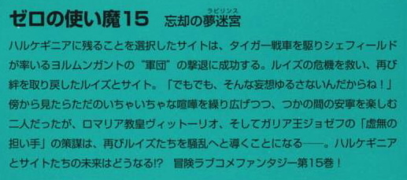
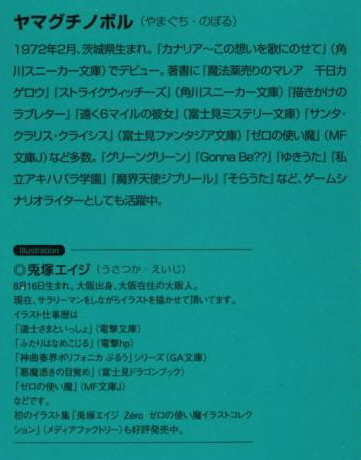

| [ヤマグチノボル] ゼロの使い魔15 | |
| ヤマグチノボル | |
| (2015) | |
|
ゼロの使い魔15 忘却の夢迷宮
ヤマグチノボル
|



第一章 カルカソンヌ
ガリア南西部に位置したカルカソンヌは、王都リュティスから西に四百リーグほど離れた中規模の城塞都市だった。
だが、その見た目はただの城塞都市ではない。
幅五十メイル、長さ二リーグもの細長い、橋のような崖の上に造られたこの街は、空から見るとまるで巨大な蛇がうねっているような姿をしていた。
立ち並ぶ赤レンガの屋根は、まさに蛇のうろこのよう。そんな景色にちなみ、この街は〝セルパンルージュ〟の異名も持っている。
人口二千人ほどの、歴史ある街である。幾度となく亜人の侵攻を防いだこの街の真ん中を貫く街道を、必死の勢いで逃げる使い魔とその主人がいた。
「とまりなさい！ 女王陛下の名において、直属女官たるルイズ・フランソワーズが命令するわ！」
才人は、はぁはぁ、と息を切らしながら、石畳の道を逃げ惑う。ロマリア軍といっしょにやってきたこの奇妙な主従を、通りの人々が怪訝な面持ちで見守っている。
魔法学院の制服姿のルイズは逃げる才人の腰に、抱きつき、二人は、どう！と地面に倒れた。
「は、はなせよ！」
「今日という今日は、あんたにきっちりお説教なんだから！」
ルイズはぴょこんと地面に座り込むと、才人の顔に指を突きつけた。すでに顔は真っ赤である。
「もう聞き飽きたよ！ 毎日そればっかりじゃねえか！」
そうなのだ。虎街道でミョズニトニルン率いるヨルムンガントの部隊を撃破してから、二週間が過ぎている。
その間、ルイズはこうやって才人を責めっぱなしなのであった。それは......、ルイズの中に滑り込んだ、才人の記憶が原因だった。
才人との別離に耐えられなかったルイズはティファニアに頼んで、才人の記憶を消してしまったのだが......、使い魔と主人の絆は、そのぐらいでは切れなかったらしい。というか、ルイズの中の、使い魔を求める気持ちがそうさせたのだろうか......、とにかく才人と唇を重ねたルイズの中に、才人とのそれが流れ込んできたのである。
才人視点からの二人の記憶は、様々なものが入り混じっていた。つまりそれには現実の出来事だけでなく、才人の〝妄想〟と呼ばれる鮮明な映像がふんだんに含まれていたのだ。才人は年頃の少年だったので、その妄想にはあらゆる意味での遠慮がなかった。
「こないだの〝トイレで教育〟はまあいいわ。よくないけど、理解の範囲だわ」
「それが理解範囲って、お前成長したなあ」
才人が嬉しそうに言うと、ルイズはさらに顔を赤くさせた。
「で、でも、でも......、でも！」
でも！ と、最後にルイズは拳を握り、力を込めた。
「〝中庭で目隠し〟はありえないわ！ ありえないわよ！」
ルイズはぽかぽかと才人を殴りつけた。
水精霊騎士隊の少年たちと、タバサとキュルケは、街道に張り出した酒場のテラスから、一部始終を見つめていた。
「いやぁ......、恒例となった酒のつまみと言うべきかな」
ギーシュが、ワインの杯を傾けながら呟く。
レイナールが眼鏡を持ち上げて、
「しかし、ルイズには困ったもんだな。サイトがどれだけ、ルイズのために戦ったか......。ちょっとぐらいヘンな想像したって許してやればいいじゃないか」
「レイナール。きみも、好きな女の子について、けしからんことをたくらんだりするのかい？へえ、堅物のきみがねぇ......」
ギムリにそうからかわれ、レイナールは頬を染めた。
「違うよ！ ただ、男だったら少しはそういうこと考えるだろ？ぼくはあんまりそういうことには興味がないが、一般論としてだね......」
「きみがその一般論を繰り広げている女の子を言ってやろうか？」
レイナールは無言でワインを飲み干した。
それから少年たちは、いかにルイズが怒りっぽく、才人が可哀想かという話題で盛り上がる。
「まったく、ルイズときたらまるで子供だからな！」
「サイトもずいぶん我慢強いよな。ぼくなら無理だ」
そんな中......、一人怒りに肩を震わせている少年がいた。
マリコルヌである。彼は皿の上の料理を、フォークでぐりぐりと突きまわしながら言った。
「お前らの目は、ホント節穴だな」
「おい、どういう意味だ」
「ありゃあ、茶番だよ」
肉が刺さったフォークを、マリコルヌは才人とルイズに突きつけた。ルイズは才人を殴ろうとして、それを才人が防いでいる。いつもの光景に見えた。
「茶番だって？」
問い返す仲間たちに、マリコルヌは頷いた。
「よく見ろ」
仲間たちは、ルイズと才人に再び注目した。
そして、その目を見開いた。
ルイズは才人をぽかぽかと殴りつけているが......、軽く握った拳を、胸に当てているだけである。
才人ときたら、すっかり余裕の表情で、まるで子供をあやすようにルイズの攻撃を受けていた。
そのうちにルイズはぐずるように唇を尖らせ、顔をそむけて人差し指で才人の手の甲をぐりぐりとやり始めた。
才人がそんなルイズの腰を引き寄せ、二言三言耳元で呟くと、ルイズはさらに恥ずかしそうに顔を伏せ、何事か呟く。
「......ばか。きらいよきらい。......かぁ」
マリコルヌが、ため息が混じった声でルイズのセリフを読唇した。匠の技だった。
「きっと、もっと、ひ、ひひ、ひどいことわたしにさせてるんだわ。かぁ......。ばかいうなよ。これで、全部ダヨ、かぁ......。ほんと？かぁ......。あったりまえじゃないか、かぁ......。でも、こんな想像するあんたなんかキライ、かぁ......」
マリコルヌは、ケッ！ と吐き出すように横を向いたあと、鬼の形相で立ち上がり、絶叫した。
「満更でもないツラで言われたって、迫力ねぇえええええええええんだよッ！」
ひうッ！ と一瞬でテーブルの仲間たちはその迫力に震える。
「メインディッシュの前の軽い前菜ってわけだろ？イチャイチャの前の、ちょっとした隠し味だろが。そ、そ、そんなもんはなぁ......、人目につかねえ場所で、こっそり行うのが貴族のマナーってもんなんだよゥ......」
「マ、マリコルヌ......」
ギーシュが立ち上がり、仲間の肩を掴もうとした。
「ぎゃッ！」
その顔に、マリコルヌの拳がのめりこむ。
「そんなふざけた出し物を、天下の往来で繰り広げるたあ、よほど命がいらんらしいな」
才人とルイズは、本人たちだけがケンカだと思っているイチャイチャを、恥も外聞もなく続けていた。
ルイズは才人に後ろから抱きすくめられ、両手を握られ、もじもじとしている。才人はそんなルイズの顔を、横から必死に覗き込もうとするのだが、そのたびにルイズは顔をそらすのだ。
「わたしね、あんたたち男の子という生き物が、わたしたちとまったく違う生き物ってこと、なんとなく知ってるわ。だって、あんたみたいなのがいっつもそばにいたんだもの」
「いやね。ルイズ、だからあれはなんていうか極端な例の一つで......」
「なんで男の子ってそうなの。どうしてこんなことばっかり考えるの」
「それはなんていうか、その......」
才人は頭を捻った。もう少しで落ちそうな果実が、針金でがんじがらめに縛られた気分だった。なんとかして誤解を解かねばならない。誤解じゃなく、事実だったが、箱入り娘のルイズには刺激が強すぎたに違いない。
好きな女の子が自分に惚れてて、おまけにいろんなことを許してくれそうな雰囲気だったのに......、肝心のところでトレイをひっくり返してしまった。
どうにかしなくちゃ......。考えに考え、行き詰まった才人の口からは、とんでもない言い訳が飛び出した。
「あのだね。その、俺の中には一匹の子鬼が住んでてね。そいつが俺にあることないこと吹き込むんだ」
ルイズの肩がぴくんと震えた。
「こおに？」
「ああ。いろんないけない情報を、俺にもたらす悪いやつなのです。ここだけの話だが、毎日俺はそいつと戦っています。そいつは手ごわく、また、魅力に満ちています......。いやその、魅力といっても男にとってのみですが」
ルイズはこういう言い訳が嫌いである。というか、才人の妄想は正直つらかったが、実際のところ、それほど怒っているわけではない。半分は照れ隠しである。内容はともかく、それほどに自分のことを考えていてくれたのか、という事実は、素直に嬉しい事柄だった。
それなのに、よりによって心の中の子鬼とはどういうことか。騙すにせよ、もうちょっとうまく騙すべきではないだろうか。それとも自分をナメているんだろうか。そうに違いない。まったく、人をバカにするにもほどがある。
ルイズは足に力をこめた。このまま捻りを加えて蹴り上げれば、才人の弱点......、つまり股間を狙い打つことができる。再び子鬼について講義をたれるつもりなら、遠慮なく跳ね上げる。そう考えたとき......、才人のセリフが飛び出した。
「ま、そんな子鬼には言わせておけばいい。でも、根っこの俺の気持ちは本物だよ」
昔才人は、クラス対抗の野球大会で、一度もホームランを打ったことがなかった。だが、このべタで捻りのない一言はルイズを撃破する会心の本塁打であった。
白球はフェンスを越え、場外へと飛び出していく。その先にはルイズがいて、頭のてっぺんに白球は激突する。
ルイズはへなへなと身体から力が抜け、才人に寄り添ってしまう。
「子鬼には放っておいてほしいわ。あのね、わたしね、綺麗なのが好きなの。ロマンティックなのがいいの。だから、トイレとかお前は誰の犬だとか、中庭で反省文を読み上げ〝ながら〟とか、そういうことあんまり考えないでほしいの。なんていうかね、大事なものが穢れる気がするのよ」
才人は何度も頷くと、優しくルイズを抱きよせた。
「わかった。努力するよ」
「そうしてくれると、ほんとにうれしいわ」
「仲直りしようよ」
「そ、そうね」
才人がルイズの顎を持ち上げると、怒ったように目をつむった。ゆっくりと才人が唇を近づけようとしたそのとき......。
後ろから突風が吹きつけ、二人は通りに転がった。
「なんだ！」
才人が跳ね起きると、後ろには仁王立ちの巨大な〝鬼〟がいた。
「マリコルヌだよゥ......」
淡々と己の名前を名乗る小太りの少年を、二人は震えながら見つめた。巨大と見えたのは、その全身から発する怒りのオーラがあまりにもすごいので、見間違えたのである。
「......マ、マリコルヌ」
「そう。我の名はマリコルヌ。全カルカソンヌ市民の声を代弁して恥知らずな〝異教徒〟どもに罰を与えんとする神の鉄槌なり」
歌うような、楽しげな声でマリコルヌは言った。
才人とルイズは、這い蹲って逃げ出そうとした。ドットメイジに過ぎない、マリコルヌの発する怒りのオーラに、伝説の担い手たちが怯えたのである。
ぴりぴりと空気が震え、オーラが電撃を撒き散らした。電撃魔法は、主に風系統が使うが、そのほとんどは高位の呪文であるため、ドットのマリコルヌは使えない。だが、彼の周りには電撃の火花が飛び散っていた。
呪文の威力は感情により増幅するのだ。
マリコルヌが呪文を唱えると、その頭の上に雲が完成した。
「やめ！ やめろ！ マリコルヌー！」
雲からは稲妻がほとばしり、ルイズと才人に直撃した。二人は仲良く電撃を浴び、通りに倒れた。それでもマリコルヌは怒り収まらぬのか、二人の身体をげしげしと踏みつけている。
水精霊騎士隊の少年たちが、仲間の怒りを抑えるため飛び出していくさまを、燃えるような赤髪をなびかせたキュルケがぼんやりと見つめていた。
「あらあら。あの人たちってば、どこに行っても緊張感が足りないのね」
両手を広げ、呆れた声で呟く。
「しかしまあ、始まったときにはどうなることかと思ったけれど、こんなに早くここまで来れちゃうとは思わなかったわよ」
教皇ヴィットーリオが〝聖戦〟を発動したのは、ウルの月、ティワズの週、イングの曜日。それから二週間ほどで、ロマリア軍がガリアの奥深くまで侵攻できたのは、この戦いの引き金ともなった両用艦隊の本物の反乱が原因だった。
ミョズニトニルン率いるヨルムンガントの敗北と同時に、艦隊司令のクラヴィル卿は悪夢から目覚めたのである。
いくら〝ロマリアをくれてやる〟と言われたからといって、自分たちが行おうとしたことはまともではない。その上、〝聖戦〟まで発動されたとあって、クラヴィル卿は完全に戦意を失った。いかにガリアが強大といえど、信じる神を敵に回しては勝利はおぼつかない。
決断したクラヴィル卿は、素早かった。ロマリア艦隊の追撃を振りきると、一目散にサン・マロンへと取って返した。そこで改めて、今回の陰謀を正直に打ち明け、ロマリアへの恭順を全将兵に問うたのである。
クラヴィル卿は才能溢れた指揮官ではなかったが、伊達に長い艦隊生活を送っていたわけではない。乗組員たちの支持は意外に篤く、それにもともとこの作戦に対し思うところのあった将兵は少なくなかった。結果、ほとんどの将兵が反乱に応じた。
晴れて本物の〝反乱艦隊〟となった両用艦隊の決起は、瞬く間にガリア全土に伝わった。
それに呼応したのは、王都より離れ、不遇をかこち、ジョゼフに思うところのあった諸侯たちであった。
聖戦と両用艦隊の反乱。
この二つは、かねてより王政府に対し不満と不信を感じていた諸侯たちにとって、背中を押してくれるまたとない機会だった。
ロマリアとガリアをつなぐ、〝虎街道〟のガリア側の入り口を擁するフォンサルダーニャ侯爵領は、真っ先にサン・マロンの反乱に応じた土地であった。
領主のフォンサルダーニャ侯爵は、前年、領地の一部を王政府に召し上げられたことに対し、深い恨みを抱いていたのだった。
彼は決起と同時にロマリアに伝令を飛ばし、領内の通行および義勇軍を編成しての、協力を告げた。長年ロマリアとの国境を守ってきた名門フォンサルダーニャ侯爵家の反乱は、旗幟を窺っていた諸侯をも味方に引き入れた。
結果、王都から離れたガリア南西部の諸侯は、次々に反乱側に与していった。ロマリア軍は堂々と聖戦旗を掲げ、そんな反乱勢の土地を通りながら、ほぼ無血でカルカソンヌまで進軍してきたのである。
だが、そんな攻勢もここまでであった。
カルカソンヌの北を流れるリネン川の向こうには、それでも王政府に忠誠を誓うガリア王軍が待ち構えている。その勢力はおよそ九万。国の半分が反旗を翻しても、それだけの兵力をかき集めることができたのは、さすがハルケギニア一の大国といえた。
反乱軍を合わせても、ロマリア側の兵力は六万に過ぎない。聖戦の錦旗があるとはいえ、容易にひっくり返せる兵力差ではない。両用艦隊が味方についてはいたが、彼らがすぐに同国人相手に砲弾をばら撒けるわけもない。
一方、数で勝るとはいえガリア王軍の戦意も低かった。聖戦を発動した相手に杖を向けることの愚かさを彼らはよく知っていた。
いろいろと複雑な事情がそのように絡み合った結果......、両軍は川を挟んでの睨み合いを開始したのである。
「ところで、どうしてあなたの騎士さまを助けてあげなかったの？見てたら、主人ごと電撃で黒焦げになってたわよ？」
キュルケにそう問われても、涼しげな青髪の少女......、タバサは黙々と本を読むばかり。
そんなタバサの様子を、キュルケはじっと見つめた。キュルケの小さな親友は、いつもと変わったところはまったくないように思えた。でも......、どことなく違うように見えるのだ。それは、いつもいっしょにいたキュルケだからわかる、微妙な変化だった。
「あなた......、やっぱり緊張しているの？」
ここはガリア王国の真ん中だ。その王冠を被るのは、父の仇......。その上この前は、その伯父王に心を消されそうになったばかりである。
そんな憎むべき仇に近づいている......。昔のように、無力な存在としてではなく。それが可能な陣容の軍勢と共に......。
緊張するのも無理はない。
「違う。そうじゃない」
タバサは本を閉じると立ち上がる。そしてすたすたと歩き出した。
キュルケはテラスの向こうに視線を移した。両脇が切り立った崖の上に位置したカルカソンヌの街は、見晴らしがいい。崖の裾野には平原が広がり、キラキラと陽光を受けて輝くリネン川が見えた。その川の両岸には、睨み合うロマリア軍とガリア軍の姿が見える。
それから、才人たちの方を眺める。マリコルヌがとり押さえられ、電撃でボロボロになった才人とルイズを少年騎士たちが介抱していた。
そして宿舎へと向かうタバサの背中......。他の人にはまったくいつもと同じように見えるだろうが、キュルケにはわかる。
何か、彼女の心の中に動くものがあることに。
なんなのかしら......、と考え、不意にキュルケは気づいた。女のカンが、いやでも、だけど、もしやそうなのかしら、と教えてくれる。
顎に手をあて、キュルケは首をかしげた。
「でも、あの子に限って......、さすがにそんなことないか」
周りに立っていたロマリア軍の一兵士が無言でタバサの後にくっついていく。彼らは、ルイズたちトリステイン人が一歩宿舎を出ようものなら、こうやってずっと影のように寄り添うのだ。特に才人と、ガリアの元王族であるタバサの監視には徹底したものがあった。飲んで浮かれようが騒こうが、彼らは気にも留めない。だが、いつまでもどこまでも、くっついてくる。さすがに部屋の中までついてはこないが、扉の外にじっと立ちつくす。
名目上は、〝重要人物の護衛〟であったが......。
「まるで捕虜みたいね」とキュルケはひとりごちた。
それから首を振り、
「いや......、人質ね」
マリコルヌとの騒動のあと、宿舎の部屋に戻ってきたルイズと才人は、ふぅ、とため息をついてベッドに腰かけた。
扉の外に向かって、ルイズはべぇー！っと舌を出した。そこに控える、ロマリア軍の兵士に向けられたものだった。
「なにが『往来での騒ぎはできればご遠慮ください、アクイレイアの聖女どの』よ。聖女？あんたたちが勝手に仕立て上げたんじゃないの」
「お前、ノリノリで就任したって聞いたぞ」
才人が冷ややかな目でそう言うと、ルイズは顔を赤らめた。
「だ、だって......、しょうがないじゃない。あのときはそうするのが正しいと思ったんだもの」
ルイズは恥ずかしそうに言った。失っていたのは才人の記憶のみで、他の記憶は完全に残っている。確かにあのとき自分は、ハルケギニアの貴族として、ロマリアの正義に従うしかないと感じていた。
「お前な......。帰るのを選んだら、あいつら俺のことを殺すつもりだったんだぞ。まあ、俺はそんな腰抜けじゃないから、今現在ここにこうしていられるわけですが」
才人は得意げに言った。ルイズは怒りに震え、
「それが許せないのよ！ 教皇聖下が嘘をつくなんて！世も末だわ！」
「ま、約束は破ってねえだろ」
「どういう意味？」
「あいつらは、お前に〝俺を帰す〟と約束したけど、その生死までは保障しなかった。それだけの話なんだろ」
「そんなのってないわ！ それは詭弁よ！」
ルイズは腕を組むと、唇を尖らせた。
「まあ、あんまりカッカするなよ」
「なんであんたはそう冷静なのよ！ わたし、自分がブリミル教徒ってことがこれほど恥ずかしくなったことはないわ！まったく、新教徒か砂漠の悪魔に宗旨替えをしたいくらいよ！」
と、他の貴族が聞いたら目を回すようなことを平然と言ってのけた。
「いいじゃねえか。今のところ、利害は一致してる。とにかく俺たちが協力する以上、あいつらもヘンなことはしないだろ。せいぜいガリアの王さまをやっつけるまでは、こっちもあいつらを利用させてもらおうじゃねえか」
「ふんだ。そうそううまくいくかしら」
「大丈夫だよ。姫さまだって、そのために本国に帰ったんだから」
そう。
アンリエッタはあのあと、才人たちから事情を聞くと、唇を噛みしめた。それから凛とした顔で、才人とルイズに言ったのである。
「わたくしにお任せください。わたくしは全生命を賭けて、この愚かしい〝聖戦〟とやらを止めてみせましょう」
その顔には、激しい決意が溢れていた。アルビオン軍が攻めてきた際、真っ先に会議室を飛び出して行ったときの、厳しい表情だった。
「そりゃ姫さまはそう請け負ってくれたけど......。〝いらない〟って思われたらそれまでだわ。きっとロマリアの連中、わたしたちを闇に葬るぐらい、平気でするわよ」
ルイズが心配そうにそう言っても、才人は涼しい顔だった。
「平気だって」
「どうしてよ！」
「アクイレイアの聖女に、甲冑人形を全滅させた虎街道の英雄。どっちもこっぱずかしい名前だけど、今やあいつらにとっては、とりあえず最重要の手ごまの一つには違いない。せっかく作った看板を、みすみすぶち壊すような真似はしないよ。ほらあれだ。士気に関わるからな」
ルイズは、ぽかんとして才人を見つめた。
「どうした？」
「やだあんた。随分とまっとうなこと言うじゃないの」
確かに才人の言うことはもっともだった。
「あのな、俺だって伊達に騎士隊の副隊長やってきたわけじゃねえよ。剣を振り回すばかりじゃ勝てない相手がいるってことも少しは学んできたつもりだ」
さらっとそう言ってのける才人の横顔は凛々しかった。
やだ......、こいつかっこいいじゃないの。ルイズは激しく胸がときめくのを感じ、頬を染めて才人を見つめてしまった。
「どうした？」
「な、なんでもないわ」
ルイズは慌てて顔をそむけ、膝の上に拳を置いて傭いた。ルイズのそんな様子を見て、さすがの才人も、自分が発した一連のセリフがルイズをどうにかしたのを理解した。
心の中で、うおっし、うおっし、と何度も拳を握り締め、才人は喜びに震えた。ま、まいったな......、ルイズのやつ、結構こういうのに弱いんだよな......。なんつうの？頼れる感じ？俺も普通にそういうのが出てくるほど、成長したってことか！才人は自分を褒めてあげたい気持ちでいっぱいになった。
ああ、やっぱり帰らないで正解だわ俺......。
ルイズは恥ずかしそうにぷるぷると震えている。ストレートに自分の気持ちを伝えることができない女の子......。でも、誰よりもまっすぐで、自分が心に決めたことを何があっても曲げない意志の強さを持っている。
才人はルイズのそんなところに惹かれたのだった。
ルイズは以前から比べると、随分と変わった。妄信していたアンリエッタやブリミル教にも、疑問をぶつけねばいけないときははっきりとそれを口にするようになった。
でも......、根っこの部分は変わらない。才人がギーシュにぼこられたとき三日間ぶっ続けで介抱してくれた優しさ、恐ろしいゴーレムの前から逃げださなかった勇気、そういったものはまったく変わってない。
そして、見てるだけでどきどきしてしまう横顔の美しさ......。軽く上唇を噛み、たまに上下する瞼を彩る長い睫毛......。そういったパーツが織りなす奇跡のようなコントラストが、ルイズを比類なき美少女に仕立て上げている。
心の中に、平和ななにかが満ちていく。
好きな女の子に好かれている。これに気づく瞬間より幸せな時間を、才人は知らない。
喉がカラカラに渇きそうになり、思わずそのまま抱きしめて押し倒したい衝動にかられる。きっとルイズは拒まない。生物本能的勘でそれがわかる。
才人はルイズの顎を持ち上げた。桃髪の美少女はおとなしく目をつむる。すましているつもりなのか、それとも照れ隠しなのか、怒ったように唇を尖らせている。でも、頬が髪のように桃色に染まっているので、どんな気持ちなのかは一目瞭然だった。才人が無造作に唇を押しあてると、ルイズはひし、と抱きついてきた。
小さなルイズの背中は震えていて、才人は心の底から愛しく感じた。この小さな身体は、俺が守るのだ。これからも、ずっと......。
才人と唇を重ねたルイズの中に、再び才人の記憶が流れ込んできた。たぶん、才人のかつての空想だろう。でも、どんな光景を見てもルイズは驚かないことにした。
だって、男の子はそういうものよ。わたしとは違う論理で動いてるの。たまにはしょうがないわ。
今回、流れ込んできた〝記憶〟は、魔法学院の自室のベッドの上、シエスタと三人で川の字になって眠っているものだった。
やだ......、こいつってば。隣でシエスタが寝ているのに、わたしに手を出そうとしたんだわ。というか、わたしが寝ている隙にキスの一つでもしたのかしら？
ルイズは激しく胸が高鳴った。そんなのってないわ。冒とく！冒とくだわ！
記憶の中の才人は、ルイズに手を伸ばすと、そっと揺り起こす。
ああ、わたしを起こすのね。
わたしにそんな記憶はないから......、これは才人の妄想ね。そこでルイズははたと気づく。わたしの今の記憶は......、才人の中にあったものではないの？
どうして、わたしはこれが現実にあったことではないと〝言いきれる〟のだろう？そうすると、いくつかの記憶......、自分自身だけの、才人への記憶が蘇った。
〝どうして？〟
主人と使い魔の絆、というだけではくくれない不可解な出来事だった。
だが......、そんなふと思いついた疑問は、〝記憶〟の内容で吹っ飛んだ。
なんと記憶の中の才人はシエスタをも揺り起こしたのである。
「じゃあ三人で」
ルイズは才人から身体を離すと、無表情のまま突き飛ばした。
「な......、ルイズ？」
あっけにとられた顔で、才人はルイズを見つめる。それから原因に思い当たるが、どれだかわからない。とにかく才人も年頃の少年なので、致した妄想は星の数であった。
「ど、どうしたんだ？」
理由には思い当たるが、そのどれかまでは特定にいたらない。知っていながら、才人はルイズに尋ねてしまった。
「トイレや中庭ならまあ我慢もするわ！ でも、他の子と同じ扱いだけは我慢できないんだから！」
才人が、どれだろう？ と首をかしげたので、ルイズはその顔に思い切り足の裏を叩き込む。
そう。そんなにたくさん想像したってことね！
ルイズは正座をすると、腕を組んで思い切り才人から顔をそむけた。
「男の子って、本当にバカ！」
タバサは自分に与えられた部屋の中で、ベッドに横たわっていた。ドアがノックされて、タバサは身を起こす。
「......誰？」
なぜか胸が高鳴るのを、タバサは覚えた。
ノックの主はそれに応えず、ドアを開ける。タバサの目が細まった。
「やあ」
立っていたのは、水精霊騎士隊のマントをはおった才人だった。
タバサは毛布を引き寄せた。寝巻き姿だったからだ。
「......どうしたの？」
そう尋ねると、才人はベッドのそばにやってきて、タバサの隣に腰を下ろす。
「こんな夜中にごめんな。話があってさ」
「話？」
期待に胸を震わせながら、タバサは尋ねた。
「ああ。いつだか、お前に話しただろ？ ほら、水精霊騎士隊の話。俺たちはやっとのことでガリアまでやってこれた。お前の憎い仇のいる、このガリア王国に。要は、俺たちもお前の復讐の手助けがしたいんだよ。そのためにも、俺たちと同じ紋章をつけてたほうが、何かと便利じゃないかなって」
なんだそんなことか、とタバサは軽くがっかりした。
「なあ。入ってくれよ」
才人は、タバサの方を向くと、手を掴んだ。思わず、タバサはその手を振りほどいてしまう。すると才人の目に、ありありと悲しみの色が浮かんだ。
「そうだよな......。無理言ったよな。ごめん」
「いい。気にしないで」
手を振り払ったのは、騎士隊に入りたくない、という意思表示ではない。もちろん拒絶の意味でもない。ただ......、恥ずかしかったのである。でも、そんな感情を表に出すことは、憚られた。タバサは、顔をそむけた。
沈黙が流れた。タバサはいつも、ほとんどしゃべらない。だから相手が黙りこむと、何も会話がなくなってしまう。
「話ってのは、もう一つあるんだ」才人の、そんなセリフが沈黙を破る。
「......何？」
「単に、その......、会いたくてさ」
胸が締めつけられるような気がした。でも、それは表情には出ない。そう自分を訓練してきたから。でも、微かに声が震えた。
「......どうして？」
「なんでかな。きっと、好きなんだろうな」
「でも、あなたには......」
「お前のほうが好きなんだ」
はっきりとそう言われ、タバサはポーカーフェイスを保てなくなった。ぶわっと抑えていた感情が顔に現れた。頬が熱い。もしかしたら、赤くなっているかもしれない。思わず頬を押さえようとすると、その手を掴まれ、手繰り寄せられた。自然に才人の胸に頬がおさまる。
顎を掴まれて、まったく抵抗できないままにタバサは目をつむった。近づく唇が瞼にうつる。タバサはゆっくりと目を閉じると同時に......、目を覚ました。
目を開けると、まだあたりはうす暗かった。クローゼットに置かれた機械式の時計を見ると、午前四時だった。
「......夢」
タバサがこんな夢を見るようになって、結構な時間が経つ。才人が出てきて、自分に愛の告白をする夢......。
いつの頃から、自分がそれを見るようになったのか、タバサはよく知っている。
アルビオンにティファニアを迎えに行き、ミョズニトニルンの操るヨルムンガントと戦ったとき......。
タバサは、精神力の切れたルイズの感情を震わせるために、自ら才人の唇に自分のそれを押しあてたのだった。
もちろん、それはルイズに嫉妬を覚えさせるため、以上の意味を持っていなかった。自分が仕えるべき騎士。自分が才人にそれ以上の感情を抱くなんて想像もしていなかったし、また、そんな気持ちにもならなかった。
でも......、あれ以来、タバサは才人の夢を見るようになったのである。その夢は、ちょっとした感情の変化をタバサに与えていった。
会うたびに、わずかに胸が締めつけられるような、そんな感情......。
タバサは自分の中のそんな感情を、冷静に否定した。仕えるべき騎士、と決めた相手に、擬似的な恋愛感情を抱くのはよくあること。自分の場合も、そんなことに過ぎない。
タバサは知識として、そのことを知っていた。
だが同時に、それを否定するような出来事もあった。
才人たち水精霊騎士隊の少年たちが風呂覗きを行ったとき......。タバサは才人を怒り狂った女子生徒の包囲から救い出した。
息をひそめて、二人で食堂に隠れた際、タバサは才人に「自分を見るな」と告げた。何も服を身に着けていなかったからだが、自分が仕えるべき騎士殿に、肌をさらすことを恥ずかしがる従者はいない。いつもの自分ならそう判断するはずなのに、見るな、と自分は言った。
その理由がタバサにはわかる。
肌を見られたら......、何かが自分の中で加速してしまう気がしたからだ。タバサは膝を抱えると、唇を噛んだ。
〝気持ちが高ぶっているからだ〟とタバサは自分に言い聞かせた。ジョゼフがいるリュティスに自分は近づいている。だから、こんなにも感情が高ぶり、あの夢の頻度も増えてしまうのだ。
でも......、かつてはあんなに頭の中を占めていた復讐のことより、今はあの夢のことを考えているときのほうが長い。
「......どうして？ 恋に恋してる？」
タバサは知識として得ているそんな言葉を利用して、己の状態をなんとか規定しようとした。自分は今までいろんな本を読んできたじゃないか。わからないことなど、世の中にはないのだ。そう。自分の心のことだって......。
でも......、すべての本を思い返してみても、自分の気持ちがなんなのか、確かめるすべは書いてなかった。
ぼんやりと窓の方を向くと、使い魔のシルフィードの顔がそこにあった。シルフィードは、ぽんっ！と空中で人に化けると窓を開けて部屋の中に飛び込んできた。
「こんなところで、人に化けちゃだめ」
「きゅい！ それどころじゃないのね！ おねえさま、いったいその顔はなんなのね！」
「......なに？」
「もう！ おねえさまのことはいつも見守っているシルフィなのね！ああもう！そんなことはどうでもいいのね！その顔は明らかにどうにかしちゃってる顔なのね！頬が染まっているのね！どんな夢を見たか言うのね！」
すっぱだかのまま、シルフィードは部屋を転がりまくった。激しく興奮しているらしい。
「さてと」
それからおもむろに立ち上がり、タバサの頭に手を置いた。
「さて、夢の中の逢い引きの相手は誰なのね」
妙に鋭いシルフィードであった。タバサは返事をせずに、毛布を頭から被った。シルフィードはその隣に潜り込み、再び顔を覗き込んだ。
「言うのね」
「あなたには関係ない」
「関係ないことないのね。とっても大事な、いや、まさにシルフィが待ち焦がれた瞬間なのね。まあ任せるのね。このシルフィが、絶対に成功させてみせるのね」
「勘違いしないで。平気」
「勘違いじゃないのね。古今東西、『夢で逢えたら』状態が『夢で逢うだけ』状態で終わったためしはないのね。必ずなにか一波乱あって、傷ついたり、タマゴを産んだりするのね」
「わたしたちはタマゴは産まない」
「言葉のあやなのね。とにかく、おっしゃい。ちびすけ」
シルフイードは、うりうりとタバサの頬をつついた。
「言うのね」
結局、朝までそんなやり取りは続いたが......、タバサは頑として己の使い魔に相手の名前を告げなかった。
第二章 中州の騎士試合
カルカソンヌの北方に流れるリネン川を挟んで、ロマリア、ガリア両軍が対峙して三日が過ぎた。その間、幅二百メイルほどに過ぎない川の間を一番飛び交ったのは矢玉でも魔法でもなく、〝言葉〟であった。
「おーい、ガリアのカエル食い！ 聞こえるかぁ！」
と、ロマリア軍の一兵士が大声で叫べば、
「聞こえるぞ！ 腐れ坊主ども！」
とガリア軍から返事が飛んだ。
「お前の国は、ほんとにまずいものばっかりだな！パンなんか粘土みたいな味がしたぜ！おまけにワインのまずさときたら！酢でも飲んでる気分だな！」
「坊主の口にはもったいねえ！ 待ってろ！ 今から鉛の玉と、炎の玉を食わせてやるからな！」
「おいおい！ 怖気づいて川ひとつ渡れねえ野郎がよく言うぜ！」
「お前たちこそ、泳げるやつがいねえんだろ！いいからとっとと水練を習ってこっちに来やがれ！皆殺しにしてやる！」
延々とお互いを罵る言葉が乱れ飛ぶ。そのうちに頭に血がのぼった貴族が一人二人現れ、川の真ん中に位置した中州で一騎討ちが始まる。
勝利者はそこに居残り、堂々と己の軍旗を立てた。すると自軍から大きな歓声が沸いて、士気があがる。負けた陣営は、地団太踏んで悔しがり、すぐに別の挑戦者が現れ......、といった次第。
決闘に負けて怪我したり、死んだりした貴族は、中州の両脇に控えた両陣営の小舟が回収する。その小舟に攻撃を加えない程度の騎士道は、この時代にもまだ生き残っていた。
今現在、中州に翻っているのはガリア軍の旗だった。盛んにガリア軍から野次が飛ぶ。
そんな様子を、ロマリア軍将兵たちに交じって川岸で眺めていたギムリが、ぼけっとした声で言った。
「なんだ、アルビオンのときと比べると、随分のんびりとしてるなあ」
「派手だったのは、最初だけだね」
マリコルヌも感想を述べた。
そんな会話を聞いていたレイナールが、ぽつりと言った。
「お互い、後ろめたいんだよ。きっとね」
「後ろめたい？」
才人が問い返すと、レイナールは頷いた。
「ああ。聖戦が発動されたとはいえ、相手は異教徒でも新教徒でもない、同じブリミル教徒じゃないか。なんのための聖戦なんだかわかりゃしないよ。エルフと手を組んでるって言われたって、まだ実際見たわけじゃない。一方、ガリア軍はガリア軍で、国の半分がこっちに味方してる状態だ。気持ちの整理がつかないんだろ」
「ふむ」
「かといって、いったん〝聖戦〟を発動した以上、ひっこみはつかない。向こうにしたって、祖国に土足で踏み込まれた以上、戦わないわけにはいかない。ま、いくら聖戦の錦を掲げようが、ぼくたちは侵略軍だからね」
「で、この奇妙な睨み合いは続いてるってわけか。まったく、このまま終わったら、アホな話だな。死んだ連中はほんとに死に損じゃねえか」
才人がそう言うと、レイナールはちょっと厳しい顔になった。
「いや、長引けば長引くほど、ぼくたちは不利になる。なにせここは敵地だからね。こっちについてるガリアの南部諸侯だって、旗色が悪くなればまた寝返るかもしれない。そうなったら面倒だよ」
「面倒じゃなくて、破滅じゃないのか？」
「そのとおり」
きっぱりとレイナールは言いきった。
「それを避ける方法は？」
「次の会戦での決定的な勝利。要は川向こうの連中に何がなんでも勝たなきゃいけない。それしかないね」
才人は、やっぱりタイガー戦車をどうにかしてでも無理やり運んでくればよかったかな、と考えた。
ヨルムンガント撃破に活躍したタイガー戦車は、アクイレイアの街に置いてある。
でも、やっぱり無理だったな、と考え直す。何せあの戦車ときたら、ただ走らすだけでも一苦労なのだった。ちょっと走っただけで、必ずどこかの部品が悲鳴をあげる。
壊れても予備部品はないし、なんとか〝錬金〟を駆使してワンオフで作るにしても時間が足りない。
天才的エンジニア......、この世界で世辞も何も抜きで最高の整備士たるコルベールをもってしても、タイガー戦車をロマリア国境から八百リーグも離れたここまで自走させるのは不可能だった。奇跡が起こって道中の予備部品が確保できても、どのみち燃料が不足するからだ。
『オストラント』号で運ぶにしても、戦場から戦場へ、いちいち積み込みと荷降ろしを繰り返すのはあまりにも手間だった。
積んでいるだけで、風石の消費は倍近くなるし、熟練のメイジが二十人も必要だった。
そんな任務に一個騎士隊を割ける余裕は、劣勢のロマリア軍にはなかった。逆に足手まといになりそうなので、思い切って置いてきたのである。
結局、飛行機と違い、トレーラーや鉄道がない世界で戦車を運用するのは無理なのだった。コルベールはそれでもなんとか運用の方法を考える、と、『オストラント』号とともにアクイレイアに残って、必死に作業を行っている。
何をどうするのかは聞く暇がなかったのでわからない。でも、さすがのコルベールでも、あの戦車を効果的に運用するのは無理に違いない。
まあ、持ってきたところで、十万近い大軍が相手では、焼け石に水だろう。
それに......、敵とはいえ、あんな大砲を人間相手に使う気にはなれなかった。
頼みの綱は、アンリエッタだけだった。彼女はこの戦を止める、と宣言してトリステインに帰っていったが、その際にこう言い残した。
「くれぐれも軽挙妄動は慎み、時間を稼いでください」
だから才人たちは、この地でなんとか時間を稼ぐつもりであったが......。
次、ヨルムンガントの軍団がまた出てきたら？
もう、自分たちになすすべはない。持ってきたＡＫ小銃とデルフリンガーのみで何ができるというのだろう。才人は震えた。
「武者震いかい？」
「いや、怖いだけ。ところでギーシュはどうした？」
マリコルヌが指さした。
見ると、ギーシュが川べりに立って、小舟で中州に向かおうとしている。ロマリア軍から歓声が沸いた。
「あんのバカ」
「ほんとに目立ちたがり屋だなあ。我らの隊長どのは......。というか飲んでるな。ありゃ」
さすがのギムリも、せつない声で言った。
「向こうの相手は、こっちの貴族を三人も抜いたんだぜ」
「あれは確か、西百合花壇騎士、ソワッソン男爵だ。豪傑で有名な貴族じゃないか。殺されるぞ」
中州に立って、軍旗を掲げる禿頭の大男を見てレイナールが呟く。
才人は駆け出し、居並ぶ兵隊や貴族を押しのけて、川原に躍り出た。
じゃぶじゃぶと川に入りこみ、ギーシュの小舟に乗りこむ。船頭の兵隊が慌てて場所を開けてくれた。
「やぁサイト。助太刀してくれるのか」
見るとギーシュは完全に出来上がっていた。いくらきこしめしたのか、すでに顔は真っ赤っか。そして左手には今もワインのビンが握られていた。
「なにやってんだよー！ わたくしが不在の間、くれぐれも自重してくださいねって姫さまから言われてるだろー！」
才人が叫ぶと、ギーシュは身もだえして、己を強く抱きしめた。
「そうだな。そうかもしれん......。でも、見ろサイト。ここに集まったロマリア、ガリア両軍の姿を！ここで一発格好いいところ見せてみろ！ぼくと水精霊騎士隊の名前は、子々孫々まで語り継がれるようになるぜ！」
「死んだら元も子もねえだろうが！」
「それもそうだが。ま、きみも来てくれたし、そうそうまずいことにはなるまいよ」
才人は頭を抱えた。多少はまともになったと思っていたのに......。結局根っこの部分はこいつもまったく変わってない。目立ちたがりはもう、死んでも治らないに違いない。
小舟の上で、そんなやり取りをしていると、向こうの騎士から罵声が飛んだ。
「なんだ？ 勝てぬからといって、今度は二人か？さすがは臆病者のロマリア人だけのことはあるな！」
するとギーシュは、不敵な笑みを浮かべて叫ぶ。
「ぼくたちはトリステイン人だ！ なに、お前たち無礼なガリア人に、多少の礼儀を教えてやろうと思ってね」
「俺は違うけどな」
才人はそう言ったが、もちろん誰も聞いていない。
「トリステイン人だと？ ロマリアの腰ぎんちゃくめ！よおしかかってこい！ガリア花壇騎士、ピエール・フラマンジュ・ド・ソワッソンが相手してやる！どっちが先だ？それとも二人いっぺんか？どちらでもいいそ」
ギーシュは重々しく、才人に向かって頷いた。
「副隊長。出番だ」
「俺かよ！ かっこつけたいんじゃなかったのかよ！」
「すまん。正直、飲みすぎたようだ」
ギーシュは臆面もなく、ゲーゲーとやり始めた。双方から笑いとヤジが飛ぶ。仕方なしに才人は一歩前に踏み出した。
「名乗れ」
「トリステイン王国水精霊騎士隊、サイト・シュヴァリエ・ド・ヒラガ」
その名前を聞いて、いかつい髭禿男の顔に、驚愕の色が浮かんだ。
「アルビオンで七万を止めたという、あのヒラガか？」
「いかにも」
ソワッソン男爵は、後ろを振り向いた。
「おーい！ 諸君！ 聞いてくれ！ この方はあの、〝アルビオンの英雄〟らしいぞ！」
するとガリア軍から、猛烈な歓声が飛んだ。どうやら才人の名前は、この異国でも知れわたっているようだ。とにかく敵味方問わず、英雄には礼が尽くされる。
「まこと、お相手できて光栄至極。いざ」
ソワッソン男爵の顔から笑みが消えた。どうやら今までは本気を出してなかったようだ。
才人はせつなくなった。さすがは大国ガリア。こんな強そうな騎士がゴロゴロしているに違いない。自分たちは、こんな連中を大勢相手にしなければいけないのだ。
才人はデルフリンガーを引き抜いた。ロマリア軍から、大きな歓声が沸く。
「よお相棒。いつから歌劇の主役を張るようになった？大した観客じゃねえか！」
「ほっとけ。こうなったらとりあえず川向こうの連中にはやる気をなくしてもらう」
ソワッソン男爵は、素早く詠唱を終えると、才人めがけて風の刃を放ってきた。
いい加減才人もメイジ相手の戦いはやりなれている。なんなくそいつをかわすと、懐に飛び込んでいく。
だが、ソワッソン男爵もさるもの。才人の剣をふわりと浮かんでかわすと、剣の間合いから遠ざかる。才人が近づくと、再び後退して風の刃を放つ。才人が剣士だからといって、ナメてはいない。相当な手練だった。
「でっかい身体のくせにちょこまかと！」
野次と歓声が飛び交う中、才人はなかなか間合いをつめられずにいた。そのうちに砂に足を取られ、才人は派手に転がった。
「もらった！」
ソワッソン男爵は、そんな才人めがけて氷の矢を放った。だが、間一髪！デルフリンガーがその矢を吸い込む。
「な？」
驚愕したソワッソン男爵の杖が、粉々に打ち砕かれる。見ると、才人はＡＫ小銃を片手で突き出していた。その銃口から煙が立ち上っている。
「じゅ、銃で杖を打ち抜いただと......？」
この距離で杖を狙い撃つ。そんな精度の銃など、見たことも聞いたこともないソワッソン男爵は膝をついた。
「......ごめんなさい。でも、あなたも飛び道具を使ってるんだ。おあいこということで」
ロマリア軍から、大きな歓声が沸いた。小舟に乗りこんだ兵隊が駆け寄り、才人に軍旗を手渡す。
「じゃあこれはここに立てるね。とりあえず俺の勝ち、と。あなたは旗を持ち帰ってください。お疲れ様でした」
呆然と膝をついているソワッソン男爵に、才人は告げた。しかし、そんなソワッソン男爵にギーシュが駆け寄り、いきなり縛り始めた。
「な？ なにしてんだお前」
「おいおい！ 彼はきみの捕虜だぜ！ おとなしく帰す馬鹿がどこにいる！」
ギーシュは縛り上げたソワッソン男爵といきなり交渉を開始した。
「二千！」
「高い。千だ」
「千五百！」
「......く。足元をみおって。よかろう」
ソワッソン男爵は川岸に向って、指を突き出した。
すると何か袋を積んだ小舟がやってきて、そこから下りた小さな従者風の男がこわごわと才人の前に革袋を三つ置いた。それを確認したあと、ギーシュは、ソワッソン男爵を縛ったロープをほどいてやる。
革袋と入れ替わりに、ソワッソン男爵は小舟に乗って帰っていく。
「なんじゃこりゃ」
才人は、ギーシュに尋ねた。
「何って、身代金に決まってるじゃないか」
「身代金？」
「ああ。負けて捕虜にとられたんだ。釈放してほしかったら身代金を払うのが当然だろ。彼は男爵だから、相場は千なんだが。儲かったな！きみ！」
ギーシュは嬉しそうに才人の肩を叩いた。なるほど、袋の中には手の切れるようなキラキラの金貨が詰まっている。才人はなんだかなあ、と頭をかいた。
「じゃあ儲かったし、帰ろうぜ。アホらしくなった」
「おいおい、そういうわけにはいかないよ」
ギーシュはガリア側の川岸を指さした。興奮した将軍が、
「あいつを倒せ！ 誰でもいい！ 倒したやつには賞金三千エキューだ！」
そうまくし立てている。我も我もと貴族が群がり、小舟の取り合いをおっぱじめていた。
「おやおや！ 男爵に伯爵......、ありゃ、コンヴァレ侯爵のおぼっちゃんだ！きみ、うまくやれば一晩で城が建つぜ！」
才人は結局、金と名声に目がくらんだガリアの貴族たちと次々手合わせをする羽目になった。
だが、初回のソワッソン男爵ほどの使い手はいなかった。才人に杖を切られたり、銃で粉々にされたりして、次々尻尾をまいて帰っていく。
水精霊騎士隊の少年たちも集まってきて、それぞれに仕事を始める始末。
レイナールは集めた身代金をそろばん片手に勘定している。
マリコルヌとギムリは、列の整理。
他の少年たちは賭けを仕切りだした。小舟に乗って、ガリア、ロマリア双方から賭け金をつのり、大儲けにほくそ笑んでいた。
いつしかガリア側の才人の賞金は一万エキューにまで膨れ上がり、十人以上の貴族が才人に挑んで敗れていった。
「そろそろ休ませろよ......」
才人は荒い息で言った。いい加減、疲労は限界である。誰も知っちゃいないが、ガンダールヴでいられる時間には限界があるのだった。
するとギーシュが、ガリア側に向かって叫ぶ。
「食事休憩だ！」
ロマリア側から、豪華な食事やワインをたっぷり積んだ小舟がやってきて、テーブルがしつらえられ、兵隊が給仕に立った。少年たちは大儲けに興奮しながら、敵と味方に挟まれながらの昼餐を開始した。
レイナールが真面目な顔で、才人に告げる。
「サイト。いいか？ あと二回は勝つんだ。そうすればきみ、トリスタニアの郊外に八十アルパンの土地がついた立派な城が買える。そこをぼくたちの城にしようじゃないか」
眼鏡の奥の目に、ドルマークがついていた。才人はため息をついた。ついで賭けを仕切っていた少年たちが、
「サイト。お願いだから、負けないでくれよ。死んでもいいから、絶対勝てよ。今、賭け率は三十対一がついている。きみが負けたら、ぼくたちは破産だからな！」
気分のよくなった少年たちは大声でトリステインの歌を歌い始めた。
杖をとれトリステインの勇者たち
われら百合の紋のもと、驕る敵を打ち倒さん
進め聖なる旗のもと
おートリステイン わが麗しき祖国
おートリステイン わが麗しき祖国
「もうやらん」
捻りも味もない直球の歌の中、ぽつりと才人が言うと、少年たちは顔を見合わせた。
「えー」
「えーじゃない。だったらお前たちがやれ。こんなばか騒ぎに付き合ってられるか！俺は闘犬じゃない！」
才人はどん！ とテーブルを叩いて言った。
相手の士気をくじく目的で、才人は一騎討ちを引き受けたのである。士気が下がるどころか、向こうは未だやる気まんまんじゃないか。というか、こんなところでいらぬ恨みを買いたくないし、あまり有名人になりすぎるのも困る。今となってはもう手遅れだが。
「俺たちはガリアの王さまを倒しにきたんだ。そんでタバサの境遇を救う。金儲けにきたわけじゃない」
「こんな戦、金儲けでもしなきゃやってられないだろ」
ギーシュが言った。そうだそうだと他の少年たちも頷きあう。
「それにきみ。金持ちになったらモテるぞ？ 今の比じゃないぜ？」
「いいよ別に。ルイズ怒るし」
「ばか！ そのルイズだってなあ、綺麗なドレスや宝石をプレゼントされたら、多少のことには目をつぶろうってもんだ！浮気の一つや二つ、まあしょうがないかって思うようになるよ」
才人の肩がぴくんと動いた。ギーシュはそんな様子を見逃さない。
「わかるよ。きみは一途で、実にいいやつだ。だけどな。たまによそ見してしまう」
「く！」
才人は顔を押さえてテーブルに肘をついた。
「おいおい！ しかたないんだ！ 自分を責めちゃいけない！これはもう、なんていうか本能だ。おなかがすくのと、理屈はいっしょなんだ。その辺のことを、女性は決して理解しようとしないが、ある程度は緩和する方法がある......、それが金だ」
言葉巧みに、ギーシュは才人を追い詰めた。
「ほんとか？ ......それ」
「ああ。保証する。グラモン家の名にかけて！」
ギーシュは才人の手を握り締めた。いつもだったらギーシュのそんなお調子は無視するところだが、昨日の今日でルイズの嫉妬深さにほとほと手を焼いていた才人は、苦しそうな声で言った。
「......わかった。じゃああと一回だけだ。どっちにしろ、もう限界なんだよ」
少年たちは、ぐ！ と指を突きつけ合って頷きあう。心変わりがあってはならん、とギーシュはすぐさま立ち上がり、ガリア側に告げた。
「おーい！ ガリアの紳士諸君！ ぼくたちの英雄は、あと一回だけやると言っている！選りすぐりを寄越すんだ！身分が高けりゃなおいいぜ！」
ガリア側の貴族は、俺が行くんだいや俺だ、と揉め始めた。
「人気者になっちまったな。サイト」
「......ったく。次の戦いが怖いよ」
「いいじゃないか！ 狙われるは戦の華だぜ！」
「おっと、決まったようだ」
川岸の向こうに現れたのは、黒い鉄仮面を被った長身の貴族だった。粗末な革の上衣を着込んでいる。マントがなければ貴族とはわからない、粗末な恰好である。
「なんだよ。身代金も払えない傭兵風情に用はないぞ」
「一応マントを着てるぜ」
「貧乏貴族だな」
「あちゃあ、一番たちの悪いのひいちゃったな。おそらく、腕に覚えがあっても金がないって手合いだ。必死の覚悟でくるぜ」
少年たちはがっかりした顔になった。とはいっても、最後の最後で逃げ出すわけにもいかないので、才人は剣を構えて待ち受ける。
男はゆっくりと小舟から下りてくると、軽く一礼した。
ギムリが怒鳴る。
「名乗れ！」
「名乗るほどの名前は持ち合わせておらぬ」
「なんだ？ 売名目的の勘違い野郎か？」
マリコルヌがそう言ったが、才人は身構えた。何度もメイジ相手に戦ってきた才人だ。
相手ができるかどうか、その動きや雰囲気を見ただけでなんとなくわかる。
こいつはソワッソン男爵よりも強い。というか、今まで対峙したメイジの中でも、間違いなく最強に近い使い手だ。
緊張で額から、汗が一筋流れ落ちた。
才人と挑戦者は、十メイルほどの距離を保って向かい合う。
そのまま......、時間が過ぎてゆく。
「どうしたサイト。そんなやつ、さっさとやっつけろよ」
仲間から、そんな無責任な声が飛ぶ。
でも、動けない。銃も通用しそうに思えない。
「来ぬか？ では、こちらからゆくぞ」
男は呪文を詠唱するそぶりすら見せず、杖を構えると突っ込んできた。どうやら、剣士の才人とまともに正面からやりあうつもりらしい。
構えたレイピアのような軍杖が、振り下ろす瞬間に青白く光る。〝ブレイド〟の呪文だ。メイジは接近戦の折、この呪文を使い、杖を剣のように扱って戦うのだ。もちろん、剣などとは切れ味がまったく違う。
鉄仮面をつけているおかげで詠唱が読めない。いきなり〝ブレイド〟とは！
虚をつかれた才人は、後ろにステップを踏む暇もなく、その杖をデルフリンガーで受ける。
青白い火花が飛び散る。そのまま、押し込まれそうになった。
「サイト！」
メイジとつばぜり合いを行うなど、初めての経験だ。どうやら男は、接近戦に相当の自信を持っているようだ。
才人は恐怖に震えた。やっぱり、世の中は広い......。七万を止めたなんていい気になっていたけど、ガリアにゃさっきのソワッソン男爵やこいつのような、一筋縄じゃいかないメイジがゴロゴロしてる。調子にのっていた自分が恥ずかしい......。
とにかく、チャンバラでメイジに負けるわけにはいかない。才人は思い切って相手の杖を受け流し、切っ先を地面に向けた。そのまま振り上げる。
だが......、男の姿はその瞬間消えていた。
とっさに上を向くと、ふわりと軽やかに男は空中に浮かんでいた。落下の勢いを利用して、才人に杖を叩きつける。
ガキーンッ！
と激しい音がして、才人は再び相手の杖を受ける。だが、体重の乗った一撃のために、後ろによろけた。男はその隙を逃さず、つばぜり合いのままぐっと間合いをつめてきた。
男の鉄仮面に包まれた顔が近づく。まさに目と鼻の先だ。魔法ではなく、力で白黒つけようというのだろうか？だとしたら、なんとも変わったメイジだ。
メイジらしからぬ男の戦い方に、緊張と当惑と恐怖の汗を流していると......。
「......このままつばぜり合いを続けろ」
仮面の奥から、そんな小声が響いて、才人は一瞬あっけにとられた。
「え？」
「......大きな声を出すな。トリステイン人と言ったな？」
「......は、はい」
顔だけは真剣さを保ちながら、わけのわからぬままに才人は返事をした。
「......ならば、シャルロット......、いや、タバサさまを知っているか？」
その言葉で才人は理解した。
彼はガリア軍の中に息を潜めている、オルレアン公派の人物だ！
「......今、いっしょにここに来ています」
男はひとっ飛びに、飛び退る。才人も合わせて背後に飛んだ。ついで、わざとらしく見えないように、全力で上段から切りに行く。
なんなく男はそれを受けた。そばで見ても、必死のつばぜり合いを行っているようにしか見えないはずだ。
「......身代金の袋の中に手紙がある。お渡ししてくれ」
「......はい」
すっと、男の腕から力が抜けた。才人は男の杖をからめ捕ると、上に跳ね上げる。男の手から杖が飛び、地面に突き刺さる。
「参った！」
男は膝をついた。
「やったな！ サイト！ 一時はどうなることかと思ったぜ！」
ギーシュたちが駆け寄ってくる。
「さてと、じゃあ身代金の交渉といこうじゃないか」
そんなギーシュを、サイトは制した。
「へ？」
「もう終わった。あとはもらうだけだ」
従者が近寄り、才人の前に革袋を置いた。中を改めて、ギーシュが叫ぶ。
「おいおい！ 銅貨ばかりじゃないか！ これじゃあ釈放はまかりならん！見たところ金に不如意のようだが、それでも貴族というからには体面を保つ金額というものがあるだろう。あれほどの手練なのに、きみはそんなに安い男なのか？」
「いいからおまえは黙ってろ」
才人は男に向けて騎士の礼をとった。男も立ち上がると、見事なガリア騎士の礼を奉じてよこした。
「やっと終わったみたいね」
歓声に包まれて小舟に乗って帰ってくる才人たち水精霊騎士隊の一行を、カルカソンヌの真下にあるちょっと小高い丘の上から遠眼鏡で見守りながら、キュルケが言った。隣にはルイズ、そしてタバサ、ティファニアの姿も見える。
四人はここで、中州で繰り広げられる決闘を見物していたのであった。
「ルイズ、あなたの騎士さま、すごいじゃない。見てたら十人以上抜いたわよ。たんまり身代金ももらったみたいだし。あなた、たまにはドレスの一つも買ってもらいなさいな」
キュルケが、隣に立ったルイズにそう言うと、ルイズは顔をそむけた。
「いらないわ。そんなもの！」
「あら、どうして？」
「......だって、他の子にも同じの贈るに決まってるわ」
「そんなことないわよ。だって彼、あなたに夢中じゃない」
「違うの！ あいつ、夢の中で......」
はっとしてルイズは口をつぐんだ。なんでキュルケに、ここまで正直に話さねばいけないのか？
「夢の中？ なにそれ。面白そうな話じゃない。あたしに話しなさいな」
「は、話すことなんてなにもないわよ！」
「だーめ」
キュルケはルイズを捕まえると、さんざんにくすぐり始めた。
「ティファニア、タバサ、手伝って」
ティファニアはどうしようかと迷った挙句、ルイズをくすぐり始めた。とにかく打ち明けてしまったほうが楽になると思ったからだ。
だが......、タバサはぷいっと背を向けると歩き去ってしまう。
「タバサ？」
キュルケはきょとんとした。それから、わずかに真剣な顔になり、ルイズをくすぐり始める。タバサのこの奇妙な態度の原因が、このルイズの使い魔にあるとしたら......、関係のありそうなことはなにがなんでも聞きださねばならない。
キュルケの指が、神のごとく動いた。ルイズは、体中の敏感な部分を責めたてられ、悲鳴のような声で叫んだ。
「話す！ 話すから！」
ルイズの話を聞き終わったキュルケは、ぷ、と噴き出した。
「なにがおかしいのよ！」
「だっておかしいに決まってるじゃない。空想の中で浮気するぐらい、大目に見てあげなさいな。実際にしたわけじゃないんでしょ？」
「実際にするよりたちが悪いわ！ わたしといるときに、他の女のこと考えてるってことじゃない！」
「あのねルイズ」
「なによ」
「男ってのはね、どんなに相手のことが好きでも、視界に他の女がいれば、目移りしてしまう生き物なの。そのぐらいのことでいちいち怒っていたら、身がもたないわよ」
話の生々しさに、ティファニアは顔を真っ赤にして横を向いている。
「そりゃあわたしだって理屈ではわかってるわ」
「だったら行動にも移したらいいじゃない」
ルイズはう～～～、と唸りながら、唇を尖らせた。そんなルイズの様子を見ながら、キュルケはタバサの去っていった方を見つめる。
もし、あたしの予想が当たっていたら......。どっちの味方をすべきかしら？そんなのはわかりきったことだ。ルイズには悪いが、タバサは親友である。でも、このルイズはもう、才人以外見えないだろう。誰かにほんとにとられたりしたら、死んでしまうかもしれない。そんなことになったら、寝覚めが悪いことこの上ない。
こりゃ参ったことになったわね、とキュルケは珍しく悩んで腕を組んだ。
「なによあいつなによあいつなによあいつ......。きっと、いっぱい夢見てるんだわ。わたし以外の子と、あんなことやこんなことしたいんだわ」
そこまで言って、ルイズは頭にきたらしい。拳を握り締め、ぎりぎりと唇を噛み始めた。キュルケはそんな様子を見て、昔の自分を思い出した。恋に恋していた頃......。失敗した恋の記憶......。
「ねえルイズ」
「きっと姫さまにはあんなことしたんだわそうよねあの色気女のわたしから見ても尋常じゃないものティファニアなんかああちょうどそこにいたわねいいから聞きなさいあんたはその胸を使った演出で何回あの犬の夢に出てきたかわからないわ間違いなくロングランを記録して連日連夜の大入り状態で......」
「ルイズ！」
「なによ」
ぎろっと、ルイズはキュルケを睨んだ。
「あのね？ あなたにひとつだけ言いたいことがあるの」
「言いなさいよ」
「あのね、あなたの考えているサイトと、ほんとうのサイトは違うの。わかってる？」
「どういう意味？」
「サイトだって、普通の男の子ってこと。四六時中あんたのことだけ考えてて、呼べばいつでも来るような、便利な存在じゃないってことよ。彼はあなたの騎士かもしんないけど、あなたの〝物〟じゃないのよ」
「わかってるわ」
「わかってないじゃない。だから、心の中を覗き見て、そこにいた相手が自分の理想と違うからって怒ったりするんじゃないの」
「なによ。わかったようなこと言わないで！」
「わかるのよ。あたしにも経験があるから。自分と同じ分だけ、相手が自分のことを考えててくれないと、ついつい怒っちゃうのよね」
「う......」
「でもそれはお門違いってものよ。弱点も欠点も足りない分もひっくるめて好きになる。それがほんとの恋だって、あたし思うわ」
遠い目をして、キュルケは言った。
リネン川へと広がる草原からカルカソンヌの街に上るためには、およそ百メイルからの切り立った崖を階段で上らねばならない。
魔法かシルフィードでも使えばひとっ飛びなのだが、なんとなく歩きたい気分だったので、タバサは崖に造られたジグザグの階段を上り始めた。
石灰岩質の白い階段を一段ずつゆっくり上っていると、シルフィードがやってきて、その上を飛びまわりながらタバサの頭をつついた。どうして自分を使わないんだ？とその顔が言っている。
タバサがまったく相手にしないので、シルフィードはきょろきょろと辺りを見回し、小声で呟く。
「こんな階段を上ってたら、疲れて死んじゃうのね。シルフィに乗ればあっという間に街につけるのね」
でも、タバサは返事をしない。まるで苦行を受けるのが当然とばかりに、黙々と階段を上っている。
再び口を開こうとしたシルフィードは、階段の中腹に待ち受ける人物を見て、飛びあがった。人前でしゃべっているところを見られたら、大変である。
階段の折り返しに立っていたのは、ロマリア神官にして、教皇ヴィットーリオの使い魔ヴィンダールヴこと、ジュリオであった。
「やあ、タバサ」
左右色の違うオッドアイをきらめかせ、ジュリオはタバサに挨拶を寄越した。どうやら通りかかるのを知って、ここで待っていたらしい。
普通の女性なら、そのハンサムな顔と神秘的な瞳にやられて、速効参ってしまうのだが、タバサには効かなかったようだ。まったく無視して、そのそばを通り過ぎる。
「失礼。呼び方を間違えたようですね。シャルロット姫殿下」
タバサは立ち止まると、振り返らずに言った。
「知ってたの？」
「ええ。このハルケギニアのことで、我々ロマリアが知らぬことなど、何一つありませんから」
「そして、陰謀に長けた国」
「と、申されますと？」
「南部諸侯の寝返り。何か月も前から準備を進めねば、ここまでの素早い侵攻は無理」
「そのとおりです。ご慧眼であらせられますね。では、私が次にお願いする内容も、お見抜きになっているのでは？」
タバサの目が、わずかに光った。
「すべてがあなたたちの手のひらの上と思ったら、大間違い」
「ですが、予想の範囲なんですよ。このカルカソンヌで足止めを食らうことも、そして、どのようにしてこの川向こうの敵を突破し、リュティスにいたる道ができるのかも......」
「あなたたちの人形になれと言うの？」
「いえ。由緒ある王国を、本来の持ち主にお返しするお手伝いがしたいだけです」
「わたしは冠が被りたいから、伯父を倒すわけじゃない」
タバサはきっぱりと言うと、歩き出した。
「困ったな。どうして我々に、復讐のお手伝いをさせてくれないのです？」
「個人的なことだから」
タバサの背を、ジュリオは楽しげに見送った。歌でも歌いかねない雰囲気のまま、ジュリオは頭をかいた。
聖戦の完遂のためには、ジョゼフ王を打倒せねばならない。あの男は決して味方にはならないからだ。さて、このガリアの地でジョゼフを打倒するためには、なんとしてでも〝神輿〟が必要だった。次期国王と目されていたオルレアン公の遺児......。
彼女が正統な王権を主張し、我々の先頭に立ってくれるなら、これ以上の〝神輿〟はない。そうなれば、味方についたとはいえ、本格的に戦闘に参加する意思のない南部諸侯もやる気を出すだろう。未だ旗幟をうかがっている他の諸侯もこちらにつくだろう。その上、敵部隊の寝返りも期待できる。
このカルカソンヌで見合っている現状は、その神輿を持ち出すのに最高の舞台だった。
だが、タバサはそれに協力する意思はないという。
「さて......、どうしてハルケギニアのお姫さまがたときたら、こうも頑固なんだろうね。でも、何があっても我らの賛美歌に合わせて踊っていただきますよ。シャルロット姫殿下」
第三章 揺れる心
才人が中州で暴れた日の夕方......。
ルイズは、自分の居室で、才人の帰りを待ちわびていた。主街道を抱え、観光のメッカでもあるこのカルカソンヌは宿屋が多い。そのほとんどは現在、ロマリア軍が接収していたが、ルイズたちトリステイン組にも、一軒の宿屋が割り当てられている。
あのあと、ルイズはすぐに宿舎に引き揚げてきたのだが、待てど暮らせどなかなか才人は帰ってこない。
扉ががちゃっと開いたときルイズの顔が輝いた。だが、そこに立っていたのは金髪の少女、ティファニアだった。未だゆったりとした聖女の衣装に身を包んでいる。フードで耳が隠れるために、都合がいいからであった。始祖ブリミルの巫女に、フードを取れという人間はない。
「わ、わたしでごめんなさい」
ティファニアは、恥ずかしそうにもじもじとした。
「なんで謝るのよ」
「え？ いや、あの、サイトを待ってるのかなー、って。そんな風に見えたものだから」
「別に待ってないわ」
ティファニアは、ルイズの隣に腰を下ろす。それから、
「なんだか大変なことになっちゃったね」と、困ったような声で言った。
「まったく、こんな状況なのにのん気なもんだわ」
「ご、ごめんなさい」
「あなたじゃないわ。サイトよ。ここは敵地で、敵軍と睨み合いが続き一触即発の状態だというのに、敵味方に挟まれた川の中州で、敵のお調子者と一騎討ちごっこに興じているなんて。どういうつもりかしら」
ティファニアは、ルイズのそんなぶつぶつをもじもじしながら聞いている。
「わかってる？ 今はもう、〝聖戦〟まで発動されているのよ。のっぴきならない状態なの。姫さまから〝くれぐれも自重してください〟と言われているのに、いったいどういうつもりよ！」
ルイズは才人には才人の考えがあって、一騎討ちを引き受けたことまでは知らなかったので、そういった不満を抱いた。
ルイズは川を挟んで対峙している二つの大軍の姿を思い出し、身震いした。
あれだけの大軍がぶつかり合う戦は、どれほどのものか？
ジョゼフ王は倒さねばならない悪だが、かといってその手段が戦というのはどうにも間違っているように思える。
「......ごめんなさい」
「だからどうしてあなたが謝るのよ」
「わたしの所為だわ。わたしがルイズの記憶を消さなかったら、こんなことには......」
ルイズはティファニアの手を握った。
「違うわ。わたしの所為よ。わたしはサイトを世界に帰すことを条件に、ロマリアに協力を申し出てしまった。〝アクイレイアの聖女〟としてのわたしの存在が、聖戦発動の一つの後押しになったことは間違いないわ」
才人の記憶を消し、自分が自分でなくなっていたとはいえ、到底赦せることではない。すべて自分の意志で行ったことだからだ。
「だからこそ、この戦は絶対に止めたいの。ほんとうの意味での〝聖女〟として、それこそが今わたしがしなくてはいけない仕事なのよ」
「わたしもお手伝いするわ」
ティファニアは、まっすぐにルイズを見つめて言った。
「ありがとう」
「ううん。わたしのためでもあるの。エルフと人間たちが争うなんて悪夢だわ。両方の血が流れているわたしだからこそ、できることがきっとあると思うの」
「そうね。わたし、あなたとお友達になれて、ほんとうによかったわ」
ルイズが言うと、ティファニアははにかんだ笑みを浮かべた。
「でも、ほんとにロマリアの動向は不気味ね」
「というと？」
「アクイレイアの聖女......、聖戦の象徴としてわたしを担ぎあげたはずなのに、最近は何も言ってこないわ。なんらの命令すらもない。ほとんど放置された状態じゃない」
「そうね」
「こんなところで足止めを食らって、ロマリアはかなり焦っているはずなのに......。なぜわたしたちに何も言ってこないのかしら？」
見張りはつけられているが、直接ジュリオや教皇からの接触はない。もうすでに、役目は終わった、ということなのだろうか？それとも、次の手のために温存されているのだろうか？
「......とにかく今は姫さまに期待しましょう」
ルイズは言った。
アンリエッタは、〝なんとか解決策を見つけます。それまで時間を稼いでください〟と言い残して帰国した。毅然とした、決意に溢れる表情だった。
だからルイズは、アンリエッタを信じることにした。幼い頃の妄信ではない。その態度と、言葉の力に、信ずるに足る何かを感じたからこその決断であった。
「あなたの従姉は、必ずなんらかの解決策をひっさげて、このガリアにやってくるわ。それまで待ちましょう。ロマリアに協力している振りをしながら......。わたしたちがここにいれば、姫さまは戦に介入できる」
ティファニアも頷く。とりあえず彼女は、難しい決断はルイズやアンリエッタに任せるつもりでいた。彼女たちになら、自分の運命を預けられる。そう決めているのだ。
「ルイズすごいわ。ちゃんと考えているのね。わたし、いったいどうなるのかなって、不安で怯えていただけだったわ」
「しかたないわよ。ずっとアルビオンの森の中で暮らしていたんだもの。世事にうといのは当然だわ。でも、それなのにあいつときたら......」
ギリギリギリ、とルイズは歯を噛みしめた。
「サイトのこと？」
「ええ。なに一騎討ちごっこなんかやってるのよ！」
「サイトには、きっとサイトの考えがあってのことだと思うわ。きっと、男の子の理屈で、そうしたほうがいい、と感じて行ってるのよ」
「へん！ あいつがそこまで考えが回るもんですか！近頃はやっとまともなことも考えることができるようになってきたのかしら、なんて感心してた矢先にあのトンデモ妄想だわよ！なにが三人で以下略よ！中庭はともかく、あれが『男の子の理屈』っていうんなら、やっぱりあいつは死んだ方がいいわ」
「それは言いすぎよ」
ティファニアがたしなめると、
「あんた、あの犬ッコロがどんだけ、きわどい空想でわたしをいじめているのか知らないから、そんな寝言が言えるのよ」
「き、きわどい空想？」
ルイズはティファニアのフードをあげると、長い耳にごにょごにょと呟き始めた。
「......な、中庭で！」
「ごにょごにょごにょ」
「ルイズを犬のように四つん這いにさせて！」
「ごにょごにょ。ごにょ。ごにょごにょ、ごにょにょ。ごにょにょにょのごにょ」
「......を叩きながら！ ......のここが......で......なってるじゃねえか！俺の......を......こうしながら......自分で！それからおもむろに！はう！ひう！」
ティファニアは混乱と驚きと恥辱のあまり、ルイズのこにょごにょを復唱しながらそのたびにびくびくと震えた。
「ね。ありえないでしょ。あの犬」
「わたし半分もわかんないけど！ なんだかとんでもないってことだけはわかるわ！」
「これで、軽い方だから」
ティファニアは顔を真っ赤にさせて、膝の上で手を握り締めた。
「軽いんだ......。そ、そお......。で、でも信じられない。サイトが......、そんな......」
「ごにょごにょごにょ」
ルイズが重めのやつを呟くと、ティファニアは白目をむいて後ろに倒れた。ルイズはそんなティファニアに活を入れて叩き起こす。
「ごにょごにょごにょごにょ」
「やめて！ ルイズもうやめて！」
ティファニアは胸を押さえながら、荒い息をついた。
「で、何が許せないってね」
ルイズの目が徐々につりあがり始めた。
「こんな妄想を抱いている相手は、わたしだけじゃないってことよ。『三人で以下略』で、それが発覚したの」
「あのねルイズ。気になってたけど......。そんなことされたら、わたしだったら死んじゃうと思うんだけど、ルイズは平気なの？」
「どういう意味？」
「だって、その、『三人で以下略』が発覚するまでは、そんなに怒っているようには......、ひう！うあ！あうっ！」
ルイズはティファニアの胸を掴むと、憎々しげにこねまわした。
「胸が言わせるのね。この憎い胸が、そんな生意気を言わせるのね」
「ごめんなさい！ 気のせい！ 気のせいだったわ！ルイズとっても怒ってたわ！」
「でしょ」
ルイズは腕を組んで、横を向いた。荒い息のまま、ティファニアは首を振る。
「でも、男の子って怖いのね......」
「なにのん気なこと言ってるのよ。あんただって、あの犬コロの空想の中で、何をされているのか知れたもんじゃないわ」
「わ、わたし？」
「そうよ。だってあんたってば、こんなのつけてるんだもの。きっとわたしが知らないだけで、出演回数第一位だわよ！」
再びルイズは、ティファニアの胸をこねまわし始めた。ルイズの小さな手が、巫女服の下の凶悪な二つのブツに埋まりこみ、自在にかたちを変えさせる。
「ど、どんな演技を......、この胸に......！ く、くく、きっと顔とか埋めた！ぐらいに！して！」
「ひう！ あう！ ルイズ！ お願い！ お願いよ！」
やっとのことでティファニアはルイズを引き離した。
「はぁはぁはぁ......」
「......ごめん」
「わたしの胸は別に悪くないと思うからいじめないでほしいの......」
「言われてみればそうね。にしてもあいつ、いったいどこで油を売ってるのかしら？どっかでまたそろ、薄らくだらない妄想のネタでも拾ってるんじゃないでしょーね！」
「サイトなら、騎士隊の男の子たちと飲んでるんじゃない？昼間、いっぱい身代金もらってたから」
ルイズは怒りに震えながら言った。
「ほんとにバカに金持たせるとろくなことにならないわね」
ティファニアを連れてルイズが酒場に向かうと、そこはすでに出来上がった少年たちが、さっきの身代金を当てにしてさらに酒を体内に流し込むべく、エンジンをかけているところだった。
「おお！ アクイレイアの聖女どのと、巫女どのが降臨されたぞ！」
ギムリが大声で叫んで、椅子を引いた。
「ささ！ お座りください！ 神と始祖ブリミルに仕える巫女どのの酌を、我ら神の戦士一同賜りとう存じます！」
ふざけた口調でギムリは言った。少年たちはルイズとティファニアの周りに群がると、酔っぱらった口調で万歳を三唱した。
「聖戦ばんざーい！ ロマリアばんざーい！ アクイレイアの聖女ばんざーい！」
それから顔を見合わせ、「心にもないことを！」と笑い合う。ルイズはそんな少年騎士たちを冷ややかに見回す。が、才人の姿は見えなかった。
「サイトは？」
「ああ。やつならいないよ。なんだか『タバサに渡すものがある』って言って、どっかに行っちゃったよ」
マリコルヌがそう言った。
「タバサ？」
ルイズの肩が、ぴくんと震えた。
やっぱりあいつ、あのちびっ子に......、手を出していたんだろうか？
ルイズの中で、あえて考えないようにしていた疑惑が膨れ上がる。シエスタやアンリエッタやティファニアに対して抱くのとは違った種類の嫉妬がルイズを包む。
女性的な魅力に溢れた彼女たちに、才人が魅力を感じるのはまあしょうがないと思う。
頭にくるが、理屈ではわかる。
でも、タバサは違う。自分より小さく、胸がないじゃないか。才人がもしそういう趣味ならば、その時点で自分は負けている。
逆に才人がもし、そういう趣味でないならば......。
そういった欠点を打ち消すほどの魅力を、あの小さな青髪の少女に感じているということだ。自分に感じる以上の魅力を......。
ルイズは震えた。どちらの場合も、勝ち目はないように思えた。おまけにタバサはガリアの王族。血筋や家柄でも、自分を凌駕している。
ルイズは震えた。
もしかしてあの子は......、今までで最強の敵なんじゃないだろうか？
タバサが才人に対し、特別な感情を持っていることは知っていた。だがそれは......、恋愛感情ではなく『仕えるべき騎士』という、尊敬に近い感情のはずだ。
風呂覗きのときに裸のまま助けたり、才人にキスしてみたりとか、ルイズのお仕置きを止めてみたりとか、怪しい部分はあったものの、それはそれなりの理由があっての行動だった。
少なくとも〝好意〟からではない。ないはずだ。
それが間違いだとしたら？
すべては単なる才人への好意だとしたら？
女の勘が、急速に警報を発し始める。ルイズはとりあえず現場を押さえるべく、駆け出した。
タバサは、カルカソンヌの寺院正門前の階段に腰かけ、本を読んでいた。辺りは徐々に暗くなり始めている。街道のそこごこにはかがり火がたかれ、細長い街を行き交う住人や、槍や銃を背負ったロマリア兵たちを幻想的に彩り始めた。
そんな明かりだけでは、本を読むことはできないので、タバサは杖の先に魔法の明かりを灯した。
〝どうして、わたしはこんなところで本を読んでいるんだろう？〟
本を読むのならば、自分の部屋で読めばいい。何も、こんなに人通りが多い場所で、広げる必要なんかない。冷静に、タバサの理性は分析する。
......見つけてほしいから。
だから、こんな目立つ場所で本を広げているのだ。その意思が、杖の先に灯した〝明かり〟の呪文に表れている。本を読むには、明るすぎた。
先ほどのジュリオとのやり取りが、タバサを不安にさせていた。確かに......、ジュリオの言うとおりかもしれない。ロマリア軍の力を借りれば、復讐は成し遂げやすくなるだろう。
でも......、そうすれば争いは激化する。ガリア人同士が、血で血を洗う内乱が始まってしまう。
〝でも、今だって状況は変わらない〟
どこか冷静な部分がそう言った。確かにそうだ。南部諸侯はロマリア側につき、すでに国は二つに割れている。今となっては、逆に自分が神輿になった方が、相手の戦意をくじき、こちらへの寝返りも期待でき、余計な血が流れずにすむのではないだろうか？
どうすればいいのかわからない。
目の前の本を眺めた。眺める、という表現が正しい。内容は一向に頭に入ってこないからだ。表情は変わらずとも、タバサの内面は嵐の海のようだった。
だから、彼に会いたかった。不安で、どうすればいいのかわからないから、ただ顔が見たかった。わたしが仕えるべき騎士。恋とか、そういうのでは、決してないけど......。
そう。
だからわたしはこんな目立つ場所に腰かけて、待っている......。不安だから。〝わたしの騎士〟と敬う少年に会いたい。それは恋じゃない。恋なんかじゃない。決して......。
「ここにいたのか」
その声で、タバサは思わず本を取り落とした。慌ててしゃがんで拾おうとすると、肩に手を置かれた。
「............！」
才人の顔が近づき、タバサは頬が染まるのを感じた。
耳元で、才人が呟く。
「渡したいものがあるんだ」
「......何？」
「......その、手紙だ」
言いにくそうに才人が告げる。
タバサの心臓がはねた。手紙？ それって、恋文だろうか？
必死に自分に言い聞かす。
〝これは恋じゃない。仕えるべき騎士に恋するなんて、あってはならないこと〟
それでも喜びで、身体が満ちていく。
「ここじゃまずいな。どこか人が来なさそうな場所がいいんだけど......」
ちらっと才人は横を見つめた。兜を被り、長い槍を握ったロマリアの兵士が立って、横目でこちらを盗み見ている。
タバサは口笛を吹くと、シルフィードを呼んだ。なぜか小躍りしながら、シルフィードが降りてきた。タバサと才人は、シルフィードに飛び乗った。二人を見張っていたロマリアの兵士が、慌てて駆け寄ってくる。
「どちらに行かれるのですか！ もう夜ですよ！」
「ちょっと夜の散歩。いわゆるデートってやつですよ」
そう才人が答えると、兵士は困った顔で首を振る。
「すぐに帰ってきてください！ わたしが怒られますから！」
兵士を尻目にシルフィードが飛び上がると、
「......さてと、じゃあそれらしくしないとまずいな」
そう言って才人は前に座ったタバサの肩を抱きしめた。
タバサの頬が、ゆっくりと......、染まっていく。
夜でよかった、とタバサは思った。赤い頬が、気づかれない。
タバサが黙ったままなので、才人は怒ったと勘違いしたらしい。
「......ごめん。いやだったか？」
「......平気」
空から見下ろすカルカソンヌの街を見て、才人が感嘆の声を漏らす。街道沿いに並んだかがり火が、細長い街を夜の闇に浮かび上がらせていた。
「空から見るとやっぱりすごいな、この街。夜の高速道路みたいだ」
「高速道路？」
「ああ。俺がいた世界では、そういうのがあるんだ」
「見てみたい」
ぽつりと、タバサは言った。
「コルベール先生みたいなこと言うんだな」
才人が笑みを浮かべた。それから真顔になり、懐から一通の手紙を取り出す。
「......昼間、中州で俺たちガリア軍の貴族と一騎討ちをやってたんだよ」
「知ってる」
くすんだ色の封筒だった。タバサの胸が高鳴っていく。が......、その高鳴りは次の一言でかき消された。
「最後の相手が、俺にこれを託した。タバサにこれを渡してくれって。お前の味方じゃないのか？」
タバサは真顔になり、手紙を受け取った。封筒を破ると、中から一枚の便箋が出てきた。杖に明かりを灯し、それを読み始めた。
「カステルモール」
「やっぱり、知ってるやつか？」
タバサは頷いた。
「......なんか聞いたことがあるな。そうだ！ お前を助け出したときに、ガリア国境で俺たちを逃がしてくれたやつだ！あいつだったのか......。顔を隠していたからわかんなかった」
才人は感慨深そうに言った。
バッソ・カステルモール。いつか任務をともにした東薔薇騎士団団長で、スクウェア・クラスの風の使い手。そして、亡き父の信奉者......。彼はタバサに忠誠を誓っていた。その彼がいったいどうしたというのだろう？
意外な送り主に驚きながら手紙を読み進めると、そこには驚くべきことが書いてあった。
このたびのガリアの陰謀に憤りを感じ、決起したこと。ヴェルサルテイルのジョゼフ王を襲ったが、失敗したこと。その際に東薔薇騎士団は壊滅したこと。運よく生き残れた自分は、生き残りの騎士数名とともに、傭兵の振りをしてガリア軍に潜り込んだこと......。
そして、〝正統な王として即位を宣言されたし〟と書かれていた。そうすれば、ガリア王軍の中からも離反者が続出する。彼らをまとめあげ、タバサのもとに参陣致す......。
そこまで読み、タバサは唇を噛みしめた。
「俺も読んでいいか？」
タバサは頷いた。
手紙を受け取り、書かれた内容を読み、才人も険しい顔つきになった。
「難しいことになってきたな......。で、どうするんだ？」
目をつむると、タバサは呟くように言った。
「どうすればいいのかわからない」
才人はちょっと考え込んだあと、
「......もしだよ。もし、ここに書かれているように、タバサが即位を宣言したらどうなる？やっぱり戦は激しくなるのか？」
「......わからない。なるかもしれないし、ならないかもしれない」
「そっか。どっちにしろ、俺はあんまり賛成できないな。タバサの危険が大きすぎる。そんな目立つ存在になれば、躍起になって向こうはお前を狙うだろう」
「それは確か」
才人は、真剣な顔で言った。
「今、姫さま......、アンリエッタ女王陛下は国に帰っている。この〝聖戦〟を止めるために、何か策を練っている最中なんだ。俺たちはそれまで自重しろと言われてる。一騎討ち騒ぎとかやっちゃったけど......。だから、タバサもとりあえずこの件は置いといてくれないか？」
「......わかった」
そして二人は、手紙の末尾の一行に、目を丸くした。
〝ジョゼフは恐ろしい魔法を使う。寝室から、一瞬で中庭に移動してのけた。くれぐれもご注意されたし〟
「タバサ、こんな魔法を聞いたことがあるか？」
タバサはあらゆる知識を漁ったが......、該当するような呪文を思い出せなかった。
「となると......。未知の呪文。......まさか、虚無？」
「......その可能性は低くはない」
伝説の虚無は、王家に伝わると言われている。
元王族のタバサは家族とそんな話をしたことを、ぼんやりと覚えていた。もちろん、誰も虚無の復活など信じてはいなかったが......。
今現在、虚無は復活し......、ハルケギニアを揺るがす事件を後押ししている。
タバサはルイズ以外の虚無を直接聞いてはいないが......、その持ち前の鋭い洞察で、ティファニアと教皇もそうだと確信していた。
自分の伯父王が、そうであってもまったくおかしくはない。
なにせ彼には、四系統の才能がなかった。だからこそ、才能溢れる自分の父に嫉妬を抱いていたのだ。
「この話はここに留めておこう。ロマリア軍がどこで聞いているかわからないからな。まったく、空の上ぐらいしか落ち着いて内緒話ができないなんて」
タバサはこくり、と頷いた。
ちょっと前まで、復讐は個人的なことだった。でも......、自分の正体を知る様々な勢力が利用しようと動き始めている。虚無の復活が、それを加速させた。
自分は、このガリアの地では高度に政治的な存在なのだ。
タバサはそれを肌で実感した。今までは、自分とその使い魔のことだけを考えていれば、どうにかなった。
でも、今はそうじゃない。自分の動き一つで、ガリア軍の兵士やガリアの民の運命が決まる。何万何十万という、人の命がかかっている。
......おまけにあの伯父が〝虚無〟に目覚めていた。
どうすればいいのか、本当にわからない。
だからタバサは決心した。
でも、この才人なら......、間違えないだろう、と。何度も自分の危機を救ってくれたこの才人になら、己の運命を預けてもかまわない。
この荒れ狂う嵐の海のようなハルケギニアの政治状況の中、自分は翻弄される小舟のようなちっぽけな存在だった。
でも、才人なら......。そんな嵐の海上でも、まっすぐに港を目指してくれるような気がした。いや......、下手したらその嵐さえも止めてしまうんじゃないだろうか？
だから彼の選んだ道を歩こう。
わたしの勇者。わたしの騎士。わたしの英雄。わたしの......。そうするのが一番いい。
彼の行く道なら、どことなりとも歩んでいく。
その決心は......、涙がこぼれそうなほどの喜びに満ちていた。彼といっしょに行ける。どこまでも。震える心の中、タバサは何度も〝恋じゃない〟、そう自分に言い聞かせる。
〝それはいけないこと〟
〝とっても不敬な考え〟
そう言い聞かせても、勝手に心は喜びに満ちていく。複雑な状況に置かれた自分の立場さえ、なんでもないことのように思われるのだった。
〝恋じゃない〟と理屈が何度否定しても、身体が自然に動く。
タバサは思わず、才人に寄り添った。
「どうした？ 寒いのか？」
違う。そうじゃない。風はシルフィードがうまくそらしてくれている。でも、タバサはこくりと頷いた。心の中で、嘘をついたことを父に詫びる。でも、その嘘はついてもいいような気がした。
「そっか......、夜だし、空の上だもんな」
才人はマントを広げると、その中にタバサを導きいれる。才人のぬくもりを、身体に感じ......、タバサは不意に泣きそうになった。
そのときになって初めて、この数週間というもの、自分がどれだけ気を張り詰めていたのかを、タバサは知った。
〝わたし、安心してる〟
泣きそうな気持ちで、そう心の中で呟く。
〝こんなに安心できるのは......、初めて〟
「......じゃあ、そろそろ帰るか」
才人がそう言ったとき、タバサは首を振った。自然に口をついていた。
「もうちょっと」
「え？」
「......もうちょっとだけ、飛んでいたい」
それは、この地に来て初めて口にした正直な欲求だった。
シルフィードの上空百メイルを、一羽の黒いフクロウが飛んでいた。その姿は夜空の闇に紛れこみ......、驚くほどに目立たない。限界まで発達した己の聴力が効果を発揮する距離を保ちながら、シルフィードの速度に合わせ、フクロウは飛び続けた。
第四章 火石
ガリア王国の首都リュティス。
ここは......、南部諸侯の離反により、そこにいられなくなった現王派の貴族や難民が溢れ返り、さながらかつてのアルビオンを思わせるような混乱を呈していた。
ロマリア宗教庁により、突然〝聖敵〟にされてしまったガリア国民たちの混乱は尋常ではなく、連日リュティスの寺院には敬度なブリミル教徒が群がり、救いを求める始末。
ガリア王ジョゼフとの関係が薄かった（ジョゼフに信仰心はない）、寺院の神官や司教たちは、ガリアとロマリア、双方どちらかに与することを慎重に避け、この戦に対しての徹底した中立を宣言した。
ロマリア軍の侵攻から一週間で、栄華を極めた華の都リュティスは、この世の終わりを迎えたような陰惨な空気漂う街になり果てていた。
精鋭であった東薔薇騎士団の反乱と壊滅......、その恐怖と外国軍に対する嫌悪からなんとかほとんどの王軍はジョゼフ王についてはいたが......、その士気は最低だった。
誰もがガリアの敗北を信じていたし、占領軍として現れるであろうロマリアの統治に怯えていた。
自分たちが〝異端〟ではないことを証明するために、裕福な商家は、ため込んだ金銀財宝の目録を寺院に運び込み、これを〝預けた〟とすることで信仰の証としようとしている。
よくも悪くも、常識家でただの善人であった王党派の宮廷貴族たちは、いきなり壊滅しつつある祖国をなんとか立て直そうと、躍起になって働いていた。
だが彼らは、リュティスの郊外、ヴェルサルテイル宮殿の一角......、青い壁が美しかったグラン・トロワが崩れ落ちた姿を見るたびに、自分たちの仕事が無駄になるであろうことを実感せずにはいられなかった。
崩れ落ちたグラン・トロワの主人は、宮殿の敷地の東に建てられた迎賓館を仮の宿舎としていた。ガリアが〝聖敵〟となって以後、ここを訪れていた各国の大使や、文官たちは、火事場から逃げ出すネズミのように帰国してしまっている。今や外国の客など訪れることもなく、そこは閑散としていた。
ジョゼフは晩餐会室のテーブルを運び出し、代わりに置かれたベッドの上に座り、床に置かれた古ぼけたチェストを見つめていた。外の混乱とは無縁の穏やかな顔を、青い美髯の中に浮かべている。
そのチェストには、懐かしい思い出が込められていた。
幼い頃の記憶......。広い宮殿の中、五歳ほどのシャルルと、八歳ぐらいのジョゼフは、かくれんぼに興じていた。
ジョゼフは、苦労して探し出したこの秘密の場所に隠れていた。これは、小姓たちが使うチェストである。ぱっと見は人が入れるようには見えないが、魔法で中が三倍ほどの広さになっている。特殊なマジックアイテムだった。
ここなら見つかるまいと高をくくっていたが......、かぱっと蓋が開いて、シャルルが顔を出したのだった。
『見つけたよ。兄さん』
『お前、よくここがわかったな！』
『えへへ。〝ディテクト・マジック〟を使ったんだ。そしたらここが光った。これ、マジックアイテムだったんだね』
『お前、もう〝ディテクト・マジック〟を覚えたのか？なんてやつだ！』
シャルルは得意げな笑顔を浮かべた。
ぽつりと、ジョゼフは呟いた。
「一度でいいから、お前の悔しそうな顔が見たかったよ。そうすれば、こんなバカ騒ぎにならずに済んだのになあ。見ろ、お前の愛したグラン・トロワはもう、なくなってしまった。お前が好きだったリュティスは、今や地獄の釜の中のようだ。まあ、おれがやったんだけどな。それでも、おれの感情は震えぬのだ。あっけなく国の半分が裏切ってくれたが、なんの感慨も持てん。実際『どうでもいい』以外の感想が持てぬのだよ」
それからジョゼフは、ん～～～、と唸りながら頭をかいた。
「とりあえずやつらを灰にしてみよう。お前の元に、国の半分を召使として送ってやる。待っていろ、シャルル」
ジョゼフはため息をついた。
「ああ、なんだかおれは面倒になってしまったよ。街を一つずつ、国を一つずつ潰していけば、そのうちに泣けるだろうと思っていたが......、考えてみれば面倒くさい話じゃないか。まだるっこしいから、まとめて灰にしてやろうと思う。もちろん、このガリアも含めてな。だからあの世で王国を築いてくれ。シャルル......」
そこまで呟いたとき、ドアが弾かれるようにして開かれた。
「父上！」
大股で入ってきたのは、娘であり、王女であるイザベラだった。王族ゆかりの長い青髪をなびかせ、つかつかと父王の元へと歩いて行く。いつも意地が悪そうな笑みを浮かべた顔は、蒼白にゆがんでいる。
「いったい、何があったというのですか？ ロマリアといきなり戦争になったと聞いて、旅行先のアルビオンからとんで帰ってきてみれば、市内は大騒ぎ！おまけに国の半分が寝返ったという話ではありませぬか！」
「それがどうした？」
ジョゼフは、煩そうに言った。
「......〝それがどうした〟ですって？ エルフどもなどと手を組むから、このようなことになるのです！とうとうハルケギニア中を敵に回してしまったではありませんか！」
「誰と手を組もうがおれの勝手だろうが。というか、よほどあの長耳どものほうが、我々ブリミル教徒よりまともな考えを持っているぞ。ま、どうでもよいことだが」
不意にイザベラは、父王のそんな態度に対し恐怖を覚えた。
今まで、どこかおかしい、奇妙だ、とは思っていたけれど......、今日はその『奇妙さ』に色がつき、ありありとその姿を見せつけられたような気がした。
イザベラは、物心ついたときより、ほとんどこの父と話したことがない。幼い頃、母が亡くなってからは、さらに関係が浅くなった。
そのことをあまり不思議には思わずにイザベラは育ってきた。
王族というものは、親子といえど、王と王女という関係が重視される。
たくさんの召使や女官や侍従、そしてお遊び相手をつけられて育ったイザベラは、さみしいと感じる暇もなく大人になった。
たまに親の愛に触れたくなるときもあったが、そのたびに『父君はお忙しいのですよ』と言い含められてきた。
したがって、ほとんど公式の場でしか顔を合わさなかったといっていい。
その言動、〝無能王〟というあだ名、叔父であるオルレアン公を殺したという噂......。
いずれもイザベラにとってはあまり関係のないことであった。何かを望めば、ジョゼフは必ず与えてくれたからである。
でも......、飄々として捉えどころのないいつもの姿とは違う、素のジョゼフに触れ、イザベラは身体が震えるのを感じた。
目の前にいるのは、まったく未知の化け物。
人の姿をしているが、人ではない。父の仮面を被った、何か別の生き物を前にしたような、そんな恐怖が身体を包んでいく。
それでも勇気を振り絞り、イザベラは叫んだ。
「ち、父上のおっしゃることが、まったく理解できませぬ！王国がなくなりそうじゃありませんか！わたしはどうなるのですか！」
「知ったことか。気に入らぬなら国を出て行け」
イザベラはガチガチと震え始めた。
「......いったい、父上はなにをお考えなのですか？」
「去れ。お前を見ていると、自分を見ているようでイヤになる」
なんの抑揚もないその声が醸し出す冷たい恐怖に、イザベラはもう我慢ができなくなった。あたふたと、父王の寝室を飛び出していく。
ついで現れたのは、黒い髪のシェフィールドであった。
「ミューズか」
「ビダーシャル卿より伝言です。例のものができ上がったとのことです」
ジョゼフはにっこりと笑みを浮かべると、立ち上がった。
ジョゼフとミョズニトニルンは、並んでヴェルサルテイルの端にある礼拝堂を目指した。
護衛もつけずに歩く二人の主従に、ヴェルサルテイルに駐屯する騎士たちは直立して敬礼した。
その手が震えているのは、彼らの主君がワケのわからぬ魔法で裏切り者をグラン・トロワごと葬り去ったからではない。
最近......、軍港サン・マロンが反乱勢に与してからというもの、堂々と宮 殿で行われるようになった〝研究〟とそれに関わる人物が原因だった。
研究がサン・マロンの〝実験農場〟で行われている頃から、その噂は騎士団や王軍の間を流れていた。
〝ジョゼフはエルフを味方につけている〟
ロマリアが、それを理由に聖戦を発動したときも、言いがかりだとヴェルサルテイルに詰めている貴族や将兵たちは一笑に付した。真相を知っている一部の者を除いて......。
だが、それは嘘でも言いがかりでもないことを、彼らは知ることになったのだ。
いつもと変わらぬ調子で歩き去るジョゼフと、得体の知れぬ黒いローブに身を包んだ女官......。彼らが向かう先には、ヴェルサルテイルの礼拝堂があり、そこではエルフを長とした怪しげな一団が、なにやらよからぬ研究を行っている。
ビダーシャルと名乗るそのエルフの男は、今や長い耳を隠そうとすらしない。城下でもそのことは、すでに噂になっているようだ。
「ロマリアが我らを聖敵とするのも、いたしかたありませんな。まさか祖国が異教徒と手を結ぶなどとは......、まるで悪夢を見ているような気分です」
そうため息をついて、ジョゼフを見送った騎士が呟く。その顔は、かつて警邏の最中、カステルモールを見答めた若い騎士であった。彼と隣で歩哨に立つ老騎士は、あのあとすぐに発見され、事なきを得たのである。
「私はあの夜、カステルモール殿のお供をするべきだったのかもしれませぬ」
「どうしてだね？」
老騎士が、優しい声で己の生徒に尋ねた。
「そうすれば、少なくとも神と始祖を裏切ることにはなりませんから。我が君は、よりにもよって礼拝堂をエルフに明け渡しておるのですよ？」
「ならば今からでも遅くはあるまい。南部諸侯のように、聖戦の旗の下に参じればいいではないか」
「あなたが『そうせよ』とおっしゃるならば......」
若い騎士は、老騎士を仰ぎ見た。そこには、父親を頼る子供のような不安が宿っている。ため息混じりに、老騎士は言った。
「土地も爵位も持たない、わずかな年金頼りの我々が、王国を離れてどうしようというのだね」
それは、ガリア王軍所属の、ほとんどの貴族の本音であった。わずかな時間のあいだに、目まぐるしく変わった祖国の境遇と立場に不満がないではない。だが、彼らは王国に寄生して生きている。寝返ったからといって、ロマリアがその身分を保証してくれるわけでもない。下っ端貴族の自分たちなど、異端審問にかけられ抹殺されるかもしれない。
同じ貴族といっても、領地を持つほんものの貴族と、彼らのような軍人や官職貴族では、まったくその立場は違うのであった。
かつて騎士叙勲を受けた日のことを遠く思い出し、目を細めながら老騎士は言った。
「いいかねきみ。忠誠を誓う、ということはこういうことなのだ。結局、行き場所などどこにもないのだ。沈むフネから逃げ出すことなど、できんのだよ。我々はもう、あらゆる意味で王国の一部なのだ」
「はぁ」
若い騎士は、気のない返事をした。
「いつもどおり真面目に仕事をしながら、見守ろうじゃないか。我々はなに、小舟の底に張りついた藻のようなちっぽけな存在に過ぎぬかもしれぬ。だが......、藻は枯れぬ。小舟の持ち主が変わろうが水の底に沈もうが、藻はいつまでもそこにある」
老騎士は、遠い目をして呟いた。
「フランダール君。ただ、黙々と真面目に仕事をこなすのだ。私はそうやって、戦場で生き残ってきたのだよ」
歩きながら、ミョズニトニルンはこの一週間ほどで集めた情報をジョゼフに報告した。
「死体の見つからなかったカステルモールの件ですが......。どうやら生きているようです。リネン川に布陣した王軍の中に紛れているとのこと」
「そうか」
「シャルロットさまと接触するやもしれませぬ。なんらかの手を打たれたほうが......」
ジョゼフは首を振った。
「それには及ばぬ」
「どうしてですか？」
「希望の中でこそ、絶望はより深く輝く。やつらは『おれを倒せるかもしれぬ』という希望を抱いたまま、ただの塵に還るのだ。そんな深い絶望など、そうそう味わえるものではない。羨ましいことだ」
本音が混じった声だった。
「御意」
それからミョズニトニルンは半歩下がるとジョゼフに深々と頭を下げた。
「......申し訳ありませぬ。〝ヨルムンガント〟をむざむざと十体も失ったばかりに......、サン・マロンの反乱を引き起こす結果になってしまいました」
さすがに苦しそうな声だった。
「その件については聞いた。もうよい」
「......ですが、謹んで罰を受けとうございます」
「正直言ってな、罰と言われても何も思いつかんのだよ。おれが命令した。お前は失敗した。そして、国の半分が裏切った。所詮、それだけの話ではないか。それがどうしたというのだ」
「お怒りではないのですか？」
「怒る？ おれがか？ 怒りなどという感情をおれが持っていたら、世界を灰にしようなどとは考えなかったであろうな」
口元に自嘲の笑みを浮かべ、ジョゼフは言った。
「では......、独り言と思って、ただお聞き届けくださいますよう。実のところ、わたしは焦ってしまったのです」
ミョズニトニルンは、そこまで言って顔を赤らめた。焦った理由を述べることは......、内心に秘めた気持ちを公にしてしまう。それは耐え難いことだった。
「焦った？ お前がか。珍しいこともあるものだな」
「はい......、その、見慣れぬ......、強力な大砲を鉄の車に載せた兵器など繰り出してきたものですから。混乱してしまったのです。前にも報告したとおり、貫通性に優れたあの大砲で、我がヨルムンガントは次々破壊されてしまいました。アルビオンで多大な戦果をあげたあの妙な飛行機械といい、やつらがエルフの技術に匹敵するような武器を、多量に所有していることは間違いありませぬ」
「お前の出身......、〝東 方〟の武器ではないのだな？」
「はい」
ミョズニトニルンは頷いた。
「我々東方の民は、確かにエルフに対抗するために技を磨きました。しかし......、結局はエルフの技術の模倣に過ぎませぬ」
「かなり強力なものと聞くが」
「いくつかは......、そうかもしれませぬ。しかし、わたしはただの神官の娘に過ぎませんでしたから」
「そうだったな」
興味がなさそうに、ジョゼフは視線を前に戻した。
「イザベラ様を、愛してはおられないのですか？」
先ほどのジョゼフの態度を思い出し、シェフィールドは主人に尋ねた。
「イザベラ？ まさか。娘を愛さない父親はいない、などと言うが、おれからすればそんなことはただの美談の一種だ。別にそのことでおれが特別とは思わん。子を愛せぬ親など、掃いて捨てるほどいるからな」
「もし愛しておられたなら......」
ジョゼフは淡々とした調子で言った。
「ああ。真っ先に手をかけていただろうな。だが、それに値する人間とも思えなかったのでな。所詮、ただ血をわけたというだけの他人に過ぎぬ。なまじっかおれに似ているから、どちらかというと不快が先に立つ」
「どうでもいいから、御手にかけぬ。そういうわけですか？」
「そういうことになるだろうな」
シェフィールドは悲しげに目を伏せた。だが、隣を歩くジョゼフは、それに気づきもしない。
季節の花が咲き乱れる、石畳の歩道を何本も抜けると、尖塔の上に聖具がきらめく礼拝堂の前に出でた。礼拝堂の前には、警護の騎士すらいなかった。中で実験を行っているここの主に、護衛は必要ないからだ。そこの地にある力......、彼らが〝精霊〟と呼ぶ太古からこの地に存在する自然の力と契約した先住魔法の担い手は、ほぼ最強の存在だった。
ジョゼフとミョズニトニルンが中へと入り込んでいくと、石造りのひんやりとした空気が肌を刺した。初夏だというのに、妙に肌寒いのは建物の造りのせいばかりではないようだった。
ジョゼフは、軽く身震いした。
「お気づきになられましたか？」
ミョズニトニルンが尋ねる。
「ああ。お前ほど鋭敏ではないがな。なるほど、おれもきちんと〝虚無〟の担い手のようだ。仇敵のほんとうの力に身体が震えておるわ」
ミョズニトニルンは、礼拝堂の奥へと進むと、説教壇の後ろの緞子をずらす。そこには地下へと通じる階段があった。
そこはかつてこの礼拝堂の倉庫であったが、今は違った。階下からは、うっすらと煙が昇るのが見えた。
どうやら、火が使われているようだ。
一段ずつ階段を下りるたびに、煙は濃くなった。
半分まで下りると、奥で激しく火が燃え盛るさまが見えた。パチパチと火がはぜる音が聞こえ出し、そのうちに激しい音になった。
そこでは、材木を積み上げて作られた櫓が燃えていた。
三メイル四方はあろうかという、大きな櫓だ。
合計で四つあった。
それぞれ、倉庫の壁の真ん中に置かれて、激しく煙を噴出している。壁に作られた空気穴からは、強い勢いで空気が出入りして、まるでふいごのような音を立てている。
驚くことに、これだけの炎を使いながら、地下室はまったく暑くはない。それどころか、まるで真冬のような寒さだった。
「話には聞いていたが、実に奇妙な光景だな」
「周りの熱を吸い取って、凝縮するのです。あの〝火石〟というやつは......」
部屋が真冬の寒さなのは、そういうわけだった。ジョゼフは笑みを浮かべた。
櫓の真ん中には、小さな祭壇が作られ、その前には長い、透き通るような金髪のエルフが手をかざし、一心不乱に呪文を唱えている。
ビダーシャルだった。
「炎よ。我が契約せし炎よ。我の指し示す先に行き先を変えよ」
〝先住〟と呼ばれる口語の呪文を唱えるビダーシャルの手の先には、拳大ほどの小さな赤い石があった。
赤い......、というより、透明なボールの中に炎を閉じ込めたような、不可思議な光彩を放っている。
ジョゼフが近づくと、ビダーシャルは顔をあげた。
「完成したと聞いたのだが」
「そこの女に、『そろそろ使える大きさなのか？』と尋ねられたから、頷いたまでだ。〝火石〟の精製に、完成という概念はない。これは、火の力を集めてできた結晶だ。小さかろうが、大きかろうが、結晶は結晶だ。なにをもって〝完成〟とするのかは、お前たちが判断することだ」
するとジョゼフは、大声で笑った。
「まったくもって貴様らエルフという生き物は融通がきかんな！そんなもの、適当に判断すればよいだろうが」
「我々は曖昧さを嫌う」
ビダーシャルの目が細まり、ジョゼフを睨みすえる。自然の〝火石〟は、地中の奥底で精製される。人間が掘り起こすのは不可能な深さだ。エルフにとっても、掘り起こすのは用意でない。
火の力を抑える結界は硬く、人間が扱えるシロモノではないために、ハルケギニアでは知るものは少ない。だが、ジョゼフの傍らの女......、ミューズと呼ばれる妙な女はその存在を知っていて、それをビダーシャルに作らせるよう、ジョゼフに進言したのだった。
「さて、ではいったいこれを何に使うつもりなのだ？」
「風石は風の力の結晶......。そして火石は火の力の結晶。そうだな？」
エルフの中でも、高位の精霊の行使手は、自らこのような先住の力の結晶を作り出すことができる。ビダーシャルは、その数少ない行使手なのだった。
「簡単に言えばそうなる。まあ、貴様たちに正確な概念が理解できるとは思えぬがな」
「概念などどうでもいい。結果がすべてだ。さて、この小さな火石......。これはどのぐらいの広さの土地を、燃やし尽くすことができるのだね？」
ビダーシャルは目を細めた。ジョゼフの質問の意図を測りかねたのである。エルフたちにとって、〝火石〟は恒久的に熱の力を取り出すための道具だった。冬に街を暖めたり、街灯の明かりに使用したり......、破壊に使うことなど、想像すらしなかった。
「そうだな......。蓄えた力をもしも一時に解放できれば......、お前たちの距離単位で半径十リーグ。いや、この大きさなら二十リーグは灰にできような。だが、どうやって解放するというのだ？これだけの力を閉じ込めた結界を、破る方法などないぞ」
「おれの〝虚無〟を使えば可能だ。そうだろう？ミューズ」
ミョズニトニルンは微笑を浮かべた。
「御意」
その告白に、さすがのビダーシャルも目を丸くした。
「虚無だと？ お前が？ まさか......、お前が？」
「なんだ。知らなかったのか？」
「まさか。いや......、そうなのか？ 貴様が、悪魔の力の担い手なのか？なんということだ......」
ビダーシャルは、信じられぬとばかりに頭を左右に振った。
「いったい、ガリアの担い手は誰だと思っていたのだ？」
「少なくとも、貴様ではないと思っていた。それではあまりにもできすぎというものだ」
「なぜだ？ おれは隠すような真似はしなかったつもりだが」
「我はほんとうに貴様が理解できぬ。人間とは、そういう生き物なのか？よくも我の前に堂々と姿をさらせるものだ。お前たちにとって、その存在は最終的な切り札ではないか。お前たちの言葉でいう『カードをさらす』ことにほかならぬ」
初手から覚えた、生理的な嫌悪の理由に気づいたビダーシャルは、忌わしげに仇敵の姿を見つめた。
「そうか。それでは、知ったお前はどうする？おれを殺すか？虚無の復活という、お前たちにとっての悪夢をこの場で終わらすことができるぞ。それとも、この期に及んで『争いごとは好まぬ』などと寝言をほざくつもりか？」
心底楽しげな声で、ジョゼフは言った。ビダーシャルは悔しげな表情を浮かべた。
「......新たな悪魔が復活するだけだ」
「ほう。興味深いな。おれが死んでも代わりはいるということか！」
「......そういう時代なのだ。少なくとも、貴様ならまだ御せる」
「そうだな！ ロマリアの馬鹿どものような、妙にクソ真面目な担い手が一人増えたら、貴様たちにとってこれ以上の悪夢はないだろうからな！だから貴様たちは、全力でおれを守らねばならない。全力でおれの意に沿わねばならない」
ジョゼフは馴れ馴れしい態度で、ビダーシャルの肩に手を回した。
「おれはもしや、エルフと一番にわかり合える人間なのかもしれぬな」
「これは『わかり合う』とは言わぬ」
怒りを押し殺した声で、ビダーシャルは呟く。
「見解の相違だな。さて、では先ほどの貴様の質問に答えよう。だが、貴様ほどの慧眼の持ち主なら、おれがこの〝火の力〟の塊とやらを、どう使うか理解できようが」
ビダーシャルは一瞬で理解した。
「......本気か？ 貴様。草一本、虫一匹残らぬぞ。比喩でもなんでもなく、ほんとうの意味でだ。そんなものを、貴様は同胞に用いようというのか？」
「用いるのだ。おれは」
「悪魔め！」
「どちらが悪魔なのだ？ このような恐ろしい塊を作り出したのは、どこのどいつなのだ？そして、貴様は罵りこそすれ、おれを止めようとはしないだろうが。冷静に天秤にかけてな。所詮、おれたちがいくら殺しあおうが、貴様たちはどうでもいいのであろう？そうだろう？親愛なるエルフよ」
ビダーシャルは怒りの色を目に浮かべた。あまり感情を表さないこのエルフにとって、珍しいことだった。
「我はやはりこの地に来るべきではなかった」
「そうだな。己の心の中にいる悪魔に気づかずにすんだだろうしな。まあ、確かにお前の言うとおり、剣や矢弾や魔法に罪はない。それを使う者の心がけが、力を悪にも善にもする。面倒だからそういうことにしておこうじゃないか」
ジョゼフはすっとビダーシャルから離れると、
「同じものをあと二、三個作れ。安心しろ。使うのはお前じゃない。あくまでおれだからな」
第五章 蜜月
目の前には、広げた一冊の日記帳らしきものが置いてあった。それを眺めながら、ルイズはため息をつく。
それは、ルイズがつけていた日記であった。才人の記憶を失っている間はつけていなかったが、持ち物の中にあるのに気づき、取り出したのである。
そこには、アルビオン戦役からこっち、いかにルイズが才人によってプライドを傷つけられてきたが克明に書かれていた。
同時に、才人にされて嬉しかったことも書いてある。そっちは前者に比べると圧倒的に数が足りなかったが、それでも密度濃く克明に書かれていた。
ルイズはギリギリギリ、と唇を噛んだ。自分がこんなにも才人のことを考えていたというのに......。
あいつは、メイド混じりのことなんか考えていたのである。
「どうやって許せっていうのよ！」
ルイズは日記帳を持ち上げ、ばしん！ とテーブルに叩きつけた。それから顎を日記帳の上に乗せ、足をぶらぶらとさせながら、目をつむる。
日記帳の革表紙を、頬の下に感じながら、ルイズは思った。
......もし、この日記帳をこっそり才人に読まれたら、自分はどんな気持ちになるだろう？
あんまり、いい気はしない......。
記憶が流れ込んでくるということは、それと同じようなことなんじゃないだろうか？いや、別に勝手に読んだわけじゃないわ。偶然目に入っちゃうのよ。
でも、それでも......。
ルイズは壁につけられた鏡を見つめた。そこには不機嫌な女の子の顔が見える。こんな顔してるから、才人は他の子のところに行っちゃうのかしら？
無理やりに、ルイズは笑顔を浮かべてみた。でも、無理やりなので、どうしても引きつる。
再び日記帳の上に横顔を置き......、なんとなく窓の外を眺めていると。
そのうちに空が白んじてくるのであった。
朝......。才人は眠そうな目で帰ってきた。
結局、捜しても捜しても才人を見つけられなかったルイズも、眠れずに悶々とした一夜を過ごしたので、目の下にくまをつくり、才人を迎え入れた。
さて、では昨晩はいったい何をしていたのか問い詰めようとルイズが椅子から立ち上がると、才人はなにやら思いつめたような顔でその横を通り過ぎ、ベッドへと潜り込もうとした。
「待ちなさい」
むんずと、ルイズはそのシャツの裾を掴む。才人はルイズを見つめたあと、困ったように目をそらした。そんな態度が、くすぶっていたルイズの猜疑心をことさらに燃やしていく。
「さ」
「さ？」
「昨晩は、いったい誰といっしょにいたの？」
言いにくそうに、才人は言った。
「タ、タバサ」
ルイズは深く深呼吸すると、手を振り上げた。
やっぱり！
ずっといっしょだったんだわ！
眠れずに、悶々と過ごした夜の分だけ、才人のことが許せない。そのまま平手を叩きつけようとしたが......、ルイズは思い直す。
先日のキュルケの言葉が蘇ったのだ。
〝自分と同じ分だけ、相手が自分のことを考えててくれないと、ついつい怒っちゃうのよね〟
自分にだって自分の時間があるように、才人には才人の時間がある。今はこんな時期だし、誰かと密談する時間も必要だろう。タバサといっしょにいたからって、それがイコール浮気ということにはならない。何か、重要なことを相談していたのかもしれないじゃないか。
まずはちゃんと確かめよう。怒るのは、それからでも遅くはない......。
ぷるぷるぷると震えたまま、ルイズはその手を下ろした。
「タバサと何してたのよ」
才人は悩んだ。昨晩のタバサとの会話の内容を、正直にルイズに話していいものだろうか？ガリア軍の中に、タバサに王として名乗り出てほしいと思っている連中がいること。だが、ことがことだけに、ルイズに話すことさえはばかられた。今はなるべくことを荒立てたくない。
それに......、あのロマリアの連中のことだ。どこで聞き耳を立てているのかわからない。
だからとりあえず、危険は承知で才人はとぼけることにした。
「......その、なんちゅうかあいつの進路というか。そういう相談を受けてたんだ」
ルイズは唇を尖らせて、才人を睨んだ。目の下のくまが痛々しい。才人は、気まずくなって、軽く俯いた。ルイズはしばらくじっと見つめていたが......、
「わかったわ」
と言って横を向いた。才人は驚いた。てっきり、何してたのよぉ～～～～～～！とか怒鳴られて股間を蹴られていつもの騒ぎがおっぱじまるもんだとばかり思っていたのである。でも、ルイズは才人の言葉を信じるという。さすがに今回は怒られると思っていたのに......。
「な、なによ」
「いやぁ、すごいなお前......。今度ばかりは、ボコボコになると思ってた」
「はぁ？ わたしに怒られるようなことしたの？」
「してない！ してないよ！ そうじゃなくって！」
「......いったい相談って、どんな相談受けてたのよ」
才人は真剣な顔で、唇を噛んだ。そんな様子を見て、逆にルイズは自分が心配するようなことは何もなかったと確信できた。何かあったらこういう顔はできない。
「わたしにも話せない内容なの？」
「ごめん......」
「そう。ならいいわ」
もう、日記帳を覗き込むような真似はしたくない。まあ、目に入ってきてしまうのはしかたないが......。なんであれルイズは才人を信じることにした。
「じゃ、わたし寝るわ。眠いの」
ルイズは落ち着いた声でそう言うと、横になろうとした。すると才人は、まだ疑われているのかとでも思ったのか、ルイズの肩に手を置いて、真剣な目で顔を覗き込んできた。
「ほんとにごめん。でも、時期がきたらちゃんと話す。約束する。ほんとはお前に隠し事なんてしたくないんだ」
ルイズは頬を染めた。自分が大事にされている、と思うと、なんだか嬉しくて、頬が染まるのである。
でも、喜んでいるなんて思われたくないので、ルイズは目をつむり、腕を組むと、ことさらにすねたような甘えたような声を出した。
「隠し事いっぱいしてるじゃない。よく言うわ。正直に言いなさい。ほんとは、あの子と、わたしに怒られるようなことしたかったんでしょ」
才人の否定の言葉が聞きたかったので、ルイズは心にもないことを口にした。
こういうときのルイズは何故か神がかるほどに可愛らしく、才人は一瞬で引き込まれていく。
「し、したいわけないじゃないか！」
「うそばっかり。したかったんだわ。妄想の中で、わたしにしたのと同じこと、あの子にもしたかったに違いないわ」
夢中になって否定してくるのが気分よくって、ルイズはさらに責めるようなセリフを口にする。
「し、したくなかったって言ってるだろ？」
「信じられないわ。だってあんた破廉恥だもの。妄想犬だもの。それが人間さまの真似して、生意気に騎士のフリしてるんだもの。笑っちゃうわ！」
才人は頭にくるより、何故か興奮した。なんだかワケのわからない情熱が身体を包んでいた。
「わからずやだな！」
ルイズの顎を掴むと、強引に唇を重ねようとした。ルイズはするりと器用に唇をかわすと、逆に才人の肩に噛みついた。
「いでッ！」
ぷはっとルイズは唇を離し、再び才人を罵り始めた。
「なにしようとしたの？ もしかして、夢の中でいろんな子にしたこと？同じことを、わたしにもしようっていうのね？」
でも、トゲトゲしい感じはない。なんだか独り言のように、力なく呟くのだった。
そう、まるで照れ隠しのように......。
「なによなによ。なーにーよー。他の子とすればいいでしょー。なにもわたしじゃなくたっていいんでしょー。誰だっていいんでしょー。むっ......」
その唇を塞ぐと、ルイズは一瞬でおとなしくなった。
「馬鹿。お前はこんなに可愛いのに、そんなことするかよ」
唇を離して、才人がそう言うと、ルイズは顔を真っ赤にして、
「可愛くないもん......」
と言うぐらいしかできなくなっていた。
才人はもう、わけがわからなくなった。そんな可愛いルイズを前にして、才人はいろんな想像がめぐるのを覚えた。今は大変なときだけど、これからのこと......。すべてが片付いたあとのこと。ギーシュは『服か宝石でもプレゼントしろ』なんて言ってたけど......。
「なあルイズ。俺、結構金儲けたんだ」
「し、知ってるわ。ばかじゃないの？ 姫さまから自重しろって言われてるのに......」
「そうだけどさ。もし、この戦いが終わったら......、いろんなこと、ちゃんとしないといけないだろ？」
「ふぇ？」
意外な言葉に、ルイズは跳び上がった。
「城を買うとかレイナールは寝言言ってるけど......、なんだっけ、一万エキューぐらいあるからさ。まあみんなで分けるにしても、二千だか三千あれば、屋敷が買えるんだろ。森つきのさ」
「なによそれ！ あんた、こっちの世界に根を生やすつもり？」
「いや......、まあ、なんつうの？ 帰る方法はあるんだから、ちゃんと挨拶しに帰ったりはするよ。でももう、こっちの世界も一つの故郷。そんな気持ちがするんだよ」
抱きしめたルイズの香りに包まれて、才人は言った。
「......ほんと？」
「ああ。そうじゃなかったら、あのときゲートをくぐってた」
才人は力強い声で言った。
「......で、お屋敷を買ったら、その」
恥ずかしそうに、才人は言った。
「な、なによ......」
け......、と言いそうになり、才人は口をつぐんだ。それはさすがに早い。
「い、いっしょに暮らそう。今だっていっしょだけど......。寮だし。もっと広いところがいいだろ。これからのこと考えるとさ」
ルイズは、とてつもない幸せで胸がいっぱいになっていくのを感じた。将来、いっしょに過ごそう、と言われて天にも昇るような気持ちであった。輝かしいそんな未来のことを考えると、今のつらい状況も、ほんとうになんでもないことに思われていくから不思議だった。
「......か」
「か？」
「家具は綺麗なのがいいわ」
「わかった。うん。綺麗なのにしよう」
「トリスタニアに、とっても品のいい家具を揃えているお店があるのよ」
それからルイズは、壁の色は白がいいとか、庭には池が欲しいとか、馬小屋は何頭の馬が入ってとか、細かい注文をべらべらと並べ始めた。
「でも、メイドはいらないわ」
「......ところで、お前の父さんや母さんは、許してくれるかな？」
心配そうに才人が言うと、
「平気よ。わたしだってもう子供じゃないもの。わたしが決めたことに、文句なんか言わせないわ。そんなことより......」
「ん？」
「別にお屋敷じゃなくてもいいの。小さい、こぢんまりしたおうちでかまわないわ」
「どうして？」
「だ、だって......、そしたらいつも近くにいられるじゃない」
恥ずかしそうにそんなことを言うルイズは、どうしようもなく可愛らしかった。
いやもう世界中で一番可愛いほんとに可愛いやっぱご主人様だわなんのかんの言ってやっぱルイズ一番だわこんちくしょう。
「ルイズ......、お前、可愛かったんだな......。が、頑張ればできるじゃねえか」
「なにそれ。可愛くなんかないもん」
「か、可愛いって。まるでレモンちゃんだ」
「レ、レモンちゃんじゃないわ。というかレモンちゃんてなによ」
「肌がすべすべで、レレレ、レモンちゃんだ」
夢中になって、ルイズの首筋に唇を這わせながら、才人は呟く。脳内はすでに花畑なので、自分が何を言っているのか、才人自身が理解していなかった。
「ばかぁ......。こんなことするサイトなんてキライなんだから......。ちょ、や、やめ......」
「わ。ここはもっとレモンちゃんじゃないか。こ、ここなんかどうしようもないほどにレモンちゃんだ」
「はう。......わ、わたし、よくわかんないんだけど、ほんとにレモンちゃんなの？」
「そうだよ。とりあえず、レモンちゃん恥ずかしいって言ってごらん」
沸いてる、というレベルを光年の単位で超えている才人の茄だったセリフだが、ルイズも根は相当なアレなので、なんだかそれがロマンチックな響きに聞こえた。というか一旦こうなったら、結局ルイズはなんでもいいのだった。その辺の趣味は、才人よりある意味ひどい。
「レ、レモンちゃん恥ずかしい......」
で、言った。頬を真っ赤に染め、とろんとした目で、口を半開きにしてルイズがそんなアレを言いやがったので、才人は激しく興奮した。
「可愛い！ レモンちゃん可愛い！ 本気可愛いよ！さ！じゃあぬいじゃおうっか！服とか邪魔じゃない？きみの魅力を隠してしまう、いけない布じゃない？」
といまどき三流カメラマンでも言わないようなセリフを吐き出しながら才人がルイズのシャツのボタンに指をかけたとき......、ベッドの脇の壁が、隣の部屋からとんとんと叩かれる。
「んなッ！」
ルイズと才人は、抱き合ったまま固まった。再び壁が、トントンと叩かれる。ルイズと才人は顔を見合わせた。
「な、なんだ？」
脱力した声で才人が言うと、壁の向こうからマリコルヌの声がした。
「風の妖精さんからお知らせがあります」
そういや隣はマリコルヌの居室だったことを思い出した。というかトリステイン組は全員この宿だった。
「は、はい......」
「壁薄いんだヨ。この宿。妖精さんもビックリさ。ま、きみたちは聖戦とか薄い壁とか貴族のプライドとか差恥心とかどうでもいいんだろうが、隣の部屋の人のことを、少しは考えたまえ。じゃないと、ぼくも飛ばしたくもない風魔法を飛ばさにゃいかんくなるワケで」
二人は顔を見合わせて、恥ずかしそうに俯いた。
「というか」
「はい」
「レモンちゃんはないわ」
ルイズが激しく顔を茄だらせながら、怒鳴った。
「わたしじゃないわ！ サイトが言えって言ったのよ！」
「レモンちゃん恥ずかしい」
「やめて！」
急速に冷静になると、自分がとんでもないことを口にしたのだと気づく。マリコルヌの言うとおりだった。レモンちゃんは、ない。
「レモンちゃん恥ずかしい」
マリコルヌは、淡々と言葉を続けた。そんな調子が、ルイズを逆上させる。
「やめろって！ 言ってる！」
「レモンちゃん恥ずかしい」
「でしょおおおおおおがぁああくぁああああああああああああああああッ！」
絶叫しながら杖を握り締め、呪文を詠唱。
〝エクスプロージョン〟が壁ごと隣の部屋のマリコルヌを吹っ飛ばす。ぽっかりとあいた穴を見つめ、才人はため息をついた。
瓦礫の中からマリコルヌが起き上がり、額から血をダラダラ流しながら嬉しそうに叫んだ。
「おやおや！ とうとう同室だな！ もうヘンなことをするんじゃないぞ！」
才人はルイズの頭をぐりぐりとかいぐった。
「何してんだお前！ 壁壊してどーすんのよ！甘い時間とかなくなっちゃうでしょ！」
「うるさい！ あんたが言えって言ったのよぉおおおおおおおお！」
ルイズのエクスプロージョンで才人は吹っ飛び、逆側の壁にぶち当たり、安い漆喰のそれを粉々にして隣の部屋へとすっ飛んでいく。
そこのベッドで寝ていたティファニアが、飛び込んできた才人に目を丸くする。
「な、なに？ どうしたの!?」
寝姿のティファニアは、薄い布を申し訳程度に身体に巻きつけているだけだった。いつも寝るときはゆったりとしたエルフの服を身につけているはずだったが、ロマリア軍と行動を共にしているため、その衣装は避けたのだろう。
まるで、かつて〝夢〟の中で出会ったサーシャのようなぴったりとした布に包まれたその姿に、才人は顔を赤らめた。反則だった。薄い布一枚のみに隔てられ、巨大な胸が存在をこれでもかと誇っている。
「メ、メロンちゃん......」
思わずおずおずと手を伸ばしてしまう。
ティファニアは慌てて、その手から逃れようと身をよじる。
「わたしがレモンでなんでティファニアがメロンなのよぉおおおおおおおおおおおおッ！」
怒りと恥ずかしさで我を忘れたルイズは才人に飛びかかり、その背をげしげしと踏みまくる。ティファニアはわけがわからず頭を抱えてうずくまった。
荒い息をついて才人を見下ろしながら......、ルイズはへなへなと崩れ落ちた。それから一気に四人部屋になってしまった自分たちの寝室を見て、せつなげにため息をついた。
ルイズがベッドの中でふて腐れてしまったので、才人はしかたなく外に出た。入り込もうとすると、ルイズが歯をむいて唸るので、しかたないのである。眠い目をこすりながら、朝飯にしようかと、階下の酒場へと下りていく。
そこでは皆がご飯を食べている。先ほど目覚めたティファニアも、すでに着替えてパンを齧っている。すぐさまマリコルヌが吹聴したのか、才人を見るなり水精霊騎士隊の連中が、ぷ、と笑った。
「おはようレモンちゃん」
才人は疲れた顔で隣に座り、肘をついた。
「レモンちゃん、今日も出撃しようじゃないか」
ギーシュが、才人の横腹をつついて言った。
「あと三千エキューあれば、城だよ！ 城！ レモンちゃん！」
レイナールが顔を輝かせて叫ぶ。
「レモンちゃん言うなよ」
撫然とした顔で、才人は言った。
昨日、タバサの話を聞いてしまったので、決闘騒ぎに興じるような気持ちにはなれない。こうやって川を挟んで睨み合っているようなのん気な状況とはいえ、その下では様々な陰謀が渦巻いているのだ。
アルビオンで見たような、泥沼のような戦が始まる前に、なんとかジョゼフ王を倒したいのだが......、どうすればいいのか見当もつかない。
とにかく戦で決着をつけるわけにはいかない。そうしたら......、勢いに乗ったロマリアは、さらに聖戦を推し進めようとするだろう。
所詮、ガンダールヴの力があったって、国同士のいざこざ相手では、城壁と石ころのようなものだ。相手はびくともしないのだ。
とにかく今は国に帰ったアンリエッタだけが頼りなのだが、連絡一つ寄越してこないので、どうなっているのかわからない。
いったいいつまでここで時間を潰せばいいんだ......、とぼんやり果汁を垂らした水を飲んでいると......。
「やあサイト」
屈託のない声に呼ばれた。
振り返ると、ジュリオが立っていた。カルカソンヌについてからというもの、どこで何をやっているのか姿を見なかったが......。
殺されかけた記憶が蘇り、才人は心に激しい怒りが湧くのを覚えた。すぐにも殴りかかりたい欲求にかられたが、必死にその衝動を抑えた。
下手すると、ガリアの王様より油断がならないやつである。とにかく、アンリエッタが不在の今は、面倒ごとを起こすわけにはいかない。
水精霊騎士隊の面々は、才人とジュリオの間に走った緊張に気づき、おしゃべりをやめた。
この二人の問に、何かあったらしいことはうすうすと感づいていたが、才人が決してしゃべろうとしないので、その中身までは知らない。
でも......、才人の怒りっぷりを鑑みるに、相当の悶着があったに違いない。元々気に入らないことも手伝い、騎士隊の少年たちは真顔になると一斉に立ち上がった。
「何かぼくたちに用でもあるのかい？ 神官さん」
ジュリオはひらひらと手を振ると、首を振った。
「用ってほどのものはないよ。お勤めご苦労さまです。同盟軍の諸君。先だっての中州での活躍は聞いているよ。敵の士気をくじいていただいたとか。従って、教皇聖下から、きみたちにこれをぜひ、と頼まれてね」
ジュリオは傍らの鞄から、袋を取り出した。それをテーブルの上にぶちまける。先代のロマリア教皇が彫られた金貨が、じゃらじゃらと音を立ててはねた。
「受け取ってくれたまえ。神からの祝福さ」
少年たちは一瞬、黄金の輝きに目を見開いたが、すぐに厳しい顔つきに戻る。
「坊さんのお布施なんかいらないよ。自分の食い扶持ぐらい、自分で稼ぐさ」
レイナールがそう言うと、ジュリオは微笑を浮かべた。
「そう言わずにとっておきなよ。金はあっても困らないだろう？」
それからジュリオは、才人に向き直った。
「......さてと。あとはきみに話があるんだ」
「なんだよ」
「ここじゃなんだから......、ちょっと外までお願いできるかい？」
鋭い目で、才人は立ち上がった。騎士隊の少年たちが前に踏み出し、ジュリオと才人の間に割って入ろうとした。
「悪いね。きみたちの副隊長をちょっとお借りしたいんだが......」
「ぼくらは騎士隊だぜ？」
そう言ったギーシュを、才人は押し止めた。
「大丈夫だよ」
外に出ると、驚いたことにジュリオはいきなり才人に頭を下げた。
「なんと言ったらいいかわからないが......、とにかくこの前はすまなかった」
才人は気勢をそがれて、ぽりぽりと頭をかいた。
どういうつもりだろう？
こいつが......、素直に頭を下げるなんて。才人は油断なくジュリオを見守った。ジュリオは顔を上げた。その顔からバカにするような笑みが消え、目に光が宿る。
そうすると、触れただけで切れそうな、鋭い雰囲気に包まれていく。いつもの陽気な態度は演技に過ぎないと思わせる、素のジュリオだった。
「......殺そうとしたくせに。謝ったぐらいで許せるかよ」
「きみが大事な人たちを守るためならなんでもするように、ぼくたちも聖地を回復するためなら、なんでもする。それと同じことだよ」
「聖地ってただの土地だろ？ いっしょにするな」
「ただの土地じゃない。ハルケギニアの民の将来がかかった土地だ」
ジュリオは真面目な声で言った。
「民？ 神さまのためなんだろ？」
「きみは信仰を誤解している。信徒にとって、〝神さまのために〟という言葉は、結局〝自分のために〟ということと同義なんだぜ」
なんだか妙な迫力に押されて、才人は息詰まりを感じた。説得してどうにかなるとか、話し合えば解決するとか、そういう次元を超えた雰囲気に、才人は気圧された。
「まあ、お前らが本気なのはわかったよ。でも、何度も言ったように、〝聖戦〟の手伝いなんてごめんだぜ。俺には俺の神さまがいるんだ」
せめて協力してるフリをしよう、なんて思っていたのに、結局正直に本音を漏らしてしまう才人だった。
「今度俺とルイズに変なこと企みやがったら......」
才人は精一杯に凄んでジュリオを睨んだ。
「かまわないよ。精々この胸をきみの剣で抉ってくれ。まあ、ぼくも抵抗はするけどね」
「お前なぁ......」
「とにかく、きみがこの世界にいる限り、ぼくたちはもう手出ししないよ。今となっては、きみたちはぼくたちロマリアの大事なカードだからね」
「言つとくけど、俺たちが協力するのはガリア王を倒すまでだぜ。それから先は、知ったこっちゃないからな」
ジュリオは笑みを浮かべた。
「結構だ」
「あっさり引き下がるんだな」
「なに、少なくとも、きみたちとは話ができるからね。説得には自信があるんだよ」
才人は、ほんとに食えないやつだ、とジュリオにそんな感想を抱いた。殺すつもりで銃を突きつけたくせに、あっけらかんとこんなことを言い放つ......。
「さて、じゃあ仲直りしようじゃないか」
ジュリオがそう言って、手を差し出した。才人はしばらくその手を見つめていたが、ぷいっと横を向いた。
「さすがに握手は無理だわ」
まあね、とジュリオが呟いたとき......、才人の頬を何かがよぎる。
「あいでッ！」
鋭い勢いで飛んできたのは、一羽のフクロウだった。ジュリオの肩に止まると、羽根をぱたぱたと動かしてみせる。
「おや、ネロじゃないか。おかえり」
「なんだよそいつ......」
「ぼくのフクロウだよ。おや、いけない！ 血が出てるぜ」
ジュリオはポケットからハンカチを取り出すと、才人の頬に当てた。どうやら顔を掠めたときに爪でも触れたらしい。
「よせよ。血なんかすぐに止まるよ」
そうかい、と呟いて、ジュリオはハンガチを引っ込める。
「いつまでガリアと睨み合いを続けるつもりなんだ？」と、才人が尋ねると、ジュリオは両手を広げ、
「さあね。でもまあ、そのうち風が吹くと思うよ」
思わせぶりな態度で、去っていった。
恥ずかしくて死にそうになったルイズは、結局、ベッドから出なかった。でも、一人でベッドの中でいろいろ考えていると、結局幸せが大きくなり......、レモンちゃんでもなんでもよくなってしまい、今朝才人に言われた、「いっしょに暮らそう」という言葉が何度も頭の中をめぐり、頭の中を咲き乱れる花でいっぱいにしていくのである。
ルイズはしばらく嬉しそうに、毛布の中でもぞもぞとうねっていたが、そのうちにベッドから飛び出し、いきなり日記になにやら描き始めた。
それは、二人で暮らすための屋敷の間取りであった。
「ここがー、寝室でー、ここが居間でー。でもってここが晩餐会室でー。たまにパーティだってするからホールも必要でー。このへんに台所とかあってー。料理人だって十人は最低必要だからこのぐらい大きくないと意味なくてー」
ごりごりと羽ペンを走らせ、ルイズはお屋敷を描いた。でも、どうにもこぢんまり、といった風情にはならない。どう見ても立派な城であった。
ルイズはしばらくその城を見つめて、いったい何がどうして〝小さなスイートホーム〟がそんなことになったんだろうと真面目に考え続けた。
「ま、でも、とにかくメイドはいらないわ」
目を細めて、〝しかしメイドは雇わず〟と一文を書き加えていると、才人が帰ってきた。
ルイズは慌てて日記帳を閉じた。だが、才人ときたら挨拶もなしに椅子に座り込み、肘をつくと深刻そうな表情で考え事を始めた。
「どうしたの？」
と尋ねると、
「ああ。あのな、さっきジュリオと話してきた」
「......何を話してきたの？」
ルイズも真顔になった。才人は小さな声で、ルイズにさっきの話をした。
「とにかくロマリアは、この現状にさほど危機感を抱いてない感じだな。なんだかイヤーな感じだな」
ルイズも腕組みすると、んー、と考え込む。
でも、いったいロマリアが何を企んでいるのか、二人で頭を捻っていても思いつかなかった。ため息混じりに、才人は言った。
「まったく、聖地っていったいなんなんだよ」
「始祖ブリミルが降臨した土地よ」
「そこにはいったい、何があるんだ？」
「さあ......。たぶん砂漠の真ん中だとは思うけど......。長いハルケギニアの歴史で、そこをエルフから奪い返したことはないから、何があるかまでは知らないわ。始祖が住んでたお城でもあるのかしらね」
「そんな見ず知らずの土地が〝聖地〟なんてね。どうでもいいじゃねえか」
「しかたないじゃない。とにかく大事なものだって教えられてきたんだもの」
才人はベッドに横になって天井を見上げる。不意に、以前見た〝夢〟のことを思い出す。
「あれってホントなのかな？」
「あの、エルフが初代ガンダールヴだったってやつ？......どうなのかしらね。やっぱあんたの妄想じゃないの？得意だし」
「そうだ、デルフに聞いてみよう」
才人はデルフリンガーを鞘から抜き出した。聞こう聞こうと思いながら、忙しくてすっかり忘れていたのである。
「よ。伝説」
「やあ相棒。もう、俺が寂しいと言っても、誰にも届かないんだね」
「そういや、俺、始祖ブリミルの夢を見たんだよ」
「ああ。らしいね」
「あれってほんとにあったこと？ それとも、俺の精神状態の襞が見せたフィクション？」
「ほんとのこったろ」
才人とルイズは、デルフリンガーの言葉に、目を丸くした。
「〝ルーン〟の持つ記憶がな、お前さんにその夢を見せたのさ。芝居の中に登場するみたいにね」
「始祖ブリミルがエルフを使い魔にしてたの？本当なの？なんてことかしら！重大な歴史的発見じゃないの！なんであんたそんな大事なこと言わないのよ！」
ルイズが興奮して叫んだ。
「だって、聞かれなかったし。あとな、俺だって忘れてるんだ。でも、相棒の言葉で思い出したんだ。そういや、そうだったなって」
「じゃあ思い出したこと、全部話しなさいよ！」
「無理だよ......。何せ断片的でな。連中が朝何食ってたとか......、何時に寝てたとか。そういうつまらないことなら覚えてるんだけどね。肝心なことはサッパリさ。ちなみにブリミルはにんにくが苦手で食えなかったぜ」
「ブリミルさん、なんかニダベリールとか名乗ってたよ」
「たぶん、若いころの名前だな。そりゃ。あいつもいろいろあったからねえ」
「ねえサイト。その夢っぽい中で、もっとマシなのは覚えてないの？」
ルイズが身を乗り出して、才人に尋ねた。
「そうだな......。エルフの女の人、結構怖かった」
「......う。やっぱり、ティファニアみたいなのは例外なのかしら」
「いや。そういうんじゃなくって。ブリミルさん、『蛮人！』とか怒鳴られて、げしげし蹴られてたよ。サーシャって人、まるでルイズみたいだった」
「なによそれ。ほんとつまんないことだけ覚えてるのね」
ルイズは撫然とした。
「ああ。懐かしいなあ。サーシャだ。長い耳の高貴な砂漠の娘......」
「そうそう。そんな名前だった。でも、お前はいなかったな」
「おりゃあ、ブリミルがその名前を名乗ってた頃は、まだ生まれてなかったんさ。とにかく、サーシャとおりゃあ、いいコンビだった。二人して、散々暴れたもんだ。まっすぐな子だっただなあ。ちょっと気が強くって、プライドが高くって、そんで泣き虫で......」
ブリミルは、遠い記憶を愛しむように呟いた。
「どんな冒険したの？」
ルイズが、好奇心をむき出しにしてデルフリンガーに詰め寄る。何せ始祖ブリミルの話である。興味を引かれてしかたないようだ。
「だから、いちいちこまけえことは覚えてねえって」
それからデルフリンガーは、どことなく寂しそうな声で言った。
「ただな。ぼんやりとな......、とても悲しいことがあったのだけは覚えてる」
「なにがあったの？」
「......わからねえ。ただ、そういう気持ちだけ覚えてるんだ。だから正直言うとな、あんまり思い出したくねえんだよ」
それっきり、デルフリンガーは黙ってしまった。
「あんまりデルフをいじめるなよ」
才人が言うと、ルイズは呆れた、という顔になった。
「何言ってるのよ！ エルフを使い魔にしてた。つまり、始祖ブリミルとエルフは仲良くしてたってことじゃない！つまり、わたしたちが今になってケンカする必要はどこにもないってことよ！」
「あ」
「まつたく！ ほんとににぶちんね！」
ルイズは得意げに指を立てた。
「でも、始祖ブリミルが言ったんだろ？ 異教徒から聖地を取り返せって」
「そうだけど、どうして始祖ブリミルがエルフと敵対するようになったのか......。その辺りのことを解きほぐせば、わたしたちが憎みあう必要はなくなるんじゃない？」
「そんな昔のことを、どうやって......」
「わたしたちにはこのおしゃべり剣もある。あんたが見た不思議な夢もある。やろうと思えばできないことじゃないわ」
ルイズは言い放つ。でも、さすがに神話レベルのことを解明しようというのである。それは途方もなく難しいことであることは確かだった。
それでも、そういう使命に燃えるルイズは美しかった。教えられた正義じゃなく、自分で決めた正義に従おうというのだ。才人は眩しげにルイズを見つめて頷いた。
「そうだな......。やってみっか」
「とにかく、この件はわたしたちにとって、降って湧いたとんでもないカードってわけよ。うまく使えば、この聖戦ひっくり返せるわ！」
才人は、ルイズの口を塞いだ。
「ばか。声が大きい」
「そ、そうね」
どこでロマリアが聞き耳を立てているのかわからない。
「......とにかく、姫さまが帰ってきたら、この話をしようぜ。きっと、喜んでくれるよ」
第六章 タバサの長い夜
その日の夜......。タバサは眠れずにベッドに横たわり、天井の模様を見つめていた。幼い頃、眠れない夜は、よくこうやって天井を見つめていたことを思い出す。
かつて、自分が過ごしたオルレアン屋敷の寝室の天井には、綺麗な宗教画が描かれていた。『始祖の降臨』のワンシーンである。
始祖が天使たちに祝福を受けながら、〝聖地〟に降臨してくる......。始祖の顔は深くローブに包まれ、どんな顔をしているのかわからない。周りにいる天使たちは、そんな始祖の両手を支え、にっこりと微笑を浮かべていた。
小さい頃は、そのフードを被った始祖ブリミルが怖くてたまらなかった。夜中に......、そこに光る目が現れたら、怖くて死んでしまうとまで思いつめたりもした。
年を経た今も......、見つめるのが怖くてたまらない。でも、それは、天井に描かれた宗教画ではなく、自分の心だった。フードの中に潜む、本当の気持ち......。
それに気づいてしまったら、自分はどうすればいいのだろう？
キュルケにも、人に化けてそばの床で寝ているシルフィードにも、そんなことは相談できない。たぶん〝応援する〟なんて言うに決まっている。
そしたら、〝加速してしまう〟
やっとのことで抑えつけている気持ちが、心の底から浮かんできてしまう。確かに、ルイズの扱いはひどいと思っていた。あれだけ彼は尽くしているというのに......。
自分なら......、あんな真似はしない。
でも、今となってはルイズだって大事な友人だ。彼女は危険を顧みず、自分を助けるためにガリアまで乗り込んできてくれた。話を聞くと、そのために貴族の位まで投げ出したというではないか。
共に大事な人だった。その間に自分が割り込むなんて、してはいけないのだ。
それはわかっているのに......、どうしてだろう？
目をつむると、昨晩の飛行のことで頭がいっぱいになるのはなぜ？
タバサは立ち上がると、シルフィードを起こさないように、そっと壁に取りつけられた鏡の前に立った。
カーテンの隙間から、皓々と双月の明かりが差し込み、鏡にぼんやりとタバサの姿を描く。大丈夫、とタバサは頷いた。自分はもう十六になるというのに、こんなに小さく、やせっぽちで、幼い身体つきをしているじゃないか。一年前のルイズより......。
魅力なんかあるわけがない。
だから......、大丈美。
タバサは驚いた。
今まで自分の魅力についてなど、考えたことなかった。
やっぱり自分はおかしい。矛盾している。好かれる容姿じゃない、と、安心したいがために鏡を覗いたのに......。
いざ、その事実を知ってしまうと、悲しくてしかたがない。タバサはしばらく、じっと鏡を見つめていたが......、思いついたように眼鏡を取ってみた。
ぼんやりと顔が浮かび上がる。
少しは魅力的に見えるだろうか。
鏡に顔を近づけると、なんだか潤んだ目をした少女がそこにいた。自分がそんな目をするなんてことが信じられず、タバサは軽く肩を抱いた。
そのとき......、扉がノックされた。
こんな夜更けにいったい誰だろう？
期待で胸が高鳴っていく。
同時に、その高鳴りを否定する。
まさか。
そんなわけはない。たぶん、キュルケに違いない。こんな夜中に、自分の部屋を訪れる人物が、他にいるなんて考えられない。
タバサは凍りついたように動けなかった。
「......俺だよ」
その小さな声で、タバサの心がはね上がる。慌てて眼鏡をかけて、扉へと駆けた。
「......どうしたの？」
そう尋ねる声も震える。
「......話があるんだ」
なんだろう、と思う間もなく、タバサは扉を開いた。そこに......、夢で何度も逢った顔があった。
シュヴァリエのマントで顔を隠すようにして、才人は部屋に入ってきた。タバサは、なるべぐ顔を見せないように、小さく尋ねる。
「......話って？」
横目でちらりとシルフィードを見ると、大きく寝息を立てている。ちょっとやそっとじゃ起きないだろう。
才人は真顔になった。
「昨日の夜の話......、俺、真面目に考えたんだ」
「......え？」
「ほら、タバサが王さまになるってやつ」
いったい、どうしたんだろう？
「それが？」
「やっぱり、正統な王位継承者として、タバサは即位を宣言すべきだ」
きっぱりと、力強い調子で才人は言った。タバサは、わずかに顔を曇らせた。
「ロマリアに説得されたの？」
「違う。全部一人で考えたんだ。どうすれば、この戦が早く終わるのかなって。やっぱり......、これが一番だと思う」
「いったい、何があったの？」
「そろそろガリア軍の総攻撃が始まるらしい。そうなったら、ほんとに地獄のような戦になっちまう。姫さまの帰りを待っている暇はもうないんだ」
タバサは目をつむった。
何を迷っているの？
彼が決めたことに従う。自分はそう決めたじゃないか。
「わかった」
タバサは吐き出すように呟いた。
「あなたがそう言うのなら、従う」
才人はタバサを真剣な目で見つめた。
「安心してくれ。お前は俺が絶対に守る。何があってもだ」
タバサの心を、喜びが満たしていく。震える声でタバサは言った。
「違う。わたしがあなたを守る」
「俺はお前を守りたいんだ」
タバサの手を握り、才人は言った。鼓動が、タバサの耳に届いた。耳の奥から響く、激しい動悸。それが自分のものとわかると、タバサは息が止まりそうになった。
すべてが止まってしまうような空気の中、タバサは質問の言葉を口にした。
「......どうして」
自分はどうなってしまうんだろう。心の底の、冷静な部分がそんな疑問を抱く。
次に才人の言葉を聞いたら。
夢の中で何度も聞いたセリフを耳にできたら。
「......好きなんだ」
現実感がなかった。まるで、どこか遠くで鳴り響く、潮騒のようにタバサはその言葉を聞いた。完全に思考が停止して、何も考えられなくなった。
自然に夢の中の自分と同じ言葉が口をついた。
「......嘘」
「嘘じゃない。気づいたら、ずっとお前のことばかり考えてた」
「ルイズがいる」
「今は......、お前のほうが好きなんだ」
タバサの中で、あっさりと何かが壊れた。そんなことはありえない、という冷静な叫びは、歓喜の奔流によって押し流される。それがタバサを、何も疑うことのできない無力な少女に変えてしまう。
才人の手が伸びた。タバサの顎を持ち上げ、唇を近づけてきた。息が熱くて、タバサは目をつむった。
唇を重ねる時間は、無限に感じられた。才人の唇が、自分の小さなそれを広げ、包み、自在に形を変えさせる。
すっと唇が離れ、ついで才人は首筋にキスをした。タバサは軽く才人を押しのけようとした。
「イヤなのか？」
タバサは首を振った。泣きそうな声で、タバサは床で寝息を立てているシルフィードを指さした。
「......起きちゃう」
「そうだな。......ごめん。我慢できなかった」
才人はタバサから離れると、ドアノブに手をかけた。
「一つ約束してくれ。この計画は、極秘中の極秘扱いだ。向こうに漏れたら大変だからな。だから、俺は昼間、何も知らないフリをする。タバサもそうしてくれ。不審に思うかもしれないけど、どこで誰が聞いているかわからないから......。俺はとことんトボける。わかったか？」
タバサはこくりと頷いた。
「数日中に、ロマリアの密使が来る。そいつの指示に従ってくれ」
「あなたは？」
「......また、夜に来る。そのとき、細かい話をしよう」
再び、タバサは頷いた。〝疑う〟といった概念すら、タバサの脳裏からは飛んでいた。もう、その時間だけが待ち遠しく、他には何も考えられなかった。
第七章 アンリエッタの外交案
竜籠がガリアの王都リュティスの上空に到着した際も、アンリエッタは毅然と前を見つめていた。向かいの席では、銃士隊隊長のアニエスが、そわそわと腰の拳銃を確かめている。
「どうしたのです？ 隊長殿」
「いや......、さすがに落ち着かないものでして」
参った、という調子を隠しもせずに、アニエスが言った。それでもアンリエッタは涼しい顔。
四隅を竜に吊るされた籠の窓の向こうには、併走するガリア竜騎士の姿が見える。物々しい出で立ちのその竜騎士隊は、護衛という名目でつけられていたが、油断なくアンリエッタたちの竜籠を見張っていた。
「しかし陛下......、これはもう、無謀を通り越して〝蛮勇〟とでもいうべき事態ですな。先日、交戦した国に単身訪れるとは......」
アニエスはため息をつきながら言った。
「あら？ 先だって国境付近で我が騎士隊が交戦したのは、ガリアの〝反乱軍〟ですわ。その上、ロマリアが聖戦を発動したとはいえ、我が祖国は未だ宣戦を布告しておりません。したがって公式にはガリア王国と交戦中ではありませぬ」
アンリエッタは涼しい表情を崩さずに言った。だが......、その手は微かに震えているのをアニエスは見逃さなかった。気丈を装ってはいるが、不安でたまらぬのであろう。
「水精霊騎士隊は？ アクイレイアの聖女に祭り上げられたミス・ヴァリエールは？今やロマリア軍の看板ではありませんか。その存在を指摘されたらどのように申し開きをするおつもりですか？」
「彼らはロマリアに貸与した騎士隊ということにすればよろしいわ。例がなかったわけではありません。ルイズは、そうね、神託により亡命した巫女、ということにいたしましょう。ええ、どのようにでも申し開きは可能です」
アニエスは唇をへの字に曲げ、頭を振った。
他に供の姿は見えない。アンリエッタは、アニエス一人だけを連れたまさに〝徒手空拳〟でもって、今や〝敵国〟ともいえるガリアに単身乗り込んできたのである。
突然発布されたロマリアの〝聖戦〟で、トリステインは上を下への大騒ぎであった。ほとんどの貴族や重臣は、眉を曇らせた。
よほどの狂信者でもない限り、聖戦とは悪夢と同義だった。国中の貴族がかき集められ、槍を握れる若者は兵隊にされ、国庫をカラッポにしてしまう戦だ。そして......、万一勝利したとはいえ、得るものといえば開拓しようのない砂漠と、名誉だけである。それでは腹は満たせない。そして、勝利より敗北のほうが......、可能性は高いのである。聖戦に敗退したあと、潰れた小国は数に限りがない。元はといえばゲルマニアが生まれたのも、聖戦に疲弊した諸侯が反乱を起こした結果である。
見たこともない聖地より、誰もが目先の生活でいっぱいであった。
アンリエッタは帰るなり〝この聖戦をわたくしが止めてみせます〟と言い放ち、執務室に篭りっきりになってガリアに対する外交案を練り始めた。
一週間後、すべての計画を作り上げたアンリエッタは、重臣を集めてこう言い放ったのである。
「このわたくしが、直接ガリア王と交渉いたします」
もちろん、トリステインの重臣やマザリーニ、ひいては母后のマリアンヌまで、アンリエッタのガリア行きには反対した。無理もない。これほどにきな臭い政治関係にある他国に国王自ら単身〝交渉〟しに赴くなど、ハルケギニアの長い歴史の中でも類を見ない冒険である。アニエスが頭を抱えるのも無理からぬことであった。
アンリエッタは、このガリア行きを認めねば、王冠を脱ぐとまで言い張り、国内の重臣たちに認めさせたのであった。
「陛下......、一つだけよろしいですか？」
「なんなりと」
「〝聖戦〟発動に責任を感じておられるのはわかります。ですが......、陛下の御身はもう、陛下一人のものではありませぬ。陛下に万一のことがあれば、祖国はめちゃくちゃになりますぞ。そして、その可能性は低くはないのです」
「ガリアを倒したロマリアは、ハルケギニア中で聖地回復軍を組織しようとするでしょう。軍の供出を拒否すれば、わたくしなど、あっけなく退位させられてしまいますわ。つまり、どのみちめちゃくちゃになります。それも、もっとひどい状態に......。あなたは過去の聖地回復連合軍が、どれだけハルケギニアを疲弊させたかご存知？」
アニエスは言葉につまった。それは、アンリエッタの退位一つとはまったく釣り合わない重大な事態であった。
「わたくしがいなくとも、国は動きます。マザリーニ枢機卿も母君も、家臣団も未だ健在なのですから。ですが......、エルフとの大規模な戦になったらハルケギニアが潰れます」
アンリエッタは、震える手をぎゅっと握り締めた。
「わたくしの首一つで......、この賭けに参加できるなら、安いものと申さねばなりません」
「どうやら言い負かされたようですな」
つまらなそうに言ったアニエスに気づき、アンリエッタは顔色を変えた。
「あ、すみませぬ。あなたの命をも危険にさらしてしまいましたね」
「かまいませぬ。軍務に服したときより、とうに覚悟はついております。ただ、わたしは陛下の近衛隊長ですからな。ハルケギニアの安全より、陛下の安全を願わずにはいられないのです」
「でも、負ける賭けをしにきたつもりはありませんよ。それなりの用意はしてまいりました。ジョゼフ王にとってこの申し出は破格といえましょう」
アンリエッタは書類が詰まった鞄を握り締めると、きっぱりと言い放った。そこに詰まつたガリアに対するこの外交案は、ほとんどの重臣たちが反対した内容だった。
『ありえませぬ』
と、重臣たちは言下に切って捨てた。だが、たった一人賛成票を投じた人物がいた。
枢機卿のマザリーニである。彼は不眠不休でこの草案を練り上げたアンリエッタの前に膝をつき、
「ご成長を嬉しく思います」と、短く告げたのだった。
眼下に巨大な敷地を誇るヴェルサルテイル宮殿が見えてくると、国境よりアンリエッタの竜籠を護衛してきた竜騎士たちが、一斉に中庭に着陸して円陣を描いた。
その真ん中に、アンリエッタを乗せた竜籠がゆっくりと着陸する。控えた衛兵たちが駆け寄り、扉を開いた。
その出迎えの簡素さに、アニエスは驚く。儀杖兵もいなければ、楽団もない。ガリアといえば、ハルケギニア一の大国。いくら戦時とはいえ、仮にも女王を迎えるのだ。それなりの格好というものがある。
国の半分に裏切られるというのは、こういうことなのだ、とアニエスは実感した。アンリエッタはと見ると、まるで無表情で、ヴェルサルテイルをゆっくりと見回している。
その目が一点に留まり、動かなくなった。
「どうなされました？」
アニエスもそちらの方を見やり、う、と息をのんだ。中庭の向こうに見えるのは、ジョゼフが暮らしているはずの本丸、グラン・トロワの残骸だった。青く、美しかった宮殿は崩れ、ただの瓦礫と化している。
「反乱騒ぎが起こったとの噂ですが......、その所為ですかな」
アニエスが小さな声で耳打ちした。周りを囲む騎士たちは、みな一様に無表情であったが、歴戦の勇士であるアニエスには、その仮面の下の本音が見て取れた。そこにあるのは恐怖だった。
「......交渉は吉と出そうですな」
国は反乱にあえぎ、数少ない騎士たちの士気も下がっている。これほどガリアが困窮しているならば、アンリエッタの提案に乗ってくる確率は高い。
騎士の輪の中から、フードを被った女性が現れた。全身黒尽くめのその姿は、見るからに怪しい雰囲気を放っている。
「ようこそガリア王国へ。アンリエッタ女王陛下の行幸を歓迎いたします」
慇懃に膝をつき、女は一礼した。一国の主の前だというのに、フードを取りもしない。アンリエッタは礼を返す必要を感じず、女を空気のように無視した。
「こちらへ。我が君がお待ちでございます」
女はまったく意に介さずに、立ち上がると歩き出した。しかたなく、アンリエッタは歩き出す。この無礼な扱いに思うところはあったが、いつぞやの諸国会議でのジョゼフの態度を思い出し、納得した。
女の声に聞き覚えのあったアニエスは、わずかに眉をひそめる。どこだろう？記憶の底を漁り、それに思い当たる。
「お連れの方は、以前お会いしたことがあるようですわね」
女は振り返り、にやりと意味ありげな笑みを浮かべてよこした。
「アルビオンだったかね」
アニエスは低い声で返した。アンリエッタがアニエスを覗き込む。
「......ラ・ヴァリエール嬢を幾度となく襲った女です。おそらく、あの巨大騎士人形の軍団も」
アンリエッタは、そこで初めて厳しい顔つきになった。
「あれはヨルムンガントというのです」
悪びれもせずに、女は告げた。
女王と銃士隊長が連れてこられたのは、迎賓館の晩餐会室だった。長いテーブルの奥にジョゼフは腰かけ、アンリエッタの一行を待っていた。
召使も、侍従も、衛兵すらいない、殺風景な光景だった。テーブルの上には料理の一つも用意されていない。
フードを被った女......、ミョズニトニルンはジョゼフの後ろに影のように控えると、身動き一つ見せなくなった。
アニエスが、ジョゼフの向かいの席を引いた。アンリエッタはそこに腰かける。ジョゼフは挨拶の代わりに、大きなあくびをした。
「おはよう。アンリエッタ殿」
「ごきげんよう。ジョゼフ殿」
長いテーブルを挟んで、二人の王は対峙した。挨拶らしい挨拶はそれだけで、すぐに会談が開始される。
事前に本日の訪問は伝えてある。それにしても、型どおりの世間話すらない、議事も書記官もない、寂しい会談だった。
アニエスがアンリエッタの持ってきた鞄から書類を取り出し、それでも礼を失わない仕草でジョゼフの元へと赴き、恭しく目の前に置いた。
ジョゼフは無造作にその書類を手に取った。
乱暴な流し読みで、一枚ずつ紙をめくっていく。顔色一つ変えずに読み終わると、テーブルに肘をつき、アンリエッタに向き直る。
「すごい提案だな。ハルケギニア列強のすべての王の上位として、ハルケギニア大王という地位を築く。そして、他国の王はそれに臣従する......。ロマリアを除いて」
「ええ。ロマリア教皇聖下におかれては、我らにただ〝権威〟を与える象徴として君臨していただきます」
「その初代大王に、余を推薦すると書かれているが、まことかね？」
「はい。条件はただ一つ。〝エルフと手を切る〟。これだけですわ。なぜあなたがエルフと手を組んだのか？ジョゼフ殿、あなたはこのハルケギニアの全土を我がものにしたいのでしょう？すべての王として、君臨したいのでしょう？その望みをかなえてさしあげようというのです」
「まさに破格の申し出だな。しかし、ゲルマニアが首を縦に振るかね？」
「もとより王としては、格下ですわ。〝皇帝〟などとおこがましくも名乗るのは、卑しい自尊心の表れです。そんな田舎者が、トリステインとガリアの連合に意を挟めるわけはありますまい」
「驚いたな。アンリエッタ殿。ロマリアと手を組んでわが国に侵攻したと思えば、逆の手で我らに連合を持ちかけるとは！あなたは大した政治家だ！見損なっていたよ！」
「お褒めいただき恐縮ですわ。エルフではなく、わたくしがあなたをハルケギニアの王にしてさしあげましよう」
ジョゼフは笑みを浮かべた。
「目的はなんだね？」
アンリエッタは一瞬、迷いの表情を見せたあと、きっぱりと言い放った。
「あなたがエルフと手を切れば、〝聖戦〟はここで止まります。世界を巻き込む戦より、〝無能王〟を抱くほうがまだ赦せるというものですわ」
「ロマリアに正面から余をぶつけるか。毒を持って毒を制す、というわけか？」
「同じ地獄でもまだしもマシな方を選びたいのです」
ジョゼフは満足気に頷いた。
「政治の本質だな。よろしい。では、こちらも条件を一つ提示したい」
「なんなりと」
「余の妃になれ」
アンリエッタの目が、大きく見開かれた。
「おや。こちらは正直だな」
アンリエッタは唇を噛んだ。この場で初めて見せる強い憎しみを目に宿し、アンリエッタは頷いた。
「承りました」
「陛下！」
隣でじっと聞いていたアニエスが叫んだ。アンリエッタはそれを手で制すと、再び頷いた。
「わたくしでよければ、喜んで」
そこには力強い覚悟が満ちていた。アニエスは、〝この聖戦を止めるためならなんでもする〟というアンリエッタの決意が本物であることを知った。
楽しそうに、ジョゼフはそんなアンリエッタを眺めていたが、すぐに破顔一笑。ジョゼフの笑い声が、晩餐会室に響き渡る。
「うわっはっはっは！ 本気にするな！ 余はこれでも、気が小さいほうでね。好かれてもいない女と臥所を共にするなど、できんのだよ」
アンリエッタは屈辱で顔を真っ赤にさせた。ジョゼフは立ち上がると、アンリエッタのそばへと歩いた。その大きな手で、華奢なアンリエッタの顎を掴む。
剣を抜きはなとうとしたアニエスは、音もなく忍び寄ってきたガーゴイルに、後ろから羽交い絞めにされた。
「女狐め」
どこまでも楽しそうな声で、ジョゼフは言った。
「初夜の晩に、余の首を掻き切るつもりであろうが」

精一杯の虚勢を張り、アンリエッタは言い返す。
「......ご、ご慧眼であらせられますこと」
ジョゼフの笑みが、引きつるようなものへと変化した。
「ますます気に入った。ますます気に入ったぞ。余はあなたを小娘などと侮っていた！とんでもない見損ないだ！古代の大王たちにもひけをとらない策士ぶりではないか！おまけに勇気と覚悟も折り紙つきだ。あなたはいい王になるだろう。アンリエッタ殿」
ジョゼフは自分の玉座へとってかえすと、再びそこに座りこんだ。ぴん、と指を弾くと、アニエスを押さえていたガーゴイルが、その腕を解く。苦しそうにアニエスは咳をする。
アンリエッタはちらっとアニエスを見やったあと、口を開いた。
「......では、さっそく触れをお出しください。トリステインとアルビオンとゲルマニアを統べる王が後ろにいるとなれば、ロマリアはその大義を失うでしょう」
しかしジョゼフは答えない。
「ジョゼフ殿？」
額に手をやり、どう切り出そうか迷ったような仕草を見せた挙句、ジョゼフは口を開いた。
「んー、だがな。その提案にはのれぬのだよ。残念ながらね」
「何が足りないとおっしゃるのですか？ 世界を手に入れてなお、まだ足りないのですか？」
「余がただの欲深い男なら......、一も二もなくあなたの提案にのったであろうな。だがな、そうではない。そうではないのだ」
ジョゼフは首を振った。それから、まるで街人のような伝法な物言いで言い放つ。
「おれは別に世界など欲しくはないのだよ」
「どういう意味ですか？」
心の隙間に不安という水が忍び込み、胸の中を満たしていくようにアンリエッタは感じた。子供の頃読んで震えた、たわいもない怪談話が何故か胸に蘇る。
「だが、〝読み違えた〟などと、自分を恥じる必要はない。あなたの提示した条文は、文句のつけようのない正解だろう。おれにもこれ以上の〝正解〟は思いつかぬ。見事の一言だ。ただな......、残念なことに前提が違っているのだ。おそらく神であっても、その前提は読めぬであろうよ」
「何をおっしゃっているのですか？」
「あなたは先ほど言われたな。同じ地獄なら、まだマシな方を選びたい、と」
「ええ」
「おれはその地獄が見たいのだよ」
「お戯れを」
「戯れではない。おれは単に地獄が見たいだけなのだ。耐えようのない地獄が。誰も見たことのない地獄が。この胸を蝕んでやまぬ地獄が見たいだけなのだ」
アンリエッタの全身から力が抜けていく。倒れそうになるその肩を、アニエスが慌てて支えた。意味がわからなかった。ジョゼフは虎視眈々と世界を狙う、欲深い男だと思っていた。だから何度も〝虚無〟を狙い、エルフと手を組み、反乱軍を装ってロマリアに侵攻したのだと思っていた。
しかし、目の前の男は違うと言う。
そうではないと言う。
ただ地獄が見たいだけ、などと理解不能なセリフを言い放つ。
だが......、それが本気であることだけは痛いほど伝わってきた。真顔でそう言うジョゼフの顔は、どこか悲しげですらあった。
「だから、〝聖戦〟など児戯に思える地獄をつくり出すことにした。あなたたちの活躍の結果だよ。どうせだから見物していきたまえ、アンリエッタ殿」
その頃......、カルカソンヌ。
最初の晩に言ったとおり、昼間の才人はまるで別人だった。夜のことなど何事もなかったかのように、食堂で屈託なくタバサに話しかけてきた。
「やあタバサ。おはよう」
タバサは本に目を落とし、ただ小さくこくりと頷いた。それからすぐに才人は水精霊騎士隊の中に交じり、わいわいと騒ぎ始める。
ルイズは、ティファニアといっしょにパンを警っていた。その二つを、こっそりと見つめ、タバサはため息をついた。なんだかルイズにすまない、と思うと同時にただ嬉しくあった。もしかして、昨晩のことは夢ではないだろうか？
でも......、夢ではない証拠に自分の首筋には、熱い感触がまだ残っている。才人の唇がなぞった部分が、未だに焼けつくような痛みにも似た熱さを放っている。
タバサは唇をなぞり、ぼんやりとページをめくっていた。
いつしかキュルケがやってきて、そんなタバサの隣に座り込む。親友はタバサの微妙な変化に一瞬で気づいたらしい。とうとう我慢しきれなくなったのか、耳に顔を寄せ、小さく尋ねた。
「ねえあなた。そろそろ言いなさいよ。いったい何があったワケ？」
タバサは首を振った。
「......別に」
王冠を被ることを決意したことは......、ましてや昨晩の行いなどキュルケにも話せない。
「あたしに隠し事はナシよ。わかってるでしょうね？」
タバサは親友の問い詰めを無視すると立ち上がる。今はそっとしておいてほしかった。
すっかり見慣れたカルカソンヌの街は、朝の光に包まれて輝いている。そんな光の中で、タバサはやっと自分が陽の当たる場所へ出てこられたのだと実感した。光は喜びに満ちていた。
心がはやり、今はただ夜が待ち遠しい。これから訪れる戴冠より、心の全部を占めていた復讐より、その喜びは大きくタバサの心を華やかに染めていく......。
道端に花壇を見つけ、タバサは立ち止まった。
薄いブルーに色づいた見事なガリアアイリスが、何本も咲き乱れている。殺風景な自分の部屋を思い出し......、タバサは一本のアイリスを手折った。自分の髪の色とよく似たブルーの花弁を見つめ、タバサは頬を染めた。
その夜も扉は叩かれた。
タバサは寝息を立てるシルフィードに、さらに深い眠りをもたらすべく、眠りの雲の魔法をかけた。いびきが大きくなる。
もどかしげに、タバサは扉を開いた。昨晩と同じ格好の才人がいて、いきなりタバサを抱きしめる。タバサはその胸に顔を埋めた。
才人は何も言わずにタバサの顎を持ち上げ、唇を押し当てた。
タバサは目をつむると、為されるがままに身を預けた。そうしているととても気持ちいいことに、昨日気づいたのだ。
才人はタバサを軽々と抱きかかえると、ベッドに横たえた。
タバサの頬が、普段あまりうかべない色......、紅色に染まっていく。薄い胸が、身体をめぐる興奮でもうすでに激しく上下していた。
テーブルの上の、ワインのビンに飾られたアイリスに気づき、才人は笑みを浮かべた。
「花なんかどうしたんだ？」
「......だって、この部屋なんにもないから」
「こうした方がいいよ」
才人はビンからアイリスを抜き取ると、そっとタバサの髪にさした。まるでお下げを一個つくったように、アイリスはタバサの髪に溶け込んだ。
はにかんでいると、すっと眼鏡が取られた。
「......眼鏡」
「ない方が可愛い」
「何も見えない」
「恥ずかしくって、目なんか開けてられないんじゃないか」
才人は覆いかぶさるようにして、唇を重ねてきた。しばらくキスをすると、才人は立ち上がる。
「......え？」
「そろそろ行かないと。時間がないんだ。大丈夫。心配なことはなにもないよ」
そして、来たときと同じように、唐突に去っていく。
後に残されたタバサは、じっとその背を見送った。しばらくして、再びドアがノックされる。喜び勇んで扉を開けると、立っていたのはジュリオだった。タバサの顔が険しくなる。
「お似合いですよ。シャルロット姫殿下」
タバサは、思わず頭に手をやった。そこにあしらわれたアイリスを手に取ると、大事そうにビンへと戻す。

ジュリオは真顔になると、恭しく一礼した。
「お迎えに参りました。話はサイトからお聞きになっていると思いますが......」
そういえば昨晩、才人は言っていた。いずれロマリアの密使がやってくると......。すでにもう、何かを疑うことすら忘れていたタバサは、言われるがままに頷いた。
初めての恋が、タバサを盲目に変えてしまっていた。
第八章 戴冠式
翌朝......。
沸き上がる歓声で、才人は目を覚ました。
「なんだ......？」
隣で寝ていたルイズも目を覚ましたらしい。眠たげに目をこすりながら起き上がると、窓を開けた。
割れんばかりの歓声が部屋に飛び込んでくる。壁にあいた穴の所為で、一つ部屋になってしまったマリコルヌとティファニアも目を覚ましたらしい。
「なんだこの声？」
「いったい、なにがどうしたの？」
と言いながら、ベッドから抜け出てきた。
窓の外を眺めると、この宿はリネン川を眺望におさめることのできる崖ギリギリの場所に建っているので（カルカソンヌの建物はすべてそうだが）下の様子が一望できた。
草原に展開したロマリア軍が、一斉に歓声をあげているのだ。
「なんだあれ？」
マリコルヌが指さした。
なるほど、ロマリア軍の真ん中に、なにやら大きな櫓が出現している。というか、祭壇のようにも見えた。才人は、コンサートのステージ会場のようだな、と思った。
「歌劇でもやるつもりかしら」
ルイズがとぼけた感想を述べる。
「おいおい、銃と杖を突きつけあっている状態なのに、オペラなんかやるかよ」
「わかんないわ。なんか説教臭い宗教劇でもやって、相手の士気をそごうという考えなのかも......」
「そんなもん見せられたら、余計に頭にくるだろ」
そのうちにマリコルヌが〝遠見〟の呪文を使った。
「おや！ 壇の上に教皇聖下がおられるぞ！ なにやら説法でも行う気かな？」
なにやら嫌な予感がした一同は顔を見合わせ、リネン川のほとりへとすっ飛んでいった。途中、騒ぎに気づいた水精霊騎士隊の少年たちや、キュルケも合流した。だが、タバサの姿だけがない。
走りながら才人は、
「なあキュルケ。タバサはどうしたんだ？」
「......さあ。あたしもさっき見に行ったら、いないのよ。あの子、こんな朝っぱらからどこに行ったのかしら？」
嫌な予感がさらに大きく膨れ上がる。
カルカソンヌの街から草原に続く階段を駆け下りると、いちだんと歓声は大きくなった。壇上には聖具を黒字に白く染め抜いた聖戦旗のほかに、ロマリア皇国連合の国旗も翻っている。その隣には、二本の交差した杖の旗が見えた。
「どういうこと？ あれはガリア王の旗よ」
キュルケが言った。その旗の下には、教皇ヴィットーリオ・セレヴァレが立ち、辺りを睥睨している。居並ぶ兵隊につかえて、それ以上進めなくなった才人たちは、そこで立ち止まってことの成り行きを見守ることにした。
ヴィットーリオが手を挙げると、ロマリア軍から沸いた歓声は唐突にやんだ。一斉に祈りのポーズをとり始める。
ヴィットーリオは、そのかたちのいい口から、朗々と祈りの言葉を吐き出し始めた。
「なによ。臨時のミサってわけぇ？ なにもこんなところでやらなくても......」
とキュルケが呆れた声をあげた。
ヴィットーリオの祈りは、三十分ほども続いた。その間、才人たちもしかたなしに祈りのポーズをとった。
祈りが終わると、ヴィットーリオは両手を広げた。
「敬慶なるブリミル教徒の皆さんに、本日はこのわたくし、嬉しい知らせを携えて参りました」
その声は、魔法で増幅され、向かい岸に展開したガリア軍にも届くように配慮されていた。
「対岸にいる、狂王に忠誠を誓うガリア軍の皆さんにも、是非とも聞いていただきたい」
川向こうのガリア軍から、野次が飛んだ。
「なんだぁ！ 説教ならいらねーぞ！ まにあってらあ！」
「とっとと国に帰ってブタに祈りでも聞かせやがれ！」
そんな声をにっこりと笑って無視すると、ヴィットーリオは言葉を続けた。
「ガリア軍の皆さん。あなたがたは間違っている。あなたがたが王と抱く人物は、このガリアの正統なる王ではありません」
才人の顔色が変わった。
「なんだって？」
「あなたがたが王として忠誠を捧げている人物は、次期王と目されたオルレアン公を虐し、玉座を奪い取った強盗のような男です。あなたがたは、そんな男に忠誠を誓おうというのですか？それは神と始祖への重大な侮辱であることを理解していただきたい」
「そうだとしても、くそ坊主め、お前に言われる筋合いはねえや！」
「わざわざ人の国に土足で上がりこんできたヤツのセリフかよ！強盗はお前たちじゃねえか！」
ヴィットーリオは、にこやかに笑みを浮かべた。
「わたくしは強盗ではありません。あなたたちを支配するためにこの地にやってきたわけでもありません。それどころか、あなたがたの祖国に正統な王を戴かせるためにやってきたのです。神と始祖のしもべたるわたくしは、異教徒と手を組んだあなたがたの王を、王と認めるわけにはいかないのです。それは、敬慶なるブリミル教徒である皆さんも、よくご存知のことです」
才人は駆け出そうとした。ルイズたちもことここにいたって、真実に気づいた。だが、すぐに聖堂騎士隊が現れ、才人たちを羽交い絞めにした。
「騒ぐな！ 聖下がお話をされているのだ！」
「あなたがたが抱くべき、正統な王をご紹介いたします。亡きオルレアン公が遺児、シャルロット姫殿下です」
壇の下から、神官たちを取り巻きに、タバサが現れた。いつもの魔法学院の制服ではなく、豪奢な王族の衣装を着用に及んでいる。眼鏡を取ったその顔には、薄く化粧さえ施されていた。いつもと違うその姿は、タバサの無表情の仮面の下に隠されていた高貴さを、いやおうなしに盛り上げ、比類なきハルケギニアの姫に仕立て上げていた。
「タバサ！」
キュルケが怒鳴った。だが、その叫びは歓声にかき消されて、壇上のタバサには届かない。
「シャルロットさまだと？」
「まさか！ あの折に暗殺されたはずでは？」
「いや、身分を剥奪されてトリステインに御留学されたと聞いたが」
ガリア軍から、そんな驚愕の叫びが届く。
「ニセモノを用意してどうしようというのだ！」
怒りに我を忘れ、そう叫んで中州まで飛んできたのは、いつぞやそこで才人と手合わせしたソワッソン男爵であった。
「今は亡きオルレアン公の遺児を騙るとは！ 不届き千万！我々をそこまで愚弄するか！」
「では、ニセモノかどうか、確かめられてはいかがかな」
堂々とそう言われて、何人かの貴族たちが名乗りを上げた。いずれも、かつてのタバサを知る貴族たちであった。
ソワッソン男爵を始めとする彼らは小舟でロマリア軍の陣地までやってくると、壇上に引き上げられた。
およそ十人ほどの貴族たちは、じっとタバサを見つめた。長い時間見つめたあと......、一人の貴族が杖を取り上げる。〝ディテクト・マジック〟を唱え、なんらの魔法もかけられていないことを確認すると、彼らは一斉に膝をついた。
ソワッソン男爵が、搾り出すような声で呟く。
「おなつかしゅうございます......。シャルロット姫殿下！」
割れんばかりのどよめきが、ガリア軍の中から沸いた。思わず川の中州に飛び出してきた貴族たちの中には、カステルモールも交じっていた。
彼は鉄仮面をむしりとると、腕を振って叫んだ。
「わたしは東薔薇騎士団団長、バッソ・カステルモールと申すもの！故あって傭兵に身をやつしていた次第！わたしはここにシャルロットさまを玉座に迎えての、ガリア義勇軍の発足を宣言する！我と思うものはシャルロットさまの下へと集え！」
ガリア軍は混乱した。突然の展開に、頭がついていっていないのだ。戦いの大義がぐらつき始めたガリア軍にとどめを刺すべく、ヴィットーリオが口を開いた。
「忠勇なるガリア軍の諸君。きみたちの聡明で勇敢なその頭脳で考えたまえ。きみたちの無垢で善良なるその良心に問うのだ。この旧い、由緒ある王国にふさわしい王は誰か？リュティスで今もなお惰眠をむさぼる、弟を殺して冠を奪った無能王か？それとも......」
ヴィットーリオは右手をタバサの肩に添えた。
「ここにおられる、これからこの聖エイジス三十二世自らが戴冠の儀式を執り行う予定の、才気溢れる若き女王か？」
何人かの貴族や兵士が、川べりに立つカステルモールの元に集まってきた。だが......、さすがに全軍がなだれ込むという事態にはならない。みな、あまりの出来事に思考が停止してしまっているのだ。
「よく考えたまえ。時間はある。だが、無限というわけではない。今にここに両用艦隊がやってくる。シャルロット女王陛下となられた国王をお乗せして、盗賊からリュティスを奪い返すために。始祖と神のしもべたるこのわたくしが認めた真の国王を、玉座に座らせるために。あなたたちは、賊軍の汚名を被りたいのか？」
未だ多くはないとはいえ、カステルモールの元へやってくる兵士、貴族の数は増えた。ガリア軍のいたるところで議論が発生し、騒ぎは加速度的に大きくなっていく。杖を抜きあうさまもあちこちで見受けられた。
才人はその様子を、震えながら見つめていた。
タバサが？ どうして？
ちくしょう。ロマリアが、うまいことを言ってタバサを騙したのだ。そうに違いない。どんな卑怯な手を使ったのか知らないが、とうとうタバサの変心を引き出したのだ。
ガリア軍の間に走る動揺は大きくなっていく。このままでは、ロマリア教皇の思い通りにことが運んでしまう。アンリエッタがどれだけの計画を引っさげて現れようが、一旦ついた勢いはもう誰にも止められない。
「......これではガリアはロマリアの言いなりになってしまうわ。そうなったらもう、聖戦は止められない」
ルイズが悔しそうに呟く。今、聖堂騎士たちを振り払い、タバサに駆け寄って考えを改めさせたってもう遅い。
転がり始めた大きな岩を止めるすべは、ないのだ。
ヴィットーリオは、南西の空の一点を指さした。そこに、空を圧する大艦隊が見えた。
「なんちゅうタイミングだよ。ばっちりじゃねえか」
才人が、額に汗を浮かべて呟いた。
旗艦『シャルル・オルレアン』号に座乗した艦隊司令クラヴィル卿に、傍らの艦隊参謀であるリュジニャン子爵が呟いた。
「まさか、本当の反乱艦隊になってしまうとは。目まぐるしく変わる昨今の政治状況は、まさにネコの目ですな」
皮肉も何も混じっていない、率直な感想だった。クラヴィル卿は日焼けした肌に白く光る口ひげをしごきながら、
「今の我らは〝反乱艦隊〟ではないぞ。まごうことなきガリア王国両用艦隊だ」
ほんの数週間前までは、自分たちはそのガリア王国両用艦隊であった。それがジョゼフの意により偽の反乱艦隊となり、ついで陰謀の失敗と聖戦に対する恐怖からほんものの反乱艦隊へと変化を遂げた。そして今......、〝正統な王を用意した〟と教皇聖下から聞かされ、再びガリア両用艦隊へとその名を変えたのである。
教皇ヴィットーリオ・セレヴァレが、サン・マロンでくすぶる両用艦隊に出航を命じたのは昨日のこと。反乱軍とはいえ、いわば成り行きでのことである。
どうにもかつての同胞に艦砲を向ける気にならなかったクラヴィル卿がようやく重い腰を上げたのは、その報が理由であった。
〝正統なる王を首都に運ぶ〟
これならば大義もある。ことここに至ってなおジョゼフから離れない連中を、同胞と見なす必要もないだろう。
「一周しましたな。後世の劇作家も、実に扱いに困るでしょうな。これほどコロコロ名前を変えられたのでは......。ですが、本当にロマリアめはシャルロットさまを見つけ出したのでしょうか。まさか、ニセモノを用意した、などというオチは無用に願いたい」
「本当だろう」
クラヴィル卿は頷いた。
「城下では〝暗殺された〟などという噂が立っておったが......、どうやら外国に追いやられていたらしい。それから、どこぞの城に幽閉されたとの話を小耳に挟んだが......、ご健在を聞くに、うまくお逃げになられたようだな」
「ロマリアの手引きですかな」
「こうなってみると、そうかもしれんな。シャルロットさまはよくよく運のお強い方とみえる」
かつて己の艦隊が、その〝シャルロットさま〟に救われたことがあるなどと、夢にも思わぬクラヴィル卿は言った。彼は、シャルロットと名乗っていた頃のタバサに目どおりする機会がなかったのだった。
「はてさて、由緒正しきガリア王国は、とうとうロマリアの庭となるのですかな。かつて我が祖国を舞台に暴れまわったかの大王ジュリオより偉大ですな、教皇聖下は。なにせ、大王ジュリオはガリアの半分を手に入れただけでしたが、あのお若い教皇はその全土を手中におさめようというのですから」
「ふん。国王の手綱を誰が握ろうが、あの〝無能王〟よりはマシだ。あいつめ、エルフと手を組み、サン・マロンで怪しげな研究を行っておった。その結晶があの騎士人形だ。今もリュティスでどんな悪巧みをしているのか、知れたものではないわ。悪魔め！どこぞなりと落ちぶれて勝手なことをするがいい！それとも本物の地獄に送ってやろうか!?」
憎々しげに、クラヴィル卿は呟く。今や彼は、自分がその無能王の陰謀に乗り、神と始祖を裏切ろうとしたことなど忘れていた。
「父君の名が冠されたフネに乗り込み、シャルロットさまはリュティスに凱旋されるのだ。これでこそご無念がはらせるというものだろう。そのお手伝いができる。なんとも名誉なことだと思わんかね。子爵」
「ははぁ、それはそれは名誉なことですな」
気のない調子でそう答えたあと、
「お、そろそろカルカソンヌが見えてまいりましたぞ。何度見ても、何ゆえあのような場所に街を開く気になったのか、実に正気を疑うさまをしておりますな」
直線距離で十リーグほどの眼下に、うねりながらその身を横たえる〝セルパンルージュ〟を目にして、リュジニャン子爵が言った。
そのそばを流れるリネン川を挟み、対峙するロマリア、ガリア両軍の姿も見えた。
計画では、戴冠を終えたシャルロット〝女王陛下〟を座乗させたあと、国王旗を掲げ、なお恭順を示さないガリア軍残党に艦砲を向ける手はずであった。
さすがにそれで、残ったわからずやも手を上げるであろう。それでも残る愚か者どもを遠慮なく叩き潰したあと、丸裸になったリュティスに乗り込む......。
訓練航海より楽な任務だった。
だが......、悲劇は突然訪れた。
マストによじ登った見張りの水兵が何かを見つけたのだ。
「左上方！ なにやら飛んできます！」
「なにやらとはなんだ。そんな報告があるか」
副長が叱咤する。
「竜？ いや、竜じゃありません！ あれは......、ガーゴイル？」
要領を得ない報告だった。
クラヴィル卿とリュジニャン子爵は、そちらに目をやった。
なるほど、奇妙な翼を羽ばたかせた竜らしきものが飛んでくる。よく見ると、ガーゴイルであった。竜と見まちがったのも無理はない。ガーゴイルにしては動きが速すぎた。
「なんだあれは？ 偵察か？」
それとも何か密書を届けにきた伝令だろうか？
その灰色の、魔よけの意味で悪魔のかたちに作られたガーゴイルは、甲板にやってこようとはせずに、なぜか艦隊の下へと潜り込む。嫌な予感がしたリュジニャン子爵は、大声で命じた。
「あいつを叩き落とせ！」
だが、その命令は間に合わなかった。
ビキッッッ......！
卵の殻にヒビが入るように、ガーゴイルが握り締めた〝火石〟の表面に亀裂が走る。
ジョゼフの〝エクスプロージョン〟によって刻まれた目に見えない傷により、脆くなった結界が、とうとう内から溢れようとする火の力を押さえきれなくなったのだ。
無理もない。
森を燃やし尽くすほどの熱量が、わずか五サントの結界の中に押し込まれているのだ。
亀裂の隙間から噴出した炎は、音もなくすさまじい速度で膨張する。ほんの一瞬で、炎の玉は直径にして十万倍もの大きさに膨れ上がった。
両用艦隊の先頭数十隻に乗り込んでいた士官水兵たちは、悲鳴をあげる間もなく、その巨大な炎の玉に飲み込まれた。
炎の玉は、両用艦隊の半分もの艦を、まるで紙くずのように燃やし尽くす。搭載した火薬に引火して、耳をつんざくような爆発音が、空にいくつも鳴り響いた。
残りの艦も、巨大な炎にあおられ、被害を受けた。
地獄が出現した。
「なにが半径十リーグだ。今のは五リーグほどではないか」
小型のフリゲート艦に乗り込み、はるか彼方の光景を眺めていたジョゼフが呟く。隣に控えたミョズニトニルンが、主人の不満の言葉に答えた。
「ただ今使用したのは、一番小さな石ではありませんか。ビダーシャル卿は、こちらの二番目の大きさのものを指して言っていたはず」
「そうだったな」
ジョゼフは頭をかいた。
後ろ手に縛られたアンリエッタは、呆然としてことの成り行きを見つめていた。
『地獄を見せてやる』と言ったジョゼフの言葉の意味が、やっとのことで理解できた。なるほどそれはまったく比喩でなく、直接的な意味での地獄であった。
アンリエッタは、両用艦隊の半分を一瞬で燃やし尽くした炎の玉を見て震えた。
かつて似たようなものをタルブで見たことはある。タルブの戦での折に見た、ルイズのエクスプロージョンだ。
アルビオン艦隊を墜落に追いやったあの魔法も、似たようなものであったが......。規模と威力とその凶悪さがまったく違う。ルイズのエクスプロージョンは、フネの積んだ風石を消滅させ、マストを燃やしたものの、人は殺さなかった。
〝小型の太陽というのは、今のようなものをいうのだ〟
アンリエッタは震えながらそう心の中で呟く。
半径五リーグもの大きさの火の玉など、アンリエッタは想像すらしたことがなかった。剣と銃を奪われ、やはり後ろ手に縛られたアニエスも同じ感想らしい。鉄のよう、と評された彼女が、目をつむって少女のように怯えている。
「あなたは......、なんということをしたのですか？」
アンリエッタの目から、涙がこぼれた。
「あの艦隊に、どれだけの将兵が乗っていたとお思いになるのですか？」
「少なくとも、このちっぽけなフネよりは多いだろうな」
ジョゼフは笑いながら言った。あのような光景を見て、笑える神経がまったく理解できない。
このフリゲート艦には、ジョゼフとミョズニトニルン、そしてアンリエッタとアニエスの主従以外、人間が乗り組んでいなかった。
フネを動かしているのは、たくさんのガーゴイルだった。どのように仕込んだものか、まるでベテランの水兵のように、ガーゴイルたちはきびきびと動き、フネを操った。
これだけの数のガーゴイルを一斉に動かすなど、どんな手練のメイジにだって無理だ。だが、彼らはそれをたやすくやってのける。
「では、こいつの大きさを試そうか」
ジョゼフは〝こちらの二番目の大きさ〟と言われた〝火石〟を取り出す。
「あなたが......、ガリアの虚無の担い手だったのですね？」
朗々と......、ルイズと同じ呪文を口にするジョゼフを見て、アンリエッタは〝ガリアの担い手〟が彼であることを知った。
同じ呪文を唱えているのに、まるで違って聞こえた。いつか聞いたルイズの呪文には、希望が満ちていた。明日を変える勇気を感じた。
でも、ジョゼフのこの呪文のトーンには、そういったものが欠片も含まれていない。喩えていうなら〝絶望〟だった。何かを諦めたような、そんな響きを伴っている。
その絶望は、なぜかアンリエッタの心を幾分和らげ、正気の世界へと繋いでくれていた。
〝どちらがほんとうの虚無なんだろうか〟
混乱した頭で、アンリエッタは今はどうでもいいことを考えてしまう。
呪文を完成させたジョゼフは、手にした〝火石〟に向けて杖を振った。威力を調整された〝エクスプロージョン〟の呪文は、強固なエルフの結界に、わずかな亀裂を入れた。
ビチチチチチチチチチ、と火石が耳を覆いたくなるような震動を開始する。中にぎゅうぎゅうに押し込まれた、〝火の力〟が出口を見つけて暴れているのだ。
我に返ったアンリエッタはジョゼフの下に駆け寄り、その手に噛みつこうとした。だが、あっけなくガーゴイルに飛びかかられ、甲板に組み伏せられる。
「せっかく、誰も見たことがない地獄を見せてやろうというのに、何を考えているのだ？」
「あなたは本物の狂人だわ！」
カルカソンヌに展開したロマリア軍の中には、ルイズやティファニア、水精霊騎士隊の少年たちもいる。そして才人も......。
彼らに知らせずに、ガリアに乗り込んできたのは、迷惑をかけたくなかったからだ。アンリエッタが単身リュティスに赴いたと知れば、彼らは危険を顧みず、リュティスに乗り込んでくるかもしれないと判断したのだった。
その判断が裏目に出た。
ジョゼフがこのような凶悪な技を......、先住と虚無を組み合わせた、すさまじい威力の魔法を使うことなど、思いもしなかった。それはもう、アンリエッタの想像をはるかに超えていたのだ。
「どうせなら、おれは狂いたかったよ。せめて狂えれば、まだしも幸せだったろうに」
自嘲の響きを含んだ声でそう呟くと、ジョゼフは〝火石〟を無造作に舷外へと放る。すると待ち構えていたガーゴイルが、その〝火石〟をキャッチして、飛び去っていく。
アンリエッタは、心の中に黒い絶望が満ちていくのを感じた。
〝せめて狂いたい〟
己の心に生じたそんな誘惑を断ち切るように、アンリエッタは大声で叫んだ。
「逃げて！ みんな！ 逃げて！」
はるか南西の空に現れたガリア両用艦隊が、突然大きな火の玉に包まれるのを見て、リネン川に布陣した両軍は、一斉に言葉を失った。
炎の玉はまるで太陽のように膨れ上がり、唐突に消えた。
その場にあったはずの数十隻の艦も、あとかたもなく消えていた。燃え尽きたのだと理解するのに、どんな聡明な人物であっても数十秒の時間が必要だった。
何が起こったのか理解すらできずに、全軍は呆然と立ち尽くした。数分後、先ほどより大きな火の玉が現れ、生き残りの両用艦隊を余さず燃やし尽くしたときに、やっとのことで恐慌が発生した。
ロマリア、ガリア両軍の兵士たちが、算を乱して逃げ出し始めたのである。
敵のものだろうが味方のものだろうが、両軍にとってはどちらも大した問題ではなかった。湧き上がる、動物的な恐怖だけが全両軍を支配した。
だが、どこに逃げようというのだろう？ 半径十リーグにも達するような巨大な火の玉から逃げ出すことなど、どうにもかなわぬ相談だった。
「なんだよあれ......」
四方八方に逃げ出す将兵の中、才人は呆然と呟いた。
水精霊騎士隊の少年たちは、薄い笑いを浮かべて顔を見合わせあう。あんな巨大な火の玉は、冗談のようにしか思えなかった。
ルイズがそんな才人の肩を揺さぶった。
「虚無よ！ あれはガリアの虚無！ 間違いないわ！」
「あんな魔法があるのか？ 太陽が落っこちてきたみたいじゃねえか......」
呆然と呟く才人の頬を、ルイズは張った。
「しっかりして！ 今にここもああなっちゃうわ！とにかく逃げましょう！」
ルイズのその言葉で、我に返った少年たちが駆け出した。
「逃げるぞ！ サイト！」
そのとき、がばっ！ と青い影が飛び降りてきて才人とルイズの二人を掴むと、再び上昇していく。
「シルフィード！」
眼下を眺めて、才人は叫んだ。
「おい！ 俺たちだけ助けてどうする！ みんなを逃がさないと！」
「どこに逃げるのね！ きゅい！」
シルフィードは叫んだ。そのとおりだった。魔法を使おうがどうしようが、あれほど巨大な火の玉から逃げることなど、土台無理な話だ。
「あれは......、あれは精霊の力の解放なのね！おそらく〝火石〟が爆発したのね！人間たちの魔法じゃ、手も足も出ないのね！きゅい！」
焦った声で、シルフィードは叫ぶ。
「どうすりゃいいんだ！」
「それを止められるのは、あなたたちだけなのね！おねえさまにだって無理なのね！」
シルフィードはその視力で、大空を捜索し始めた。人間とは比べものにならない視力を持つシルフィードは、北東の方角に遊ざする一隻のフリゲート艦を見つけた。
「あそこなのね！」
混乱の中、飛び行くシルフィードの意を理解したのか、ペガサスに跨った聖堂騎士が何騎か飛び上がる。
ペガサスを従え、虚無の担い手を抱き、シルフィードはジョゼフの元へと急行した。
第九章 夢迷宮の出口
己め放った〝火石〟が、弟の名が冠されたフネを旗艦とする艦隊をあとかたもなく焼き払ったときも、ジョゼフはなんらの感慨もその顔に浮かべなかった。
ただ、つまらなそうに呟くのみ。
「あの艦隊を整備するのに、いくらかかったのであったかな？」
「両用艦隊は、十年前、アルビオン艦隊に対抗するために配備が開始されました。五年間ものあいだ、おおよそ国家予算の半分を投資して建造されたと聞いております」
ミョズニトニルンが、淡々と答えた。
「それほどの大金が、わずか数分で灰と消えたか。あっけないものだな」
「お心が......、痛みますか？」
「困ったな。父に買ってもらったおもちゃのフネを池で失くしたときのほうが、よほど心が痛んだわ。そうそう、シャルルと何度競争させたかしらんが、ついぞおれは一度も勝てなかったな」
ガーゴイルに身体の自由を奪われたアンリエッタが、苦しそうな声で水を差した。
「あれだけの艦隊......、何人の......、何人の人間が乗り組んでいたとお思いですか。一万、いや数万です。あなたはそれだけの数の人間を、一瞬で灰にしてしまったのです。それを、それを池で失くしたおもちゃに喩えるとは......。悪魔でさえ、あなたの前では慈悲深く見えることでしょう」
「お前に何がわかる。お前に、おれの心の深い闇のなにがわかる。輝かしい勝利の中、すべてに祝福されながら冠を被ったお前に、いったいおれの何がわかるというのだ？」
ジョゼフは憎々しげに、アンリエッタを踏みつけた。これから起こるであろう悲劇を前に、とうとうアンリエッタの心は哀しみに押しつぶされた。心を支えていたある種の〝絶望〟が折れ、感情の奔流が流れ込み、アンリエッタは涙を流した。
「悲しんでおるのか？ お前は......。胸が痛むのか？羨ましいことだ」
ジョゼフはアンリエッタの頬を、掴み、持ち上げた。
「お前のその哀しみをおれにくれ。おれにくれよ。そうすれば、お前の望むものをなんでもやろう。すべてだ。この王国も、世界も、すべてをお前にくれてやろう」
「神よ......。どうか、どうかこの男を止めてください。後生です。世界がなくなってしまう前に。すべてが灰に沈む前に......」
「ならば神に見せてやろう。その世界が、灰になるさまをな」
ジョゼフは〝火石〟の最後の一個を、ミョズニトニルンから受け取った。それは今までの二つよりも一回りも大きな粒だった。ジョゼフは愛しげにその〝火石〟を手の中でもてあそんだ。透明な器の中に蠢く〝火〟の結晶が妖しく輝き、ジョゼフの手のひらを彩った。
これを地面に向けて使えば......、半径十リーグ以上の土地が、ただの焼け野原となる。草も木も、人も動物も......、地上に動くすべてを燃やし尽くし、ただの塵へと還すだろう。
今もなお自分に忠誠を誓う軍も、シャルルのただ一人の娘であるシャルロットも、その中には含まれる。
〝おれは泣けるだろうか〟
何度も己に問うたその質問を、ジョゼフは心の中で呟いた。
〝今度こそ、おれは泣けるだろうか〟
世界を燃やし尽くしたあとに......、それでもなお涙が流れぬとすれば......。おれはどうすればいいんだろう？
そこにあるのは......、茫漠たる、字義通りの虚無の世界だった。涙も、空しさも、哀しみもない、ただの〝ゼロ〟だった。
アンリエッタに言われずとも、わかっている。別にそんなものは見たくない。
ただ......。おれは......。
涙を流し、悲嘆にくれるアンリエッタを見下ろしながら、ジョゼフは思った。
〝おれを止めることができるのは......、シャルルだけだ〟
〝あいつの悔しそうな......、おれに対する劣等感が欠片でも見えたら......、おれはこんなことをしなくてすんだのに〟
だが、それは神であっても無理な相談だった。シャルルはもう、この世にはいないのだから。
ジョゼフにはわかっていた。ほんとうは知っていた。世界を灰に変えようが、己が涙を流すことなどありえぬことに。
だが、一抹の望みを覚えずにはいられないのだ。
他に方法が思いつかないのだ。
絶望を世界に撒き散らすジョゼフを動かすのは......、〝希望〟だった。闇色の希望だけが、ジョゼフを前に歩かせていた。その巨躯を支えていた。
ジョゼフは、再び〝虚無〟の呪文を唱え始める。
今度の〝火石〟は粒が大きい。結界もより強力だ。かなりの力の〝エクスプロージョン〟でなければ、傷をつけることはかなわない。
そのとき。
フネが揺れた。ジョゼフは空の一方向を見やる。
青い鱗をきらめかせた風竜が、ペガサスを何騎も引きつれ、急速な勢いでこちらに向かってくるのが見えた。どうやらそのペガサスに跨った一騎の聖堂騎士が、このフリゲート艦に向かって風魔法を唱えたらしい。
ミョズニトニルンが主人の詠唱を守るべく、幾体ものガーゴイルを放った。ミョズニトニルンに操られ、その性能の限界まで引き出されたガーゴイルは、無粋な闖入者に襲いかかる。
あちこちで、ガーゴイルと聖堂騎士の空中戦が始まった。
「さ、ジョゼフさま......」
ジョゼフは再び詠唱を開始しようとした。が......、その瞬間、目の前で起こった爆発で吹き飛ばされる。後ろに吹っ飛び、フリゲートの舷縁に叩きつけられた。
「ぐむ......」
火石が手から離れ、甲板の上を転がった。爆発は甲板の上で、アンリエッタを押さえつけていたガーゴイルをも吹き飛ばした。突然自由になったアンリエッタは、甲板に転がる火石に気づき、それを口にくわえた。
振り返ると、風竜に跨ったルイズと才人が見える。今の爆発は、ルイズの呪文によるものだろう。〝ありがとう〟と心の中で呟き......、アンリエッタは甲板から身を躍らせた。
「姫さまが！」
落下するアンリエッタを見て、ルイズが叫ぶ。まとわりつくガーゴイルを振り払い、シルフィードが急降下する。その口にくわえようとした瞬間......、素早く飛んできたガーゴイルに、その身体を横取りされた。
アンリエッタが口にくわえた火石を、カギ爪のついた手でむしりとると、もう用はないとばかりに、その身体をぽいっと放り捨てる。
その身体を、シルフィードがやっとの思いでくわえあげた。
「ご無事ですか！」
再会を喜ぶ暇もなく、ルイズが叫んだ。シルフィードの背に持ち上げられたアンリエッタは、蒼白な顔で叫んだ。
「わたくしよりも！ あの火石を！ 早く！」
ルイズは頷くと、再び呪文を詠唱し始めた。
〝エクスプロージョン〟だ。先ほど放ったばかりなので、あまり大きなものは撃てない。あれが、限界だった。この〝聖戦〟で、ルイズは魔法を使いすぎていたのである。
それでも必死に精神力を振り絞り、〝虚無〟のルーンを口ずさんだ。だが......、十分な威力を発揮できるところまで、詠唱が続かない。
聖堂騎士が押さえきれなかったガーゴイルが、何体も現れ、ルイズたちに襲いかかり始めたのである。
「きゃあ！」
アンリエッタとルイズが悲鳴をあげる中、才人は近寄ってきたガーゴイルめがけて、ＡＫ小銃のトリガーを引いた。三点の連射で、ガーゴイルの頭部を撃ち抜いていく。だが、あっという間に弾が切れた。弾倉はこれで最後だった。
空の上では、剣は役に立たない。才人は歯噛みした。
とりあえず自分たちの身を守るために、ルイズは〝エクスプロージョン〟を使わねばならなかった。小規模な爆発が、シルフィードの周りに響き、ガーゴイルを吹き飛ばす。
「早く！ ルイズ！ あの狂った男を止めるのです！さもないと......、さもないとすべてが灰になってしまいます！」
アンリエッタが叫んだ。
「俺が行く。シルフィード、あのフネの甲板の上に出てくれ！」
きゅい、と一声鳴いて、シルフィードが了解の意を示した。
ルイズは小さなフリゲート艦を見つめた。なんということだろう。このちっぽけなフリゲート艦に乗った、たった二人の人間によって、あの両用艦隊は灰になったのだ。眼下、合計十五万ものロマリア・ガリア両軍は、そのたった二人の人間によって、今まさに艦隊と同じ運命を辿ろうとしているのだ。
先住の魔法。
始祖が決して勝てなかったその力。
そして、それに〝虚無〟が組み合わさったときの破壊力......。
その真の恐ろしさに、ルイズは恐怖した。
とにかくこうなっては......、自分の使い魔だけが頼りだった。
甲板の上に、詠唱を続けるジョゼフの姿が見えた。その周りは、ミョズニトニルンが操る十数体ものガーゴイルが守っていた。
初めて間近で見る、ジョゼフの姿であった。
タバサと同じ青い髪......、その大柄な身体。見た目は美しい、まるで彫刻のような美丈夫であった。
その男の口からは、呪文の言葉が吐き出されていく。
皮肉なことに、その詠唱を聞いていると心に勇気がみなぎっていく。自分の身体のその反応を、才人は嫌悪した。
あの詠唱が完成されたら......。
才人は先ほどの火の玉を思い出し、背筋に氷の棒を突っ込まれたような気持ちになった。シルフィードから身を躍りだし、才人は甲板に着地した。間髪いれずに、ミョズニトニルン操るガーゴイルが襲ってくる。
羊のそれのような角を生やし、筋骨隆々の肩を持ち、蝙蝠の翼を持った、禍々しいその姿に、才人はジヨゼフの本質を見たような気がした。
こいつのこの心が......、あの火の玉を生み出した！
怒りに心が震えた。
左手のルーンが光りだす。才人は襲いかかってきたガーゴイルを、横殴りに切り払う。ガーゴイルは胴を両断され、甲板に転がった。
一匹のガーゴイルを跳ね上げた剣で縦に切り裂き、振り下ろす剣筋で別の一体の頭を叩き割る。
どんな達人でも見切れぬほどの、高速の振りだった。
怒りが沸点に達した才人の動きは切れ味鋭く、次々にガーゴイルを切り裂いていく。十数体ものガーゴイルは、わずが十五秒ほどの間に、全滅した。
「お前の武器はなくなったみたいだな」
才人はデルフリンガーを構えたまま、油断なくミョズニトニルンに近づいた。
だが......、絶体絶命とも思えるミョズニトニルンの笑みが動かない。
「なッ！」
次に才人が目にしたのは......、恐るべき光景だった。
両断され、転がったガーゴイルの上半身と下半身が近づき、粘土人形のように繋がると、再び立ち上がる。
ジョゼフの前に立つミョズニトニルンは、眩いばかりの妖艶の笑みを唇に浮かべる。
「このガーゴイルはただのガーゴイルじゃない。水の力に特化させたんだよ。ヨルムンガントほどの力はないけど、不死身に近い。どれだけ切り裂こうが、無駄というものさ」
再びガーゴイルが襲ってくる。
倒しても倒しても、復活するのだから始末に負えない。才人は防戦一方になった。
「どうした！ やはり、あの奇妙な〝槍〟がないとまともに戦うことすらできないのかい！情けない話じゃないか！」
そうミョズニトニルンが絶叫したとき......、軽やかな銃声が響いた。
いつしか、才人は左手で自動拳銃を握り、ミョズニトニルンに突きつけていた。ロマリアのカタコンベにあったものである。
ＡＫ小銃だけでなく、一丁だけ拳銃を才人は隠し持っていたのだった。才人が防戦一方になったのは、ミョズニトニルンの油断を引き出すためであったのだ。
肩に弾を食らったミョズニトニルンは、その場にうずくまる。
周りのガーゴイルが、ミョズニトニルンのコントロールを解かれ、糸の切れた操り人形のように甲板に崩れ落ちた。
空の上で聖堂騎士やルイズたちと戦っているガーゴイルは自動で動くが、こちらのほうは強力であるがゆえに、ミョズニトニルンから供給される魔力なしでは、動くことができないようだ。才人は疲れた声で言った。
「そうだな......。こんな槍がなくっちゃ、俺は戦うことができない。でも、それはお前も同じだろ、ミョズニトニルン」
痛みに呻くミョズニトニルンを無視して、才人はジョゼフに向き直った。剣戟を避け、後甲板の鐘楼の上で、ジョゼフは詠唱を続けていたのだ。
ジョゼフは詠唱を中止すると、才人のほうを振り返った。
「やあ。ガンダールヴ」
「その石から手を離せ。じゃないと撃つ」
自動拳銃を突きつけ、才人は言った。
この男が、今まで散々自分たちを苦しめてきたのだ。
だが......、不思議と憎めなかった。理屈では、脳裏の一番上では、燃えるような怒りがこの男めがけて渦巻いている。
どれだけのことを、この男は自分たちに、タバサに、ハルケギニアの民に行ってきたのか？
何万、何十万という人間をその手にかけ、今もなおその数を増やそうとしている悪魔のような男......。
どんな憎らしい顔をしているのだろうか。
どれほどふてぶてしい態度で自分を威圧するのだろうか。
そんな覚悟をしてきたのに......。
だが、目の前の男の顔に浮かぶのは、一種の寂しさであった。やっとのことで相見えた憎い仇の顔に、才人は当惑した。
ハルケギニアを揺るがす事件を次々引き起こした狂王とは......。
こんなに小さい、情けないやつだったのか？
「まだ若いな。いくつだ？」
親しげにも思える調子で唐突に年を聞かれ、才人は思わず返事をしてしまう。
「十七......、いや、八だ」
「眩しいぐらいに、まっすぐな目をしているじゃないか。まったく顔は違うが、どことなくシャルルに似ているな」
「石から手を離せ！」
だが、ジョゼフは応じない。懐かしむように、言葉を繰り出していく。
「おれにもお前のような頃があったよ。己の中の正義が、すべてを解決してくれると思っていた頃が......。大人になれば、心の中の卑しい劣等感は消えると思っていた。分別、理性......、なんだろう？そういったものが解決してくれると信じていた」
才人はジョゼフの手に狙いを定めた。ジョゼフは詠唱すら行わずに、さらに言葉を続けた。
「だが、それはまったくの幻想に過ぎなかった。年を取れば取るほどに、澱のように沈殿していくのだ。自分の手でつみとってしまった解決の手段が......、いつまでも夢に出てきて、おれの心を虚無に染め上げていくのだ。迷宮だな。まるで。そしてその出口はないと、おれは知っているのに......」
才人は引き金を引いた。銃弾がジョゼフめがけて飛んだ。だが、その瞬間にジョゼフの姿は掻き消えていた。
「こんな技を、いくら使えたからといって、なんの足しにもならぬ」
背後からジョゼフの声がする。
才人は反射的に振り返り、右手で握ったデルフリンガーを振り払う。だが......、そこにジョゼフの姿はない。
今度はマストの上に移動していた。
カステルモールの手紙に書かれた一文を思い出す......。
〝ジョゼフは......、寝室から、一瞬で中庭に移動してのけた〟
夢中になっていて、忘れていた。己の迂闊さを、才人は呪った。
「この呪文は〝加速〟というのだ。虚無の一つだ。なにゆえ神はおれにこの呪文を託したのであろうな。皮肉なものだ。まるで〝急げ〟とせかされているように感じるよ」
才人はジョゼフを追い、拳銃を撃ち、剣を振り回した。だがそのたびにジョゼフは〝加速〟で逃げ去り、攻撃はかすりもしない。人間をはるかに超えた、そのスピードに、ガンダールヴの力も対抗できなかった。
徐々に才人の息が上がっていく。
「まずいな......、相棒。実にまずい。厄介な呪文を相手にしちまったね」
デルフリンガーが呟く。
いつか戦った、ワルドの〝遍在〟を思い出した。
その呪文が作り出すいくつもの分身のほうが、まだしもくみしやすい。いくら数がいようが、己の握る武器の攻撃範囲に収められるからだ。
だが......、ジョゼフの呪文は違う。一瞬で移動されたら、〝武器〟などなんの役にも立たない。
「なかなか楽しかったぞ。少年。でも、おれにはおれの仕事があるのだ。そろそろ終わりにさせてもらう」
ジョゼフはすらりと短剣を引き抜いた。その妖しい輝きに、才人は恐怖した。あらゆる武器のエキスパートと言われた自分が、メイジの握る短剣に恐れおののいている......。
強力な魔法や魔道具や幻獣相手に打ち勝ってきた自分が、こうなっては一本のちっぽけな短剣に手も足も出ないのだ。
〝速度〟
それを制されたガンダールヴは、無力な存在に成り下がる......。
「参ったな」
ガンダールヴの力により、いくら常人とは違う反射神経を持っていても、あの短剣は防げない。才人はそれを肌で理解した。ならば......。
才人は目をつむった。
「ほう、覚悟を決めたか。潔いな」
「あ、相棒？ 目をつむってどういうつもりだ？」
「俺の生まれた世界には、〝心眼〟って言葉があってね！かかってこいジョゼフ！お前の動きなんか心の目で見切ってやるぜ！」
才人は神経を研ぎ澄ませた。これからやってくる〝瞬間〟のために......。
「面白い。ならばやってやろう」
ジョゼフの気配が、迫る。
才人は、狙った一点に向けて剣を振った......。
硬い刃が、横腹に深々と突き刺さる感触に......、才人は目を見開いた。
「たいした心眼だな」
左からジョゼフの声が響く。才人の横腹には、ジョゼフの握る短剣が埋まっていた。目をつむって繰り出した才人の剣は、ジョゼフにかすりもしなかった。ジョゼフはなんなく剣筋とは反対側から回り込み、たやすく才人の腹に短剣を突き立てたのである。
鈍い痛みと共に、身体から力が逃げていこうとする。でも、才人は笑みを浮かべた。一秒あれば十分なのだ。
そう。
自分が欲しかったのは、闇の中敵を切り裂く心眼ではなく、光の中、敵に剣を突き立てるその一秒だった。
「捕まえた」
そう言って、ジョゼフの手を掴む。
心眼なんて、ハッタリも同然だった。両の目で捉えきれないものを、心で捉えられるわけがない。というか、そんなものを才人ははなから持っていない。どんな状況だって目を見開き、物理的な視界で得られる状況を冷静に判断して、勝利を収めてきたのだ。
才人は右手で握ったデルフリンガーを、左手にいるジョゼフに突きたてようとした。だが......、ジョゼフの表情は変わらない。
才人の全身を痺れが包んだのは、その瞬間だった。
しまった！
毒が塗ってあったようだ。全身を喩えようのない脱力感が包んでいく......。
デルフリンガーが、右手から落ちた。ジョゼフを掴んだ手から力が抜け、才人はがくりと膝を落とし、甲板に転がった。
痺れとともに、苦い敗北の味が口の中に広がっていく......。
群がるガーゴイルに阻まれ、風竜も聖堂騎士も、ジョゼフの詠唱を邪魔できない。
ジョゼフは、杖を振り上げた。
眼下で慌てふためく、十五万の大軍......。十五万の人間。それらが、灰に還るさまを想像した。何かも燃え尽きて......、地に還るさまを想像した。
でも......、やはり心は震えぬ。
なんらの感慨も抱けぬ。
甲板に転がり、荒い息で自分を見つめる少年にちらっと目をやった。
横腹に短剣を突きたてられても、毒が全身を犯し始めていても、怒りの炎はその目から消えていない。
少年は唇を噛んだ。
ジョゼフを止められぬことが、どうにも悔しくてたまらぬ様子だった。
才人に近寄り、ジョゼフは短剣の刺さった横腹を踏みつけた。
「がッ......」才人の口から、激痛に耐えきれずに呻きが漏れる。
「悔しいか？」
「ああ......。悔しい。何人もの人が殺されるのを止められない......」
泣きそうな声で、才人は顔をゆがめた。
「どうだ？ 勝てるかも、と思った直後の絶望の味は。お前たちは、自分たちが守るべきものを守りきれずに、その絶望の中で死ぬのだ」
才人は痺れが限界に達した身体を騙しながらもなんとかにじり寄り、転がった拳銃に手を伸ばそうとした。ジョゼフはそれを甲板の向こうに蹴りやった。
〝こいつめ、まだおれに噛みつく気でいるよ。眩しいぐらい、自分が正しいと信じているよ。羨ましいなあ。ああシャルル、おれは......。おれはなにをやっているんだろうな。どうして、どうしてこんなことになってしまったんだろうな。戻れるならば......、戻りたい。もし、やりなおせるものならば、やりなおしたい〟
「だがもう......、戻れぬ。出口のない迷宮を、おれはさ迷い続けるのだ」
ジョゼフが呪文を完成させ、〝火石〟に振りおろそうとしたその瞬間......、右手にはめた〝土のルビー〟が光りだした。
「ん？」
茶色に光る指輪から、ジョゼフの心に〝記憶〟が流れ込んできた。
突然ジョゼフが放り込まれたのは、夢の世界であった。
いや......、夢なのであろうか？
とにかくそこは、今はなきヴェルサルテイル宮殿の本丸......、グラン・トロワの一室だった。
「父の執務室じゃないか」
そう。そこは、父王の執務室であった場所である。家具の並びを見るに、どうやら父王が崩御するほんのわずか前の様子であった。
「なんだ？ いったい、これはどんな冗談なのだ？」
自分は今まさに、〝エクスプロージョン〟を唱えようとしていたところである。眼下の軍勢を、ただの塵芥に変えるために......。
それなのに、どうしてこんなところにいるのだろう？
だが、焦りはない。ただ、匂うような懐かしさが、そこに溢れていた。自分がそんな気持ちになったことを不思議に思う間もなく、誰かの足音が響き、ジョゼフは咄嗟にカーテンの陰に隠れた。なぜか、姿を見せてはいけないような気がしたのである。
現れた人物を見て、ジョゼフの目が丸くなる。それは......、シャルル。自らこの手にかけた、弟の姿であった。
「......シャルル」
ジョゼフは、呆然として呟く。その姿を見た瞬間、どうしていきなりこんな場所にいるのだ？という疑問が吹き飛ぶ。
いったい、シャルルは父王の執務室になんの用があるというのだろう？なにやら険しい表情をしている。そんなシャルルの顔を見たことがなかったジョゼフは、軽く驚く。
シャルルは、カーテンの陰に隠れたジョゼフには気づかずに、父王の執務机の引き出しを引いた。乱暴にそれを引き出すと、中身を全部床へとぶちまけた。
父王の宝石や、勲章や、書類などが床に散らばった。シャルルはその上に突っ伏すと、低い鳴咽を漏らし始めた。
泣いているのだ。
どうした？ いったい、何を泣いているのだ？飛び出していって、問い詰めたい欲求にジョゼフはかられた。だが......、すぐにその答えを、シャルルは吐き出した。
「......どうして？ どうしてぼくじゃないんだ」
なんだって？
「父さん。どうしてぼくを王さまにしてくれなかったんだ。おかしいじゃないか。ぼくは兄さんより何倍も魔法ができるんだぞ。家臣だって、ぼくを支持するやつばかりだ。それなのに......、どうして？どうしてなんだ！わけがわからないよ！」
シャルルは、一個の指輪を手に取った。ガリア王家に伝わる秘宝......、土のルビーである。ジョゼフが慌てて自分の手を見やると、同じものが指に光っている。
これは......、いったいどういうことだ？
そのとき......、脳裏に声が響いた。
〝ジョゼフ殿〟
その声に、ジョゼフは聞き覚えがあった。
〝教皇？ ヴィットーリオ？ 貴様か！ なんだ、この茶番は貴様の仕業か！〟
〝違いますよ。茶番でもなんでもありません。実際に起こったことです。わたくしはその記憶を引き出すお手伝いをしただけです〟
〝なんだと？〟
〝これはわたくしの虚無呪文ですよ〟
〝どういう意味だ？〟
〝リコードです。対象物に込められた、強い記憶を......、念というべきものを鮮明に脳裏に映し出す呪文です。今回はたまたまあなたが指にはめていた土のルビーに宿る記憶を......、強い念を映し出させていただきました〟
〝たわけたことを。おれをとめたいならば、素直に殺せばいいだろうに〟
〝それではあなたの魂は救われないではありませんか〟
〝これが実際に起こった光景だと？ バカな！〟
〝あなたなら......、わたくしと同じ虚無の担い手なら、嘘かまことか、わかるのではありませんか？これが魔法による虚像なのか。それとも、まごうことなき事実なのか〟
ジョゼフは感覚を研ぎ澄まさせた。なるほど......、事実だった。目の前の光景は、過去の出来事そのままだった。ジョゼフはそれを、説明しようのない感覚で理解した。
ジョゼフの心が騒ぎ始めた。
実際に起こったことだと？
では......、目の前のシャルルは、〝本物〟のシャルルなのか？
そのシャルルは辺りをはばからずに、両の手で指輪を胸に押しつけ、再び泣き始めた。
ジョゼフの頭の中から、教皇の存在すらも一瞬で飛んだ。
目の前のシャルルに、ジョゼフの意識が吸い込まれていく......。
「兄さんに勝つために、ぼくがどれだけ努力をしてきたと思ってるんだ。ぼくのほうが優秀だと証明するために、ぼくが見えない場所でどれだけ頑張ってきたと思ってるんだ。すべて今日のため、今日という日のためじゃないか！」
ジョゼフは理解した。これは......、父王の崩御する間際のことだ。あの日、父王は二人を枕元に呼び、『次王はジョゼフと為す』と言い残したのである。そのあと、すぐ、シャルルは屈託のない笑顔で、ジョゼフにこう言った。
『兄さんが王になってくれて、ほんとうによかった。ぼくは兄さんが大好きだからね。ぼくも一生懸命協力する。いっしょにこの国を素晴らしい国にしよう』
ジョゼフはその言葉を、まったく裏表のない、シャルルの本音だと思っていた。どうあがいても勝てぬその心の清らかさに打ちのめされたジョゼフはシャルルを激しく憎み、とうとうこの手にかけてしまったのである。
でも、それは本音でもなんでもなかった。自分の嫉妬を見せまいとした、シャルルの必死の抵抗だったのだ......。
ジョゼフの目から、滂沱とした涙が溢れた。気づくと、ジョゼフは一歩前に踏み出していた。
「......兄さん」
シャルルの顔が驚愕にゆがみ、ついで慌てた様子で、
「違う......、違うんだ。父君の荷物を整理していたら、慌ててしまって......」
「いいんだ」
どこまでも優しい声でジョゼフは呟き、弟の肩を抱いた。
「兄さん......」
すべてを見られたと知ったらしいシャルルは、とうとうその端正な顔を泣き顔にゆがめた。
「ごめんよ。ぼくは悔しい。どうしても悔しい。わからないよ。どうしてぼくが王さまじゃないんだ？父さんはどうして、ぼくを王さまにしてくれなかったんだ？どうして兄さんが王さまなんだ？どうしてだい？ほんとうにわからないんだ。ぼくがどれだけ頑張ってきたのか、兄さんや父さんは知らないだろうね。ぼくがどれだけ......」
「知ってる。わかってるよ。だからもう泣くなシャルル。おれもそう思う。どう考えたって、王にふさわしいのはお前だ。だって、お前はあんなに魔法ができるじゃないか」
「兄さん。兄さん......」
「だからな、おれがお前を王さまにしてやる。なに、父上の言葉はお前とおれしか知らぬのだから、どうとでもなるよ。お前が王さまだ。おれは大臣となって、お前を補佐しよう。そうしよう。な？シャルル。それがいい。だろう？」
ジョゼフは何度もシャルルにそう言い聞かせた。
「兄さん。ごめんよ。ぼくはどうしようもなく欲深い男だよ。家臣たちをたきつけたのは、ぼくなんだ。ぼくが根回しをして、家臣たちを味方につけたんだ。裏金もつかった。兄さんはそんなことはしなかったのに......、ぼくは......」
「もういい。いいんだ。俺とお前は同じだった。それでおれには十分なんだ。だからいいんだ。もう何も言うな」
心から、ジョゼフはそう言った。爽やかな気持ちが溢れ、心を満たしていく。それが喜びだと知るのに、幾分時間がかかった。
「おれたちで、このガリアを素晴らしい国にしようじゃないか。なあシャルル。おれたちで、世界をもっとよくしようじゃないか」
溢れる涙を頬に感じながら、ジョゼフは何度も繰り返した。
〝おれたちで、このガリアを素晴らしい国にしようじゃないか〟
〝おれたちで、世界をもっとよくしようじゃないか〟
〝おれたちならできるよ〟
〝なあシャルル〟
〝なあシャルル......〟
ジョゼフの手から、〝火石〟が滑り落ちた。膝をつき、ジョゼフは両手で顔を覆った。
「シャルル......。おれたちは、世界で一番愚かな兄弟だなあ」
自分が泣いていることに気づき、ジョゼフは笑みを浮かべる。
「なんだ。おれは泣いているじゃないか。ははは......。あれほどうとましく思っていた神の力が出口を見つけるとは、あっけなく、なんとも皮肉なものだ」
涙は焼けるほどに熱く......、ジョゼフの心を幾重にも包んでいった。
タバサがやっとの思いで聖堂騎士隊を振り払い、〝フライ〟の呪文で駆けつけたときにはすべてが終わっていた。
小さなフリゲート艦の上では、ジョゼフが甲板に座り込み、周りを聖堂騎士たちが囲んでいる。傍らに、倒れて腹に包帯を巻かれている才人の姿を見つけ、タバサは顔色を変えた。
ルイズが心配そうに見つめる中、アンリエッタが水魔法でその傷を癒していた。タバサはほっとした。アンリエッタの治癒魔法は強力だった。あの様子なら、命に別状はないだろう。
ジョゼフを取り囲んだ聖堂騎士たちは、タバサの姿を認めると、一斉に輪を開いた。タバサは硬い表情で、憎き伯父王の前へと進み出た。
だが......、そこにいたのは、なんだか憑き物が落ちたような、ジョゼフの姿であった。
その顔には深い満足が描かれている。
「シャルロットか」
ジョゼフがタバサを見上げて呟いた。
「似合いじゃないか。天国のシャルルも喜んでいるだろう」
王族の衣装を着込んだタバサに、ジョゼフはそんな感想を告げた。タバサはいぶかしんだ。いったい、この伯父に何があったというのだろう？
まるで別人のように、晴れやかな顔をしているではないか。ジョゼフは冠を脱ぐと、それをタバサの足元に置いた。
「長いこと、大変な迷惑をかけた。まことにすまなく思う。詫びのしるしにもならぬが......、受け取ってくれ。お前の父のものになるはずだったものだ。それと......、お前の母のことだが。ヴェルサルテイルの礼拝堂に一人エルフがいる。お前は顔を覚えているはずだ。そいつに、俺からの最後の命令だと言って、薬を調合させろ。それで、母の心は元へ戻るはずだ」
「......何があったの？」
「説明はせぬよ。お前の父の名誉にかかわることだからな。だがもう、終わった。すべては終わったのだ。おれはもう、地獄を見る必要はなくなった。あとは、お前がおれを気のすむように扱えば、それでよい」
ジョゼフは笑みを浮かべた。そして、タバサの前に首を差し出す。
「この首をはねてくれ。それで、本当にすべて終わりだ」
タバサは本当に伯父王の変心の理由がわからなかった。ただ......、彼は『すべては終わった』と言う。何があったのかは知らぬが、ジョゼフの目的は達成されたのだ。
とにかく、父を殺した憎い仇の首が......、あれほどはねたいと思っていた首が、目の前にあった。それだけは疑いようのない事実だった。
「話して。いったい、何があったというの？」
だがもう、ジョゼフは口を開かない。ただただ、首を差し出すのみ。
タバサは首を振った。ぎこちない怒鳴り声が、その喉から絞り出た。
「いったい、何があったというの！」
聖堂騎士たちが、そんなタバサを促した。
「さ、お早く......」
タバサは杖を構えた。聖堂騎士たちが一歩、後ろに下がる。タバサは厳しい顔つきになると、呪文を唱え始めた。
だが......、その呪文が途中で止まる。
自分をじっと見つめる、才人の視線に気づいたのだ。
〝この人の前で、人を殺したくない〟
そんな想いが、胸の中に広がっていく。ルイズが、首を振りながらタバサに言った。
「タバサ......。お願い。杖をおさめて。復讐は何も生まないわ」
それまで黙って成り行きを見ていたアニエスも、口を挟んだ。
「......そのとおりだ。あなたはこれから、ガリアの王となられるべき人物だ。御手を汚される必要はどこにもない。この男は、法に照らし合わせ、その法で裁くべきだ。じゃないと......、いつまでも続く鎖に引きずられるぞ」
聖堂騎士たちが、何を言うんだ？ と言わんばかりに二人を睨みつける。
「余計なことを申すな。お心変わりがあったらなんとする」
「なによ！ あんたたち、タバサを人殺しにしたいって言うの？それじゃ、この男と同じになっちゃうじゃない！自分の目的のために、何人もの人を手にかけた......」
一人の年配の聖堂騎士が進み出た。
「トリステインのお嬢さん。同じではありませぬ。シャルロットさまはこれから治世を行わねばならぬお方です。ご自分の手で決着をつけねばいけないのです」
「それは詭弁だわ！」
聖堂騎士と、ルイズたちは言い合いを始めた。
「やめろよ！」
それまで黙っていた才人の声が、そんな諍いに水を差した。いっせいに、一同は才人に目を向けた。
「タバサは神さまや死んだ人たちのために復讐するわけじゃねえだろ！俺......、よくわかんないけど、復讐って、自分のためにするんじゃないのか？そんな理屈じゃ気がすまないからするんだろ。同じになっちまうとか、治世を行わねばならぬからとか、そんな理由でやめたりやったりするもんじゃねえだろ」
そこまで言って、才人は甲板に倒れこみそうになる。慌ててアンリエッタがその身体を支えた。水の魔法がほとんど消し去ってくれたものの、未だ毒が多少身体に残っている。口をきくのも辛かった。
その場の一同は、その剣幕に口をつぐんだ。才人はアンリエッタの手を払い、よろよろとタバサに近づくと、まっすぐに見つめて言った。
「やれよ。やりたかったら、やれ」
ルイズが、そんな才人をたしなめる。
「あんた、何言ってるのよ！」
苦しそうな顔で、ふらふらと才人は立ち上がった。
「横から口出すなよ。これはタバサの問題なんだよ。復讐するのも、それをやめるのも、タバサが決めることだ。そりゃ、天国の父さんは喜ばないかもしれない。手は汚れるかもしれない。復讐は何も生まないかもしれない。でも、それを決めるのはタバサだ。俺たちじゃない」
才人はきっぱりと言った。
「決めるんだ。タバサ。俺はどっちでも、お前の考えを尊重する」
タバサはゆっくりと杖を構え......、呪文を唱えた。氷の矢が、杖の先に渦巻いた。でも......、それを振り下ろせない。硬直したように、手は固まって動かない。
才人が、しっかりと自分を見つめていることに気づき......、タバサは結局、杖を下ろした。殺せと言われて、殺せるわけがなかった。それはもう、復讐でもなんでもない。ただの死刑執行に過ぎない。
自分は復讐者であったかもしれない。でも、死刑執行人では、ない......。
杖を下ろしたタバサを見て、才人は安堵のため息をついた。
結局......、すべてを終わらせたのは、ミョズニトニルンだった。誰にも注意を払われていなかった彼女は、甲板の隅から不意に起き上がると、動く腕で転がった短剣を掴み、それでいきなりジョゼフの胸を貫いたのだ。
ジョゼフの口から鮮血が溢れ、アンリエッタが悲鳴をあげた。取り押さえようとした聖堂騎士に向けて、ミョズニトニルンは握った〝火石〟を突きつけた。
「動くな。わたしとて虚無の使い魔。すべての魔道具を操るミョズニトニルン。この〝火石〟をただ爆発させるだけなら可能だ」
「お、落ち着け......」
一人の聖騎士がそう呟いたが、ミョズニトニルンはもう聞いていない。鮮血が溢れだすジョゼフの口に己の唇を近づけ、そこに押しあてた。
しばらく唇を重ねたあと......、ミョズニトニルンは唇を離した。ジョゼフの血に彩られた唇から、ミョズニトニルンの搾り出すような声が響く。
「唇を重ねるのは、〝契約〟以来のことですわね。ジョゼフ様......、あなたはどうして最後まで、このわたしを見てくださらなかったのです？どうしてこのわたしを、御手にかけてはくださらなかったのです？わたしはただ少女のように、それのみを求めていたというのに......」
ジョゼフはもう答えない。満足げな表情で、ただ事切れていた。
ミョズニトニルンは、ジョゼフに顔を向けたまま、一同に告げた。
「去れ。二人きりにさせてくれ」
慌てふためいた聖堂騎士が、一人、また一人とペガサスに跨ってフネから下りてゆく。才人たちも......、そのうちにシルフィードに乗り込んだ。
タバサは身じろぎすらせずに、虚無の主従を見つめ続けていた。
才人はそんなタバサに何か言葉をかけようとして、ルイズに止められる。
そのうちに踵をかえすと、タバサはシルフィードに跨った。誰も、タバサに声をかけられなかった。
シルフィードはフネから離れた。
遠くの空に、才人は一匹の風竜を見つけた。ジュリオのアズーロだった。その背に、教皇ヴィットーリオの白い、長い帽子を見つけ、才人は顔をゆがめた。
ジョゼフの変心を引き出したのは、あいつらの魔法だ。
おそらく......、〝虚無〟。
たった一つの魔法のみで、あいつらはあのジョゼフを変えたのだ。
なんとも恐ろしい連中だった。
ジョゼフとミョズニトニルンを乗せたフリゲート艦は大空の高みへとぐんぐんと上昇していった。最後に点のようになり......、大きな爆発音と共に炎の玉に包まれて、見えなくなった。
タバサはその火の玉を、ぼんやりと見つめていた。
気づくと、両の目から涙が溢れている。
〝父さま〟
心の中で、タバサは父に話しかけた。
〝終わったわ。父さま。あいつは死んだ〟
ジョゼフと父の間には、自分の入り込めない何かがあったことをタバサは知った。ジョゼフの、父に対する愛憎とでもいうべきもの......。
その強さ、そしてその深さ。
ジョゼフが父を殺したのには......、何かのっぴきならない理由があったのだろう。自分にはたぶん一生理解できない、そしてもう知るすべのない理由が......。
だからといって、ジョゼフを赦すつもりもない。もし、それを知ったとしても、自分は復讐を止めなかっただろう。
でも、涙が溢れるのだった。どうしてだろう。たぶん、その理由も一生わからないに違いない。
〝わたしは、あの火の玉を一生忘れないだろう〟
手にした冠を見つめ、タバサはいつまでも涙を流し続けた。
エピローグ
「皆さん。これをご覧ください。まごうことなき、ジョゼフ王の冠です。先ほどの巨大な火の玉は、小さなフリゲート艦でやってきた彼の仕業なのです。彼はエルフと手を組み、あの凶悪な炎の玉を作り出し......、両用艦隊を壊滅させたのです。それのみならず、皆さんごとこのわたくしを葬り去ろうとしたのです」
ガリア軍に対する、教皇ヴィットーリオの演説は続いていた。先ほど、ジョゼフが放り出した冠を持つヴィットーリオの演説は、徐々にガリア軍の混乱を収めていく。
なんといっても、ジョゼフの冠は動かぬ証拠であった。
初めは信じられなかったガリア軍の将兵たちも、エルフと手を組んでいるというジョゼフの噂を思い出し、さもありなんと思うようになっていった。
「だが、その狂王は、先ほど天に召されました。皮肉にも、己が作り出した炎の玉の暴発によって......。これを天罰といわずして、なんというのでしょうか？」
突然ジョゼフ王の死を持ち出され、さすがにガリア軍はヴィットーリオの演説に疑いを抱いた。だが、それがほんとうだと知るに、さほどの時間はかからなかった。首都リュテイスに問い合わせると、ジョゼフが単身フリゲート艦に乗って出撃したとの返事がかえってきたのである。
ことここに至っては、もう、戦にならない。抱くべき王が死んでしまったのである。それも、自分たちごと、ロマリア軍を葬り去ろうとして......。
すでにジョゼフに忠誠を誓う将兵は一人もいなかった。
とうとうガリア軍はその矛を収め、次々とロマリア軍の下へと下ってきた。ヴィットーリオの演説は続く。
「ご安心を。わたくしは皆さんの罪を問うつもりはありません。また、ロマリア軍の捕虜として扱うつもりもありません。皆さんはこれまでどおり、栄誉あるガリア王軍の一員です。我々の聖なる友人です。〝聖敵〟とは、先ほど巨大な火の玉にのみこまれたジョゼフ王のみに向けられる言葉なのです。決して皆さん相手に用いる言葉ではないのです......」
そんなヴィットーリオの言葉を、苦々しげに才人たちは聞いていた。
ヴィットーリオの演説は続いていた。
「我らの真の敵は誰か？ エルフです！彼らこそが、無能王をそそのかし、世界を恐怖に陥れたのです！」
不安げに、ティファニアがフードを深く被る。才人はそんなティファニアに頷いた。あれだけの傷でありながら、立てるぐらいに回復していた。王族の治癒魔法に、才人は感嘆した。
「大丈夫。あいつらの思い通りになんかさせるもんか」
「でも結局、ロマリアの思い通りになっちゃったわね」
ルイズが、冷たい目で呟く。
「まあね。あいつら、魔法一つでジョゼフの変心を引き出した。ほんと油断がならねえ」
才人も言った。
「それほんと？」
「ああ。俺は見てたんだ。〝エクスプロージョン〟を唱えて、ジョゼフがそいつをあの〝火石〟とやらにかけようとした瞬間......、いきなり棒立ちになったんだ。あんとき、なんかの呪文をかけられたに違いないよ」
「まあ、そのおかげでわたしたちは救われたんだけどね」
「そうだけど。全部あいつらの手のひらの上ってのは、どうにも気に入らないな」
「参ったな。役者が上すぎる。今度の教皇は、もしかしたら〝聖戦〟を成功させるかもしれないなあ」
ギーシュがそんな惚けたことを呟く。
「おい、ギ～～～シュ～～～！」
才人が睨むと、ギーシュは首を振った。
「冗談だよ。あの巨大な火の玉......。エルフの先住魔法なんだろ？あれこそ冗談じゃない！よくもまあ、ぼくたちのご先祖は、あんな恐ろしいものを作り出せる連中と戦をする気になったもんだ！」
「教皇の計算違いがあるとしたら、そこね」
キュルケが言った。
「どういう意味だい？」
「ロマリア、ガリア両軍十五万の将兵は、そんな恐ろしいエルフの力を間近で見てるのよ。いくら説教上手な教皇にたきつけられたって、その気になるかしら？」
「それにもう一つ」
ルイズも言った。
「虚無のほんとうの力の復活のためには、四の四が必要なはずよ。でも、ガリアの担い手は、使い魔ごと死んじゃった。三の三じゃあ、さすがにエルフに勝てないでしょ」
そうだ！ 間抜けな話ね！ と女の子たちは笑いあう。
だが......、才人はそんな気になれなかった。ジョゼフの死は、ヴィットーリオも計算に入れていたはずだ。ジュリオは言っていたじゃないか。
〝あの王は、決して味方にはならない〟と。
それでも聖戦を遂行できる目算があるんだ。
間違いない。
「ま、そんなわけで！ ぼくたちの聖戦は終わったわけで！あとは勝手にロマリアやってろって感じで！なんか言われたら、ごめんなさい、遠征するお金ないですぅ～～～～！で！恐ろしいガリアの王さまもいなくなったわけで！国に帰ったらぱぁ～～～～っとやろうじゃあないかね！サイトの稼いだ金で！ぱぁ～～～～っと！」
水精霊騎士隊の少年たちは、ギーシュの言葉に陽気に笑いあう。才人も肩をたたかれて、笑みを浮かべた。確かにヴィットーリオの陰謀は、まだその全貌が見えていない。あいつらは油断がならない連中だ。
そして、自分はまだまだである。さっきだって、せっかくカステルモールが『気をつけろ』と書いて寄越したのに......。状況に飲まれてジョゼフの呪文を存在を忘れてしまっていた。
教皇の〝虚無〟がなければ、自分をも含めた十五万の人間が灰になっていたかもしれない。
おまけにまだまだ強いやつはたくさんいて......。
でも、と才人は思い直す。
俺には仲間がいる。
そして......、ルイズもいる。
サイトはルイズの肩に手を回した。
「心配すんな。これ以上、あいつらの好きにさせるもんか」
「そうね」
「任せろ。絶対に止める。次は油断しねえ。そして、屋敷を買おうぜ。こぢんまりしたやつ」
マリコルヌが茶々を入れた。
「レモン畑も忘れるなよ」
ルイズは顔を真っ赤にさせた。
「おいおい、レモンはねえよ。やっぱり」
才人が言ったら、ルイズに思いっきり尻を蹴り上げられた。
「いてえ！ 怪我人だぞ！」
「あんたが言えって言ったんじゃないのよ！」
「やっぱそこは抵抗しろよ！」
言い合いを始めた二人に、マリコルヌがさらに言葉を投げた。
「やめてよォ～～～～、そういう予定調和は～～～～！」
「予定調和ってなによ！ 本気なんだから！」
ルイズが怒鳴ると、マリコルヌは鋭く指摘した。
「おや？ だったらどうして股間を蹴らないの？なんで尻なの？わかってる。風の妖精さんはわかってるよ。股間蹴ったら、レモンちゃんできなくなるからでしょ？」
ルイズはかは、と息を吸い込むと、才人の股間を蹴り上げた。悶絶して、才人は地面に転がった。
「お前......、意地で蹴るなよ」
「手加減したわ！」
そう怒鳴ったあと、ルイズはさらに顔を真っ赤にさせた。なるほど。思わず悶絶したものの、痛くなかった。
仲間たちはゲラゲラと笑い転げている。
地面に転がりながらも、才人は思った。この仲間たちと力を合わせれば......、ロマリアの陰謀だって止められる。絶対に。
「よし！ とりあえず、三日三晩は飲み明かそうぜ！」
才人が腕を振り上げると、おおおおお～～～～～っと、歓声が沸いた。
でも、そんな空気をキュルケの一言が粉砕した。
「でも、タバサはどうする気かしら？ ほんとにガリアの王さまになっちゃうの？なんかさっきの見てると、もう後にはひけない気がするんだけど......」
一同は顔を見合わせた。
そうだ。
もう一つ疑問があった。
どうしてタバサは、いきなり戴冠を引き受ける気になったんだろう？
「まさかほんとに、ロマリアの傀儡になる気じゃあるまいね？」
レイナールが呟く。一同は本気で心配になった。
このヴィットーリオの演説が終わり次第、先ほど中断したタバサの戴冠式が再開される手はずになっていた。ジョゼフが先ほどまで被っていた王冠が、そのまま使用されるのだ。
壇の後ろに作られたテントの中で、タバサはじっと手を握り、先ほどの才人の言葉を思い出していた。
『決めるんだ。タバサ。俺はどっちでも、お前の考えを尊重する』
そんなセリフをあの場所で口にできる少年が、タバサに戴冠を勧めるだろうか？
〝ありえない〟
タバサの中の冷静な部分が、そう教えてくれる。
つまり......、二晩にわたってやってきた才人は......、本物ではない。おそらく、タバサに戴冠を認めさせるための、ロマリアの陰謀に違いない。
なんらかの魔法......、いや、聡明なタバサにはもうその見当がついていた。
〝スキルニル〟
己も使ったことがある、古代の魔法人形。血を使い、対象者にそっくりの姿を作り出す魔道具。
タバサの心の中を、怒りが満たしていく。二つ名の〝雪風〟のような......、冷たい、触れたものを凍てつかせるような怒りだった。
〝あいつらは、わたしの初めての......を利用した〟
ジュリオがテントの中に入ってきた。
「準備ができましたよ。シャルロット姫殿下。さて、〝殿下〟とお呼びするのも、これが最後ですね」
タバサは頷くと、立ち上がった。
〝今は踊ってあげる〟
あなたたちの望むように。そして......。
タバサは、自分のかつての名前を反芻した。
北花壇騎士。
〝誰に陰謀をしかけたのか、教えてあげる〟
タバサはゆっくりと、光と歓声の溢れる場所へと歩き出した。
あとがき
ノボルです。ゼロの使い魔もはや十五巻！ うれしい限りです。今回は特装版があるので、あとがきは二個になっています。あっちのあとがきはヤマグチノボルのヤマグチのほうが書いています。だもんでこっちはノボルが書かせていただきます。
ノボルはとっても恥ずかしがり屋でシャイな男の子です。どのぐらいシャイかというと、当たりつきのアイスが当たったときに、『当たりました』とスーパーのおばちゃんに言えないぐらいシャイです。『おまえが自分で書いたんじゃないのかい？』と言われるのが怖くて言いに行けないのです。したがって、ぼくの部屋には『当たり』と書かれたアイスの棒が百本近くあります。三十年の努力の結果です。この運をほかのなにかよいことに使いたい、と思いつつ、この年齢になってしまいました。とりあえず当たりの棒で東京タワーを作りました。感動の方じゃない、涙が出ました。ムギ球がついていて、クリスマスの日にはイルミネーションが光るんです。ムギ球を使うなど、小学校のときザクのモノアイを光らせて以来のことで、ぼくはすっかり目頭が熱くなってしまいました。
さて、そんなシャイ自慢は放っておいて、今回は『キャラクターができるまで』をやりたいと思います。キャラクターは作品の要。そこには〝おろそか〟に代表される一群が露ほどもあってはなりません。おのずとそこにはあらゆる意味での〝本気〟が必要なのです。
新しいキャラクターを作りたい、と思ったときに、ぼくはまず天使の助けを借ります。具体的にいいますと、背中に天使の翼を取り付け、街に出るのです。〝キャラクター〟はつまり人格ですので、多くの人のそれを参考にすればなおよろしい。したがって人が多く集まる場所......、駅前になります。さて、多くの人がごった返す渋谷の駅前までやってまいりました。今回、キャラクターは可愛いものをつくろうと思っていますので、一生懸命に可愛いを見つけなければいけません。でも、そんな可愛いはなかなか見つからない。そのうちに、ぼくは鏡に映った天使を見つけてしまいました。背中を天使の翼を生やした三十六歳......。次の主人公はこれだ、になるわけです。それはもう理屈じゃないんです。
「こ、こんなところに......、真実が......」
ぼくは半泣きで、ショーウィンドーに抱きつきます。店員さんが困ったような顔でぼくを見ている。道行く人が、なにあれ？パフォーマンス？とか言っているのが耳に届く。愚民め。天使を見つけたぼくをうらやむがいい、とそんなことを脳裏で思いながらぼくはつぶやきます。
「見つけた......。永遠......」
でも、そんなナルは天の怒りに触れてしまったようです。わらわらとぼくの周りには黒っぽい制服を着て、腰に拳銃をつけた人たちが駆けつけました。
「なにしてんの？」
「キャ、キャラ作ってて......」
「キャラ？ なんか背中に羽ついてるけど、それも作ったの？」
「はい。鶏の羽使って......。天使なんで......、ぼく......」
言いにくそうにもじもじとしますと、その人たちは無線で連絡を取り始めました。
「はいー。センター街。入り口ー。不審者確保ー」
にっこりとその人たちは笑うと、ぼくの手を握りました。
「じゃあ天使さんね、こっちで少し話しようね」
「て、天国の話とかですか？」
「うん。そうそう、天国の話とかね。少ししなくちゃいけないから」
そして弁護士さんが迎えに来るまでの間、ぼくは一生懸命に頭を捻らすのです。天使の羽......、そして三十六歳。キャラクターはこうやって作られています！まさに血のにじむような努力であります！
最後になりましたが、関係者各位の皆さん、ほんとにありがとうございます！そして読者の皆さんもありがとうございます！こんなぼくがゼロを続けられるのも、皆さんのおかげです。それではまた、次巻でお会いしましょう。
ヤマグチノボル
２００８年９月３０日 初版第一刷発行
2008/09/24 作成 ルビは一部のみ